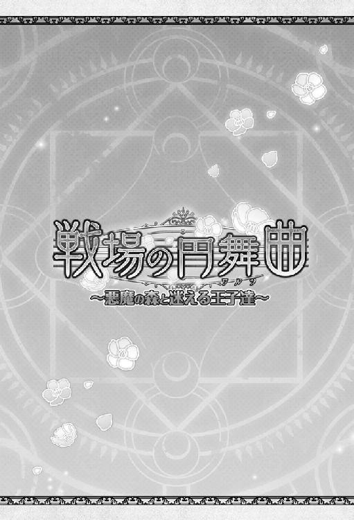

| オトメイトノベル 戦場の円舞曲～悪魔の森と迷える王子達～ | |
| 片桐由摩 | |
| (2015) | |


「やぁラン、今晩は」
「......メフィスト？」
ふと気付くと、私は森で見知らぬ城の前に立っていた。
ミルヴェリアのそれと比べると小振りではあったけれど、美しい城だった。濃灰色の石がきっちりと積み上げられた壁は蔓薔薇が絡みつき、沢山の深紅の花を咲かせている。奥に見える尖塔が、特に私の目を引いた。大きな窓には蒼い花──恐らくアネモネがモザイクで描かれていて、花びらがまるでサファイアのように煌めいていた。
「メフィスト？ ここ......何処？ ミルヴェリアの森？」
「一応そういうことになるかな」
「一応？」
「色々なものが解決して、私はすっかり退屈になってしまってね。だから新しい遊びを始めようと思うんだ」
彼は左右で色の違う瞳を面白そうに細めた後、一歩だけ私に歩み寄った。
「待って、メフィスト。遊びって......何？ 一体何を......──あっ!?」
彼が私の額に指で触れた。氷でも押しつけられたのかと思うようなその冷たさに、反射的に身を引く。
その瞬間。
何か蒼いものが私の視界に散らばって──世界が消えた。
第一章
「ラン、おはよう！ さぁ起きて起きて！ 今日は日曜日だよー！」
（......え？）
聞き覚えのない声に私ははっと目を覚まし、ベッドから躯を起こした。
「ん？ どうしたの変な顔して？ あ、もしかして久し振りに......嫌な夢でも見た？ 大丈夫？」
くすんだ赤茶色の髪に、濃いオレンジの瞳の少女が心配そうに覗き込む。
（この人......？）
「......あの」
「ラン？」
「貴女......誰ですか？」
「え」
彼女は目をぱちくりさせた後、笑顔で私の肩をぽんと叩いた。
「もう、やだなぁ！ そういう冗談は私には通じないよ？ どうせからかうならパシュとかの方が面白いと思うよ？」
「パシュ？」
問い返した後、私は部屋の中を見回す。三つ並んだ大きな窓と、壁の両端に置かれたお揃いの机。カーテンと絨毯、そしてベッドカバーはお揃いの少しピンクがかったオレンジで、チェストの上の花瓶には満開のマーガレットが生けられている。そしてその花瓶の水は、昨日私が入れ替えた。つまり、ニルヴァーナのいつもの寮の部屋だった。
「机とベッドが......二つ......？」
「ラン、待って！ あなたにしてはなかなかの演技だと思うけど、そろそろいいでしょ？」
私をじっと見つめる彼女の表情が微かに強張っている。
「ほら、今日はこーんないい天気だよ？ 港通りにバザールが立つから一緒に行こうって先週から約束してたでしょ？」
そう言った彼女が促した窓の外は、確かに晴れ渡っていた。朝の眩しい白い光がぴかぴかに磨かれたガラスから射し込んで、目に痛いくらいだった。
「あの......ここってニルヴァーナですよね？」
「そうそう！」
「......私は、ラン」
「そう！ その通り！」
「......それで、あの......」
「......ラン？」
彼女の声が泣きそうなそれに変わる。
「私だよ、ユリアナ！ あなたと同室だったんだよ？ ......ねぇ、まさか本当に......」
──何処かで出会った人のような気はしていた。だから彼女に対する不安は殆どなかった。私にこんなにも親しげに話しかけてくれる彼女が悪人にも思えなかった。
けれど。
「ご......ごめんなさい。私......分からないんです、本当に......」
「おい！ ランが記憶喪失になったって本当かよ、ユリアナ！」
食堂の隅に座った私とユリアナに、金髪の青年が駆け寄って来た。耳や腕などに沢山の装身具をつけ、腰には豪華な布を幾重にも巻くという、他の生徒とはちょっと違った着こなしをしている。
「早いわね、ラスティン。誰に聞いたの？」
ユリアナが問うと、ラスティンと呼ばれた彼は食堂の入り口を目で促した。
「今そこで、マイアとレオニダスが話してるのを偶然聞いたんだよ。......っていうか、冗談じゃないよな？」
「彼女が、そんな性格だと？」
二人に見つめられ、私は困惑した。持っていたパンをお皿に置き、小さく息を吐いた後、答える。
「......ラスティンさんも、私の友達だったんでしょうか？」
「な......！」
（すっごく驚いてる......ってことはやっぱり......知り合いだったんだ......）
私は起きてからの出来事を思い出しながら、呆然となっているラスティンさんにぎこちなく笑んだ。
──朝、目覚めたら何かがおかしかった。
自分がランという名前であることもニルヴァーナの生徒であることも、寮で暮らしていることも、ちゃんと覚えていた。
けれど──同室のユリアナという少女が誰だかちっとも分からなかったのだ。
（制服もいつも通り着替えられたし、食堂の場所だって覚えてたのに......）
南に面した窓から燦々とした陽差しが射し込む広い食堂では、私達と同じ制服の生徒達が楽しそうに食事している。その光景に何となく見覚えはあっても、座っている生徒の顔は全く見覚えがないのだ。
ラスティンさんは何か言いたげに私をずっと見ている。けれど、必死に思い出そうとしても彼のこともユリアナのことも、やっぱり分からない。
申し訳なさに息苦しくなってきた時、一人の少年が足早に近付いて来た。オレンジがかった茶色の髪に、明るい緑の瞳。ラスティンさんとはまた違った意味の、独特な制服の着崩し方だった。
「おーっはよー！ 何みんな不景気な顔してんの？ あ、ねぇねぇ今日のスープって何？」
「白身魚とトマトとじゃがいも」
そう答えたユリアナが、少年の肩をぐいっと引いた。
「ねぇラン、さっき部屋で言ったパシュってこの子なんだけど......覚えてる？」
「はぁ？ ユリアナつまんねーこと言うなよ。じゃぁ俺、飯取って......」
少年が明るく笑い飛ばし、踵を返す。
「......いいえ」
「え!?」
彼はぐるんと振り向いた。目は真ん丸に見開かれ、全身がわなわなと震えている。
「あのなユリアナ、朝っぱらからつまんねぇ冗談で俺をからか......」
「からかってるんじゃないの、パシュ。どうやら本当に彼女......私達のこと忘れてしまったみたいで」
「......えっと、申し訳ありません」
咄嗟に答えたその言葉が、とどめになってしまったことに気付く。パシュさんが更に口を限界まで大きく開いて、信じられないものを見るような顔になったからだ。
「......うっそ......」
「嘘だと思いたいのはこっちだぜ。不幸中の幸いで、自分が誰かは分かってるみたいなんだけどな」
パシュさんがおそるおそる私を見る。そしてぎこちなく笑う。
「お、俺......パシュって言うんだけど......や、やっぱり......見覚えない感じ？」
その問いに、少し考えた後私は答えた。
「正確には......見覚えがある気はするんです。ユリアナのことも、他の皆さんのことも。こんなふうに食堂でみんなと話してたこともあるような感じはします。だから怖い気は余りしないんですけど......『誰か』がどうしても思い出せないんです」
「そ、そうなんだ......」
「おはよう、みんな」
「ニケ、いいところに！ お前、記憶喪失に効く薬とか持ってねぇ!? つーか作れ！」
「え？ どうしたの？ 流石に僕でも記憶喪失を治す薬は......──ラン？」
彼は聡いのかも知れない。私の表情から、ユリアナ達が何も言わないうちに事態を理解したようだった。
長い睫毛に縁取られた灰紫の瞳に宿る感情が何なのか、私にはすぐに分からなかった。決して冷たくはなかったけれど、寂しげにも少し苛立っているようにも感じられる。細身で、全体的に少女めいた印象の彼に無言で見つめられると、弱い者を傷つけてしまったようないたたまれなさがあった。
「......もしかして君が忘れてしまった？ 僕のことも......みんなのことも？」
やがて、真摯な眼差しで問われ、私は小さく頷く。
「ユリアナ、昨夜何か変わったことはなかった？」
「なーんにも！ いつもみたいにお茶飲みながらちょっとだけ夜更かしして、普通に寝た。......うなされてる様子とかも、多分なかったと思う。変な奴が知らないうちに部屋に入り込んだりして、彼女のベッドに寝てたとかもなかった」
「よう、どうしたんだよお前ら」
「あ、ヴィルヘルム」
真紅の髪の大柄な青年がのんびりと歩いてきて、私に笑いかける。
「ラン、今日の午後って空いてねぇ？ 一緒にマルクの稽古しないか？ あいつ最近......」
「無理だよ、多分」
「ラスティン、お前に聞いてねぇ」
「私も多分無理だと思う。あと今日の先約は私ですから。ランと港通りでバザールひやかして美味しいもの色々食べる予定だったの。......ちょっと無理そうだけど」
「無理そう？」
ヴィルヘルムさんが、微妙な空気に気付いたらしかった。私と、他のみんなの顔を何度か見比べて訝しげな面持ちになる。
「ラン？ ......どうしたんだ、何かあったのか」
「......ヴィルヘルム。騒がないで落ち着いて欲しいんだけど」
ニケさんが静かに切り出す。
「彼女、ちょっと記憶喪失みたいで。だから理由がはっきり分からないうちは余り強い刺激を......」
「ラン!? おいラン!? まさか俺のことは忘れてないよな!?」
「え、あの......っ」
がしっと私の肩を掴み強く揺さぶるヴィルヘルムさんを、ラスティンさんが引き剥がす。
「刺激するなって言ったろ！ 安心しろ、お前のことも綺麗さっぱり忘れてるよ！」
「ラン!? 嘘だよな!? 俺のことだけは覚えてるよな!?」
そのがっしりとした体躯と、鋭い印象の表情からは想像出来ないような狼狽ぶりに、私も困惑する。濃い紫の瞳に縋るように見つめられ、私はなかなか言葉を口に出来ない。
「覚えてるよな？ 俺のことは!?」
けれど──やはり嘘はつけない。
「......も、申し訳ありません......」
「えっ......」
その場にへなへなと座り込んでしまったヴィルヘルムさんを押しやりながら、ラスティンさんが周囲を見渡す。
「もしかして、アベルとかも？ 教官とかはどうなんだ？」
「少なくともマイア教官のことは分からなかった。他はまだ......」
「あ、皆さん、おはようございます！ ......あれ？」
「いいところにアサカ！ ラン、こいつのことは分かるか？」
ラスティンさんが、やってきた細身の少年を私の前に引っ張り出す。その場にいる全員が息を呑み、私の唇から出る言葉を待つ。
「......いいえ」
数秒後、私は小さく首を横に振った。落胆、そしてほんの少しの安堵が入り交じった溜め息がさざ波のように広がる。
（あれ？ 何だろう？ この感じ......？）
「え？ え？ 今のってどういうことなんです？」
「あのね、彼女......記憶喪失になってるっぽいの」
「記憶喪失!?」
アサカと呼ばれた彼が、痛ましげに私を見る。艶を帯びた真っ直ぐな黒髪をきりりと一つに束ね、凛とした印象の彼にそんな顔をさせたことに、また心が重くなった。
「流石に......冗談ではないですよね？ 一体どうしてまたそんなことに？」
「理由が全然思いつかないから私も困ってる。とにかく昨夜までは普通だったの」
「......メフィストのところに連れて行った方がいいかなぁ。あ、ちょっと脈みせてね」
ニケさんが私の手首をそっと確かめた後、失礼、と医者のような仕草で瞼を押し上げる。
「脈も、瞳孔も特におかしい感じはないなぁ。熱もなさそうだし。やっぱり精神的なものかも知れないね。魔剣ももうなくなったわけだし......僕達が知らないところでまだ何か繋がってるとかなら別だけど」
「それはねぇよ！ 絶対ねぇ！ もうあんなものはこの世にねぇ！」
ヴィルヘルムさんが鋭く言い放つ。
「あとメフィストは駄目だ！ あいつは信用ならねぇ！」
「そう言われても......確かにまぁ胡散臭いところはあると思うけど。じゃぁ後は......ティファレトとか？」
ニケさんが、何やら含みのある眼差しをラスティンさんに向ける。
「......俺としては全力で賛成はし兼ねるけど、でもまぁランの記憶を元に戻す方が先だ。取り敢えず朝飯を済ませて、それからみんなで城下に出よう。......あ、アベル」
「......おはよう。......何かあったのか？」
「大ありだよ」
パシュさんが溜め息の後、私をちらりと見る。
「ランがどうかしたのか？」
そう問うた後、黒髪の長身の青年がつかつかと歩み寄って来て、私を見つめる。
「......ラン？」
深い湖のような、綺麗な深い青碧の瞳だ。以前にもこの瞳を見た気がするのに、やっぱり彼のことは分からなかった。
「記憶喪失みたいなの、彼女」
その瞬間、彼の端正な顔が強張った。
「だから、飯の後でティファレトのところに行ってみるつもりなんだ。お前はどうする？」
ラスティンが問うと、アベルは一瞬の迷いすらなく答えた。
「行くに決まってるだろ」
「ユリアナ！ マイアから聞いたぞ！ ランが記憶喪失になったんだって!?」
朝食の後、回廊を歩いていると向こうから一人の男性が駆け寄ってきた。
（この人、私達と服が違う？）
「ああ、エリアス教官。そんなわけで今から俺達、城下の陰険な魔法使いの店に行って来ます」
（そうか、教官なんだ......）
「......ラン......」
私の前に立ったその人は、重苦しい表情で大きく溜め息をついた。それでもその佇まいからは穏やかさと生真面目さが感じられて、私をほんの少し安心させた。やはり誰かは分からないけれど、信頼出来る存在に思えた。
「何が起きたというんだ、まさかまた魔剣が君に何か......」
「それは信じたくない。大体あれはもう消滅したはずだし」
ヴィルヘルムさんの言葉に、エリアス教官は眉をひそめる。
「それは確かにそうだな。......じゃぁ何故？ 彼女だけなのか？ 他の生徒は？」
「まだ全員調べたわけではありませんが、彼女だけのようです。少なくとも男子寮では妙な騒ぎは起きてなかったですし」
「彼女だけ、か......。それはやはり慎重にならざるを得ないな」
「大丈夫だ、こいつの記憶は絶対に俺が取り戻す」
「ア、アベルさん？」
自信を通り越し、威圧感さえ覚えるその態度と、教官への対等な口調に、私は驚いて小さく後ずさってしまう。
「......いや。......取り戻し、ます」
そんな私の顔を一度小さく見たアベルさんが、歯切れ悪く言い直した。
「まぁ、君達が揃っているなら大丈夫だとは思いたいが......」
「いやいや絶対思い出させるから！ この俺が！」
ヴィルヘルムさんが身を乗り出すと、エリアス教官が苦笑を浮かべた。
「まぁ、彼女だからと言って勘繰り過ぎるのも良くないかも知れないな。実際、鍛錬中や戦場で、頭などを強く打って一時的な記憶障害が起きた生徒は今までもいた」
「でも寝て起きたらこうだったんです、ランは」
「う、うむ......それは......あれ？ そう言えばメフィストには診せたのかい？」
「さっき医務室を覗いたんですが、不在のようでした」
ニケさんが答えると、教官は回廊の向こうを見遣った後で言った。
「そうか、なら仕方ないな。まぁ余り落ち込まないように、ラン。彼等は間違いなく君の大切な友人達だよ。きっと力になってくれる」
「......はい」
その言葉が、私の心をふわりと温かくする。そしてそう口にしたエリアス教官の笑顔もまた、私を安堵させるものだった。
「ただ、ユリアナは出来れば残って欲しいんだが......」
「私に何か？」
「実はさっき連絡があって、ダグロートから来年の新入生候補が見学に来たいということでね。案内役として君が適役かなと思ったんだが」
「そうなんですか」
「ユリアナ、私は大丈夫だから」
私は彼女に小さく笑んだ。
「......ラン」
「朝から、色々迷惑かけちゃってごめんね。でもきっとすぐにユリアナのこと思い出すから。......ううん、絶対に思い出すから待ってて」
「......──ラン！」
次の瞬間、ユリアナが私のことをぎゅっと抱きしめた。
「良かった、ちゃんとランだ！」
「え？ え？」
「それならきっと私達のことすぐに思い出せる、大丈夫！ 教官が言ったようにきっと一時的なものだよ。 きっと今晩にはまたお茶飲みながらお喋り出来る！」
「うん、そうだよね」
「みんな、ランのこと頼んだからね！ 何かあったらちゃんと守ってよね！ 怪我とかさせたら許さないんだから！」
「任せとけ。大体、城下行くだけなんだから。そんな戦場に見送るような態度は大袈裟だぞ」
「あ、そうだった」
肩を竦めたラスティンさんに、ユリアナがつられて同じように苦笑する。
「じゃぁそろそろ行くか」
「行ってらっしゃい！ じゃぁラン、また寮でね！」
そうしてユリアナと教官に見送られ、私達は回廊を後にしたのだった。
「ラン、どうだ？ 街は覚えてるか？」
ニルヴァーナの校門を出ると、ラスティンさんが尋ねてきた。
「街も......覚えてます」
私は目の前の道を少し眺めた後、周囲をゆっくりと見渡した。
空に煌めく虹色の魔法陣や、港から時折吹いてくる潮風の匂い。この大通りの街灯を飾る花籠が昨日新しくなったことさえ覚えているのに、私を心配そうに見ている彼等のことが誰一人として思い出せない。
ただ、それが『おかしい』ことは分かった。自分の中から何かを強引に消し去ったような違和感がはっきりとある。
「うーん、でもやっぱり僕達のことは忘れちゃってるんですねぇ」
「......ごめんなさい、アサカさん。......それにみんなも」
「あ、いえいえ！ 申し訳ありません、僕の言い方が良くなかったですね。決して貴女を責めるつもりじゃなかったんです」
アサカさんが慌てる様子を見て、内心更に申し訳なくなってしまう。
「取り敢えずティファレトのところに行こう。......魔法でどうにかなるかも知れないしな。っていうかしてもらわないと困る」
ラスティンさんがそう言って歩き出し──そしてすぐにふと思い出したように振り向いた。
「ラン、俺達のこと忘れてるのは分かったけどさ、ラスティンさんとか、そういう堅苦しい呼び方とか話し方はやめよーぜ。こう、もっと親しい感じで」
「......親しい感じ」
「そうそう、別に行儀良くしてる必要もないしさ、とにかくまぁ遠慮はなしで」
「わ、分かりました」
「いやいや、そこはいつものランなら『うん、分かった』だから」
「え......っ」
戸惑っていると、ラスティンさんだけでなく他のみんなも期待に満ちた眼差しを向けてくる。嬉しいような気恥ずかしいような感覚は、不思議と懐かしかった。
「......──う、うん......分かった」
「よし」
満足したようにラスティンさん──ラスティンは何度も頷き、再び歩き出す。そうしてみんなの後をついて石畳を踏みながら、私は今日何度目かの溜め息をついた。
（......街のことはこんなにちゃんと覚えてるのに......）
少し話すと、みんな確かに初対面ではない気がする。きっと会ったことがあるのに、それでも私の中からユリアナやアベル達の存在が消え去っていることが歯痒い。
（記憶喪失......一体どうしてこんなことになっちゃったんだろう）
ユリアナが説明した通り、昨夜は何も奇妙なことはなかった。ベッドに入り、目を閉じた時のことまでやけにはっきりと浮かぶ。
確か、満月だった。部屋のカーテンが細く開いていて、そこから青白い光が射し込んでいた。
（そう言えば、何か夢を見たような気もするけど......あれ？）
「あれ？ みんなお揃いでどうしたの？」
「いいところに、ティファレト」
歩いているうちに、いつの間にか港通りの方まで来ていた。見知らぬ男性がゆっくりと歩み寄ってくる。
ティファレトと呼ばれた彼は着ているものが制服ではないし、私達よりは少し年上のようだった。女性の私でさえ横に立つのが躊躇われるような整った顔立ちをしていて、特に印象的なのはその金色の瞳だ。
「彼女、記憶喪失になっちゃったんだ。何かいい魔法ない？」
「......え」
その瞬間、私に向けられた眼差しはひどく冷たかった。まるで禍々しいものを蔑むような、そんな瞳が怖くて私の躯が強張る。
「また、あいつか？」
「あいつ？」
私達全員が口を揃えると、今度は彼の眼差しがふっと柔らかく──それでいて哀しい光を帯びた。
「ラン、僕のことまで......忘れたの？」
長い指で私の頬をとらえ、彼は美しい月の色の瞳で私を見つめる。
「ご、ごめんなさい、あの......」
吐息がかかる程の近さに、私は思わず後ずさってしまった。すると彼はひどく残念そうに肩を落とし、空を睨んだ。
「一応聞くけど、ニルヴァーナで何かあったのか？」
アベル達が揃えて首を振った後、アサカが丁寧に切り出した。
「だから、貴方なら何か治療方法をご存知ではないかと思って」
「嫌な予感しかしないな」
「どういうことです？」
「こういう不愉快なことを仕掛ける奴に、心当たりがあるということだよ」
「え!? 誰ですか!?」
私はさっき引いた身体を乗り出し、彼に尋ねた。
「あの、何でもいいので教えていただけませんか？」
「ラン......」
「とても......妙な感覚なんです。みんなのこと分からないのに、でも他人な気がしなくて......。学校のこととかは覚えてるんです、この港通りだって何度も歩いたと思います。でも......その時に誰かと一緒だったとか、そういうことが思い出せなくて......私、早くみんなのこと思い出したいんです」
「その言葉だけでも泣けるね」
ラスティンが嬉しそうに私の肩を叩いた時だった。
「これはこれは、勇敢なる戦士の皆さんお揃いで。それとも紳士淑女、と言った方が良いかな？」
「メフィスト！」
真っ先に叫んだのはティファレトだった。その表情は、最初に見せたあの侮蔑と同じだ。
（......あれ？ この男性......）
右が金で、左が緑。そんな色の違う双眸に褐色の肌。薄い笑みを浮かべて一見穏やかそうなのに──全身から漂う底知れない気配に、鋭い緊張感が走り抜けた。
「まぁそう怒らないでくれたまえ、魔法使い。今日は君達と遊びたくて来たんだ」
「つまらない戯れ言を」
「さて、これは何だろう？」
彼は──メフィストはぱちん、と指を鳴らす。すると、彼の手の上に蒼い炎が煌めいて弾けた。
「これは彼女の記憶の欠片」
「な......っ!?」
彼の掌の上で、幾つもの蒼い宝石の欠片が舞っている。手には触れていないのだ。もちろん、風が吹いているわけでも糸で操られているわけでもない。太陽の光を反射し、小さな蒼い光を振りまきながら、それはゆっくりと回転しているように見えた。
「今いるここはね、あのオルテシアの別世界なのだよ」
「はぁ？」
何人かが揃って、不審そうな声を洩らした。
「街並みもこの美しい海も、そして天空に煌めくあの魔法陣も......──総て同じに見えるけれど、本当は違う世界だ」
「い、意味分かんねぇこと抜かすな！」
ヴィルヘルムがメフィストの胸倉を掴み上げようとした。
「うおっ!?」
けれどその手は幻を掴むように擦り抜け、ヴィルヘルムは大きくバランスを崩す。
「無駄だよ、ヴィルヘルム。今、私は『ここ』にはいない。......もっとも、君達の前に存在したとしても、人間は私を傷つけることなど出来ないがね」
「てめぇ......っ」
「退屈なのだよ、私は」
メフィストが私に向かって目を細めた。
「ラン、私は君という存在をとても気に入っていてね。いや正確には君と、君を取り巻く人間達が、かな？ それでまた新しい遊びを思いついたんだ」
『......だから新しい遊びを始めようと思うんだ』
（あれ？）
頭の奥で、声が重なった。彼の同じような言葉を耳にしたことがある気がした。
「どういうことかというとね。......君から、君に関わった人達の記憶を消してみた。その結晶がこれだ」
「やはり貴様か！」
「返さない、とは言ってないからね？ 私は森の奥の城にいるから君達みんなで取り戻しに来るといい。丁重におもてなしさせていただくよ。......では」
次の瞬間、メフィストの姿が跡形もなく消え去る。最初からそこに誰もいなかったかのように。
「え、え？ あの......今のってメフィストですよね？ 医務室の？ 彼って......あんな性格でした？」
「彼の本性に気付かなかった君は幸せ者だよ、アサカ」
「ティファレト......？」
「さぁ森へ行こう、ラン」
ティファレトが私の手を掴み、いきなり歩き出す。
「おい待て、勝手な行動はするな」
そんな私のもう片方の手を、アベルが掴む。
「さっきの話しぶりからすると、お前はメフィストと親しいのか？」
「......そうだね。ある意味ではここにいる誰よりも『親しい』ね」
答えるティファレトの声は私達に向けるそれとは比べものにならないくらい冷たい。そこに滲む明確過ぎる嫌悪をアベルも感じ取ったのか、次の言葉に迷う気配があった。
「あいつは......何者なんだ？ 魔法を使えるってことはお前と同じ魔法使いってことじゃないのか？」
「一緒にしないでくれ」
更に冷たさを増した声音で、ティファレトが続ける。
「あいつは『悪魔』と呼ばれる存在だよ」
第二章
「なぁなぁティファレト！ 悪魔ってやっぱりあの悪魔!? 絵物語とか昔語りに出てくる奴!?」
「一応聞くけどパシュ、君が知ってる昔語りの悪魔ってどういうもの？」
「うーんとな、幾つかあるんだけど......」
あれから数時間後。
私達は森を歩いていた。念のため一度ニルヴァーナに戻り、武器と簡単な野営の準備をして、意気揚々と森に足を踏み入れた。
「ダグロートにさぁ、こういうのがあるんだ。牛の頭と羊の身体のすげーでっかい悪魔が、産まれた子供の息の根を止めにくるっての！」
「それはそれで恐ろしいとは思うけど、あいつは......メフィストはもっと違うな。説明しようとするとなかなか難しいんだけど」
「実は殺人鬼とか？」
「いや、彼が自分の手を汚すとかじゃなくて......とにかく、姑息というか、人を困らせることが趣味みたいな奴だよ」
「それだけ聞いてると別に大したことないように思えるけど......でもまぁ実際、ランの記憶はこんなことになってるんだもんな」
「あいつの得意技なんだよ。......──誰かの記憶を操ることなんて」
ティファレトが、言葉の最後にちらりと私を見た。けれどそれに気付いた私が何かを言おうとすると、彼は顔を背けてしまったのだ。
（気のせいかな......でも、確かに私を見たと思ったんだけど......）
「......ところで、ちょっと気になってるんですけど、この森に城なんてありましたっけ」
「俺達が知る限りはないな」
「......ですよねぇ」
アベルの冷静な回答に、アサカが小さく肩を落とした。
そう──この森に、そんな建物はないはずだった。少なくとも、私が覚えている限りでは。
「大体、この森は私有地じゃないよな」
「まぁ森の奥の方に確かに余り人が来ない場所はあるけど......流石に城は僕も見たことがないな」
「森の番人みたいなニケが言うなら間違いないな！」
「しっかしあのメフィストって奴はほんっとに最悪野郎だな！ 俺達に恨みでもあんのかよ！」
ヴィルヘルムが転がっていた石を蹴飛ばす。
「恨みはないんだよ、全然」
ティファレトがまた空を睨む。確か港通りにいた時にも彼はああして空にきつい眼差しを向けていた。
（......違う？ 睨んでるんじゃなくて......もしかして魔法陣を見てる......？）
「あいつは、僕達人間を恨む程その存在に執着なんてしてない。ただ本当に気紛れに、退屈を紛らわせるために......」
そこでふとティファレトが言葉を切り、私を見た。
「いや、もしかしたらさっき言ったように、本当にランには執着しているのかも。......彼なりに」
「わ、私？」
「君が記憶喪失になったと聞いた時はあんまりだと思ったけど、今は少しほっとしてる。......以前のあいつの仕打ちも忘れてるってことだろう？」
「......何か、あった？」
私がおそるおそる尋ね返すと、彼は優しく私に微笑みかける。
「ちょっと意地悪をされただけだ。あのことはもう永遠に忘れていてもいいよ」
「そ、そんなことが......？」
「あの悪魔は分かっててやってるんだ。......僕達人間にとって『忘却』がとてつもない苦痛だと」
「......──忘却」
ヴィルヘルムが、何故か譫言のようにその一言を繰り返した。彼の濃い紫の瞳に不安とも憎悪ともつかぬものが揺らめき、すぐに消えた。
「だって辛いだろ、現に。彼女に忘れられて」
「辛い」
アベルと、ラスティンと、パシュと、ヴィルヘルムの言葉が微塵のぶれもなく重なった。ニケは何も言わず、アサカは押し黙っている。
「ご、ごめんなさい......」
私は思わずまた詫びてしまった。
謝ってもどうにもならないと分かっているし、謝罪ばかりを繰り返すのも卑屈な気がした。でも、今私が彼等に口に出来る言葉がこれしか浮かばない。
事実、迷惑をかけていると思う。私にこんな奇妙なことが起こらなければ、こんなふうに森を探索することなどなかったはずなのだ。
（せめて私に何か出来ることがあればいいんだけど......）
アベル達のことを誰一人思い出せず、そして自分がすべきこともすぐに見つからない。それがまた私を小さく苛立たせるのだった。
「忘却かぁ」
不意に、ニケが独り言のように呟いた。
「......──都合の悪いことだけ、全部消せる魔法とかがあったらいいのにと思ったことはあったな」
「ニ、ニケ!? どうしたんだよ、何か辛いことがあるなら相談に乗るぞ!?」
「有難うパシュ、大丈夫だよ。今はもう幸せだし。過去形だよ」
「そ、そっか......ならいいんだけど......」
それから私達はずっと森の中を歩き続け──気付くと、いつの間にか西の空がオレンジ色に染まっていた。
「もう夕暮れか。一応聞くけど、どうする？ このまま残るか、ニルヴァーナに戻るか」
ラスティンの問いかけへの、みんなの答えは「もちろん残る」だった。
「明日出直して、事態が好転するとも思えないからな。一刻も早くその城とやらを見つけ出すべきだ」
「基本的にはアベルの意見に賛成ではある。ただ僕が一つ気になるのは......この森自体がもう、あいつの罠なんじゃないかってことだ」
ティファレトの言葉に、みんなが不機嫌そうに眉を寄せた。
「薄々おかしいとは思ってるだろ？ 確かにそれなりに広い森ではあるけれど、半日以上歩いてまだ奥らしい奥に辿り着かない。僕だって君達だって、ここは庭のように歩き慣れているはずで、迷うこともないはずなのに......」
「だったらどうだって言うんだ。もしそうだとしたら尚更、あいつを捕まえるべきだろう」
苛立ちを含んだアベルの声が、ティファレトを遮る。
「......ああ、ごめん」
ティファレトがそこで何故か、からかうような笑みを浮かべた。
「ごめんね、アベル。君はもともと無愛想で無口だから気付かなかったけれど、きっと今、すごーく怒ってるんだね？」
「そんなことはない」
「声が怖いよ。そんなんじゃ彼女も怯えちゃうんじゃない？」
「え......っ」
短い呻きのようなその声と共に私を振り返ったアベルの表情に、私は驚いた。食堂で出会ってからずっと全く笑いもせず、むしろ不機嫌そうで、森に入ってもみんなと殆ど話さない。そんな彼が──物凄く動揺していたからだ。
「まぁまぁ！ じゃぁ野営の準備しよーぜ！ もしものためにその準備もして来たんだしさ！ アサカ、ニケ、何か食べるもん探しに行こーぜ！」
「そうですね、少しでも陽があるうちに」
「ラン」
ニケが不意に手を差し伸べた。
「良かったら一緒に実を摘みに行こう。......以前の君は森でよくそうしてたし、何か思い出すこともあるかも知れないよ」
「そ、そう......だった？」
「ニケの言う通りだな、気分転換にもなるだろうし行ってこいよ。俺達は俺達で何か探しに行くからさ」
ラスティンが軽く私の背中を押す。その後ろではアベルが少し居心地悪そうに俯いていた。
「じゃぁ、そうするね。みんなの分も、沢山摘んでくる！」
私は出来るだけ明るい笑顔でそう答えた後、その場を離れた。
「ラン、もしかして落ち込んでる？」
ぼんやりとブルーベリーを摘んでいると、不意にニケが私の顔を覗き込んだ。はっと横を見ると、アサカも少し困ったように私を見ている。
「お、落ち込んでるっていうか......」
私は摘んだブルーベルーを草の籠に落とした。
「みんなに......迷惑かけちゃってるなって」
「え!? そんなことないですよ！」
私の言葉を、アサカが即座に否定した。
「一体何故そんなふうに思うんです？」
「......だって、私の記憶がこんなことにならなければ......」
「うーん、気持ちは分かりますけど、そこまで思いつめなくてもいいと思いますよ。多分、記憶を失ったのが貴女でなくとも、みんなやっぱり一緒に来たはずです」
彼が変に気を遣うふうでもなく、ごく自然に言ってのけたことに私は驚いた。そしてその言葉はどんどん私の心の中に染み込んできて、遂には誇らしいような気持ちが芽生えてきたことにまた驚く。
彼等を見ていれば、私と知り合いだったことはすぐに分かる。けれどその知り合い同士の彼等がどんな関係だったのか、私は少し不安だったのだ。
けれど今のアサカの言葉は、みんなの中に確かな結びつきがあることを示している。しかも私もちゃんとその中に混ざっているらしい。記憶を失ってからずっと視えなかった自分の立ち位置を、少しだけ探り当てた気がした。
「不安になりますよね、いきなり自分の周囲の人達のこと忘れちゃったら。僕も同じことが起きたら......想像でしかないですけど、でもやっぱり心細いだろうと思います」
「アサカの言う通りだよ、ラン。ラスティンが校門のところで言ったように、君が僕達に遠慮なんてする必要はない」
「ニケ......」
「僕達は、君を助けたくて、君の記憶を取り戻したくてここにいるんだから。そしてそれは決して誰かの命令じゃない。僕達が自分で決めたことだから。......きっかけが、メフィストだったとしてもね」
ニケは静かに笑み、いつの間にかブルーベリーでいっぱいになった籠を抱え上げた。
「さぁ、そろそろ向こうにいるパシュに声をかけてアベル達のところに戻ろう。きっと、君が食べきれないくらいの量の魚を釣ってきたり、肉を用意したりしてると思うよ」
ニケの予想は見事に的中した。私達が戻って目にしたのは、燃え盛る火をぐるりと囲むように刺された魚や肉の串。
「この鱒、うめー！ 誰が釣ったの？」
「俺に決まってるだろ」
ラスティンが得意げに笑む。
「じゃぁこの兎肉は？」
「俺だよ、俺」
ヴィルヘルムがラスティンに負けじと胸を張るので、私は思わず笑い出しそうになる。さっき少しだけ重くなった空気はもうすっかり変わっていて、その屈託のない明るさに、また微かな懐かしさを感じる。
「なぁ、ランがニルヴァーナに入って少ししてから、俺達とこうやって野営の練習に来たの覚えて......ないか、やっぱり」
最後はほんの少し尻すぼみにパシュが言った。
「......それ自体は、やっぱり覚えてない。でもみんなとこうしてると......ほっとする」
「本当に!? じゃぁニルヴァーナで起きたこと再現すれば記憶って戻るんじゃね!?」
「その可能性も否定はしない。......ただ、彼女に起きたこと総てが幸せなことだとは思わないけどね」
「ティファレト......」
「僕は基本的にその作戦には賛成しない。それこそ、ちょっと木の実を摘むとか焚き火を囲んで談笑するくらいならいいけど......彼女を危険な目に遭わせたくない」
「私、そんなに危ない目に遭ったの？」
「え」
思わず問い返してしまった後、みんなが無言になっているのに気付く。誰が最初に言葉を切り出すのか探り合うような空気の中、ヴィルヘルムが食べ終わった串を小さく振りながら言った。
「危ない目に遭ったとは思ってなかったかもな。そう思う前に飛び込むような感じだった」
「......ああ。......確かに」
ラスティン達が妙に納得したように頷くのを見て、何だかばつが悪くなる。
「でもそれが君だったから、それでいいと思うよ」
ニケは何事もなくそう言って、ブルーベリーを口に放り込んだ。
「これだから、軍人の考えは嫌いだよ」
大袈裟に溜め息をついたティファレトが立ち上がる。
「ところで、彼女の寝床はどうするの？ まさか雑魚寝させるつもりじゃないよね？」
「そう言えば流石に毛布までは持って来てなかったな。まぁ今の季節なら草は沢山生えてるし、柔らかそうなところを選べばいいんじゃないか」
「おいアベル」
「あ、平気だよティファレト。草の上に寝るのも好きだから、気にしな......」
「君が気にしなくても僕が気にする。そもそも、女の子は君だけなんだから、もっと自覚を持つべきだ」
「それはあんたが意識し過ぎ。やましいこと考えてるから気になるんだろ」
「やましい以前に、女の子を大切に扱うべきだと言ってる」
「ティファレト！ ラスティン！ 私は本当に大丈夫だから！」
「そんなランのことが心配なら、交代で見張りすればいいんじゃないか。今のところ敵らしい気配はないけど、念のためってこともあるしな」
「そうですね、それがいいかも。僕もアベルの意見に賛成です」
「......信用出来ない。その見張りの男が眠りこけたり、ふっと魔が差したらどうするんだ」
「疑い深いな魔法使い。人を信用出来ないと悲しい人生が待ってるぞ」
「よし、いいことを思いついた。彼女の周囲に結界を張ればいいんだ。それなら人間でも邪悪なものでも近付いたらすぐに分かる」
「それであんたの気が済むならそれでいいと思うよ。万が一、またディモスでも出たら役には立つかも知れないしな」
──そんなやり取りを経て。
その夜、私はみんなから見えそうで見えない距離で独り眠ることになった。
「はいラン、これ」
草を整えていると、ティファレトが首に巻いていたストールを外して差し出した。
「足が寒そうだから眠る時にかけるといい。これ一枚剥がして別に僕が凄く寒くなることもないから、遠慮せず毛布がわりに使ってくれ」
「あ、有難う......」
有無を言わさぬ迫力で手渡され、私は好意に甘えることにした。私がそれを受け取ると彼は心の底から嬉しそうに笑み、続いて鋭く削った木の枝で私の周囲の土に模様らしいものを描き始める。
「ねぇティファレト。......その模様、あの空の魔法陣に似てるね。それとも魔法ってみんなそういうものなのかな」
私のその言葉に、ティファレトの指がびくりと跳ねた。
「ああ、そうか。......そのことも忘れてしまってるんだね」
「あ......っ」
彼の金の瞳に、悲哀が揺れた。ほんの一瞬、月が翳るように。
「魔法陣なんてみんな似たようなものだ。しかも素人......いや、こんな言い方は良くないな、魔術に詳しくない人間がみたら、それこそ区別なんてつかないよ」
彼が呟くように呪文を唱えると、その円から青白い小さな稲妻のようなものが放たれて夜の森を裂いた。
そしてすぐに光は消え、ただの土の模様に戻る。
「さぁこれで誰も君に近付けない。ベッドじゃないから安眠は難しいかも知れないけど、明日に備えてゆっくり躯を休めるといい」
「有難う、ティファレト。おやすみなさい」
ティファレトは微笑み、アベル達の方に戻ってゆく。小さくなった火影が夜の森にゆらゆらと映り込み、時折聞こえてくる彼等の楽しげな笑い声が耳に快い。記憶が私の中から消されてしまっても、何かがちゃんと奥底に残っているのだろうか。
『ああ、そうか。......そのことも忘れてしまってるんだね』
つい先刻のティファレトの小さな悲哀が、また浮かんでくる。
（もし、逆だったら......？ アベル達が私のことを忘れてしまったら......？）
心配するだろうか、辛いだろうか、悲しいだろうか。それとも何かを恨むのだろうか。
ぼんやりと夜空を眺めていると、星が一つ流れた。
それはあっという間に過ぎて、願いを口にする前に闇に溶けた。
（どうか早く記憶が戻りますように）
私は流れない星々に向かって静かに強く願って、瞼を閉じた。
「ぎゃあぁ──っ!?」
「な、何!?」
うとうとと眠りの淵に落ちかけていたその時──突然の男の叫びと共に、刺すような眩しさを感じて私は跳ね起きた。
「......ヴィルヘルム!?」
見ると、魔法陣がぱちぱちと青白い火花を放ち、そのすぐ後ろでヴィルヘルムが足を押さえながらうずくまっている。
「ラン!? 大丈夫か！」
すぐにアベル達が走り寄ってきたものの、そんなヴィルヘルムを見て微妙な空気が漂う。
「だから言ったんだ、信用出来ないって」
一番後から来たティファレトが、冷ややかな眼差しを向ける。
「い、いやこれは......ご、誤解だ、誤解！ 別にやましい理由じゃねぇ！ ただ俺はランが心配で、少し話がしたいと思っただけなんだよ！」
「みんながいる前じゃ出来ない話なのかよ」
よろよろと立ち上がったヴィルヘルムに、ラスティンも冷たく問う。
「べ、別にみんなの前でも出来なくはないけどよ、ただゆっくり話せないだろうって思ったんだよ。お、お前らだって誰かと一対一で話したい時ってあるだろ？」
「その気持ちはまぁ分かるけどね。でも......僕達が寝てる時に、まるで目を盗むようにランに近付くということは......やましいことを考えてたって誤解されても仕方ないと思うんだ」
そう言ったニケも、その横のアベルとパシュも──みんなの視線は凍るようでヴィルヘルムはすっかり小さくなってしまっていた。
「あ、あの......ヴィルヘルム、心配してくれて有難う。でも私は大丈夫だから」
「そ、そうか......。驚かせて悪かったな」
「ヴィルヘルムも夜はゆっくり寝てね」
「お、おう......そうだな......」
「取り敢えずまぁこれで、僕の魔法がしっかり効いてるって証明にはなったろ？ 他のみんなは同じ過ちを犯さないようにね」
誰からも答えは返らなかった。みんな何か言いたげではあったけれど。
「じゃぁ僕は戻るよ。おやすみ、ラン」
機嫌良さそうにティファレトが手を振り、歩き去ってゆく。その後に、やはりまだ何か言いたげなアベルが続く。最後の最後に残ったヴィルヘルムは、ずっとばつが悪そうに私を見ている。
「あ、あの......ヴィルヘルム、私さっきのことなら気にしてないから」
「......おう」
それでもヴィルヘルムはそこを動こうとしない。
「ヴィルヘルム？ もしかして他に何か？」
「......いや。......何も」
物凄く何かありそうな表情でそう言った後、ヴィルヘルムは怠そうに背を向けた。
「おやすみ」
「おやすみなさい」
背中越しの声に返事をしてから、私は去って行くその姿をそのまま見送っていた。
第三章
「さて、今日はどっちに向かう？ まだまだ森の奥って感じでもないし」
──そして翌日。
先頭に立って歩き出そうとしていたパシュが思い出したように振り返った。私達は昨日の残りで手早く朝食を済ませ、再び森の探索を始めようとしていた。
「闇雲に歩いても無駄だと思うが、かと言って手掛かりもないからな」
アベルが遠くを見やった。
「あるとしたらもっと奥ってことですよね？ それとも想像してるよりもっと小さくて、木に隠れて見えなかったりするんでしょうか」
「確かに、王城ほどの規模じゃないかも知れないな」
「もしくは魔法で目眩ましをしてる、とか？」
「流石にそれはないだろ、だって来いって言ったのはあいつなんだし」
「じゃぁやっぱり探し方が悪いのかなぁ」
方向性が微妙に定まらないまま取り敢えず歩き出してみるも、森は昨日と変わらない風景が広がっているだけだ。みんな決して気を緩めているわけではないだろうし、私ものんびりしたいわけではない。それでも歩けど歩けど木々しか見えず、聞こえてくるのも可愛らしい小鳥の囀りだけで──緊張感が弛んで少しずつ歩みが遅くなるのは仕方のないことだろう。
私も最初のうちは今日こそ見つけたいと、数歩ごとに左右を見渡し、背伸びしてみたりもしてみた。けれどそれを十回、二十回と繰り返しても城らしい建物は目に入らない。失望感が少しずつ私の心をくすませ始め、溜め息が何度も洩れる。
やがて太陽が南の空高く昇った頃──いきなりヴィルヘルムが立ち止まった。
「なぁ、つるんで歩くより、それぞればらけて違う方向探した方が良くねぇか？ 俺とランはこっちの方を見てくるからさ」
「えっ？」
ヴィルヘルムがみんなの答えを待たずに私の背を押して、歩き出そうとした──その時だった。
「うわぁっ!?」
突如、剣がヴィルヘルムの肩先を掠めて土に突き刺さる。
「敵か!?」
咄嗟に剣を構えるも、次の瞬間、信じられないことが起こった。
「危ない！」
頭上から、無数の剣が降り注いだのだ。
「ラン、こっちに！」
アサカに手を引かれ、私はすぐ側の大きな木陰に走った。そうして一度体勢を整えている間にも、剣は無数の針のように空から落ちてくる。少し先では、アベル達が木々の間を縫うように走り抜けながら剣を打ち返し、それぞれ大きめな木の下に逃げ込んでゆく。
「一体何なんでしょう、これ......」
「わ、罠かな......」
「そんな気がしますよね」
アサカが下げていた鞘から剣を抜き、頭上を睨む。けれど容赦なく降り注ぐ剣と、それに切り落とされた沢山の葉が無惨に宙を舞って、上で何が起きているのか見通せない。
「困りましたね......これじゃ全然身動き出来ない」
他のみんなも、それぞれの武器を手にしつつも息を潜めて剣の雨が降り止むのを待っている。
「まさかこれが延々続くってことはないと思うんですけど......」
暫くすると、突然森に静けさが戻った。
「あれ？」
私達は慎重に様子をうかがいながら、おそるおそる木の下から歩み出た。けれど空中にも、木の枝にも何も危険なものは見つからない。
「......あれ？ この剣、何処かで見たような......？」
不意に、土に刺さったそれを見ながらパシュが呟いた時だった。
「うわぉっ!?」
再び頭上から同じ形の剣が一本だけ落ちてきて、パシュが慌てて飛び退く。
「やはり......罠なのか？ 一体何処に......」
訝しげに様子を見守っていたティファレトが、遂に杖を宙に翳したその時。
「はははは！ いいザマだな！ 逃げるしか出来ないとは！」
何者かの声が響き渡った。

「いっ!? この声、まさか......あ！ そうだ！ これ使ってたのって確か......」
「そうだ！ 僕だ！」
「リシャール！」
見上げると、高い木の枝の上に私達と同じ制服を身に纏った少年が立っていた。そしてその周囲には、まるで彼を護るように剣が何十本も浮かんでいる。
「それだけ揃って逃げるしか能がないとは。惰弱な奴らだな」
彼がすっと右手を掲げると、浮かんでいた剣がまたアベル達目掛けて降り注ぐ。
「貴様ぁ！」
ヴィルヘルムが飛来した剣を少年に向けて弾き返した。けれど飛んでいったそれは視えない壁のようなものに阻まれ、再び数え切れない剣に分裂して落ちてくる。
「な、おい!? あれどーなってんの!?」
「知るか！」
幸い、少し離れた場所にいる私とアサカまで剣は届かない。
（どうすればみんなを助けられるかな......!? ただ飛び出していっても駄目だ、あの剣そのものを止める方法を考えないと......）
剣を握り直し、私が少しだけ前に出ると───頭上のその少年と目が合った。
「そこにいたのか、ラン」
「え!? わ、私!?」
「リシャール！ てめぇランを傷つけたらぶん殴るぞ！」
「......ふん」
彼がまた右手を高く上げると、こちらに向けて無数の剣が飛来する。
「おい、ラン!?」
私は必死に剣を握り、それを払おうとした。けれど──すぐに気付いた。その剣の総てが側にいるアサカにだけ降り注いでいることに。
「アサカ!?」
「僕は大丈夫です、これしき......っ！」
アサカは細身の剣で次々と剣を払いながら、じりじりと後退してゆく。私は少しでも手助けしたくて、大きく剣を振り続けた。鉄が弾かれる鋭い音が途切れなく響いて空気を震わせ、鼓膜が痛くなりそうだった。
「ははは！ 邪魔者は消え失せろ！」
少年が高らかに笑う度、空中におびただしい剣が浮かぶ。そしてその総てがまたアベル達に飛んでゆく。
「リシャール！ 戻ったら覚えてろよ！」
「馬鹿を言うな！ お前達はこの森で野垂れ死ぬ運命だ！」
まるで剣そのものが意思を持っているかのように、一度打ち払われたものがまた向きを変えて襲う。
「ティファレト！ あれってやっぱり魔法!?」
「だろうね」
逃げながらも冷たく答えたティファレトの杖の先に、美しい緑の光がぽうっと宿った──その時。
「うぁっ!?」
不意にアサカが呻き声を上げてよろめいた。右手に、あっという間に鮮血が滲む。
「きゃぁ!? アサカ！」
その声が届いたのか──それともただの偶然か、剣がぴたりと降り止む。
「うわー......ちょっとしくじっちゃいました......でもそんな大した怪我じゃないですから......っ」
「アサカ、後で薬草あげるね！」
「お願いします」
「......リシャール！ お前なぁ、卑怯だぞ！ 取り敢えず降りてこい！ 馬鹿と煙は高いところが好きって諺、知ってるんだからな！」
「ふん、誰がお前の指図なんて聞くと思う？」
彼がまた右手を掲げると、何もなかった空間から再び剣が現れる。
「少年。その魔力は一体誰から？」
ティファレトが問うと、少年がせせら笑った。
「お前に答える義務はないね」
「あっそう。......僕は一応平和主義者で、誰かを傷つけるために魔力は使いたくなかったけど......」
次の瞬間、杖の先の緑の光が蛇のようにうねったかと思うと、頭上の少年の足に絡みついた。
「うわぁっ!?」
光の蛇はそのまま彼の全身を鎖のように締め上げ、木の上から引きずり下ろしてしまう。そんな彼にアベル達はすかさず剣を向け、逃げられないように囲む。呆気なく立場が逆転し、私はすぐには動けず立ち尽くしてしまった。
「リシャール。......答えろ。お前、誰に命じられてこんな真似してる？」
アベルの剣の切っ先が、少年の喉に触れた。
「命令されたわけじゃない。これは僕が望んでやってることだ」
「じゃぁ質問を変える。お前、魔法なんて使えなかったろう。まさかとは思うが......」
「はは、羨ましいか!? これはな、あの胡散臭いメフィストのお陰さ。悪魔だなんて言ってたけど、馬鹿馬鹿しい、そんなの信じると思うか？ 大方、下級魔族が誇張してるだけだろうけど、一応魔力は本物みたいだな」
アベル達にぐるりと取り囲まれ、刃を向けられているのに彼は怯えている様子など全くなかった。むしろ自分が正義であるとでも言いたげな表情だ。
「もう一つ聞くよ。その胡散臭い、君が下級魔族と思い込んでるメフィストは何か提案みたいなものを持ちかけなかった？」
「提案？ ああ言ってたな。お前らを倒せば、僕の願いを叶えてくれると」
「やっぱり」
ティファレトがげんなりした顔で、肩を落とした。
「少年、別に君に恩はないから無視してもいいんだけど、あいつの犠牲者を増やすのも癪だから、一応忠告しておこう。あのメフィストには金輪際関わらない方がいい」
「ふふん、嫉妬か？ 見たところお前は魔法使いのようだが......ああそうか！ だから僕が魔力を得たことが気に入らないんだろう！ 心の狭い男だな！」
「......ティファレト、俺が謝るのも何か違う気がするけど、こいつこういう奴なんだ......ごめん......」
「有難うパシュ、君のその真面目さ、嫌いじゃないよ」
「リシャール」
やり取りを見守っていたアサカが、不意に心配そうに膝をついた。
「どんな事情であっても、こんなふうに仲間を傷つけるのは良くないですよ。僕達は同じニルヴァーナという学舎で技を競い合う者同士じゃないですか。仲良く......」
「お前らと仲良くなんてするつもりはない。ランはお前達のこと忘れたんだってな？ ははは、いい気味だな、アベル！ そのままランの中から消え失せろ！」
「ああ、なるほど」
リシャールの言葉に、ティファレトが可笑しそうに唇を歪めた。
「当ててみようかリシャール？ 君がメフィストに願うのはそうだな......美しい青紫の花を手折って自分のものにしたい、とかかな？」
「なっ!?」
「図星か。純情で可愛いね」
「貴様！ 死ね！」
リシャールが傍らの剣を掴み、ティファレトに斬りかかる。
「止めろリシャール！」
パシュがそれを拳で弾き、剣が空に跳ね飛ばされた。リシャールの舌打ちが聞こえ、アベル達が剣を構える。けれど思い掛けず、リシャールはそのまま私達の横を擦り抜け、走り去ってゆく。
「馬鹿の相手は止めだ！ 時間の無駄だからな！」
「リシャール！ 待つんだ！」
もしやまた剣が降り注ぐのではと私は身構えたけれど、彼は振り返りもしない。そうして小さくなってゆく後ろ姿に、ティファレトが叫んだ。
「おい少年！ 悪いことは言わないからメフィストには関わらない方がいい！ 君はともかく......ランを巻き込むことだけは絶対に許さない！」
その言葉に、リシャールが一瞬、小さく怯んだのが見えた。けれど彼は何も言い返しはせず、結局そのまま繁みの向こうに消えてしまったのだった。
「い、いやーびっくりしたなー......」
「罠っていうか、何だあいつ......」
「妨害工作としてはなかなかだったよな。あのブレなさもいっそ清々しいぜ」
みんなが脱力しきったように肩を落とす中、私は内心リシャールの言葉が気になっていた。
『そこにいたのか、ラン』
（あれって私を捜してたってことだよね？ ってことは......私がいなかったらみんながこんな目に遭うことはなかったんじゃ......）
リシャールが消えた繁みに目を凝らすも、もう物音はしない。
「あ、そうだアサカ！ 早く怪我の手当した方がいいぞ！」
そんなことを考えていた時、パシュの声が聞こえて私はびくりとした。
「アサカ、僕が魔法で治癒しようか？」
「いえいえ、そんな大袈裟な！ かすり傷ですし、貴方の手を煩わせるほどのものじゃないですよ！ これくらいニルヴァーナの生徒なら日常茶飯事です！ ほら、刀を握るのだって全然平気です！」
（あ......）
何か言おうとしても、咄嗟に言葉が出なかった。アサカの右手にこびりつく赤黒い血が私の心を苦しくさせる。
（傷は軽いみたいだけど......でもそれは運が良かっただけ。もっと酷い傷だったら......）
そう考えるだけでも不安に目眩がしそうだった。
「遠慮しなくてもいいんだけど......まぁ確かに血ももう止まってるし、大丈夫か」
「消毒して切り傷用の薬草を貼っておくよ。それで平気だと思う」
「申し訳ありませんニケ。じゃぁそれだけお願いします」
「すぐ終わるからね」
ニケが持っていた袋から薬草を取り出すと、アベルが少し訝しそうに言った。
「それにしてもアサカ、珍しいな。調子でも悪かったのか？ 普通の戦闘じゃないとは言え、お前ならあの程度の速さは防ぎ切れたと思うんだが」
「はは、買い被り過ぎですよアベル。そう評価してもらえるのは嬉しいですけどね」
「なぁアサカ、もしかして......リシャールだったから？」
パシュの言葉に、アサカの瞳にはっきりとした動揺が走り抜けたのを私も──そしてみんなも見逃さなかった。
「やっぱりな」
「いや、えーとその......リシャールだったからというか......」
塗り薬で傷口を消毒されながら、アサカがぽつぽつと話し始める。
「さっき言った通りですよ。仲間同士で傷つけ合いたくない。......でも、そういうことを考えちゃう自分が甘いなぁとも思っていて。......彼から殺意は感じなかったですけど、でも何もしなかったら誰か怪我してたかも知れないし......って、実際、僕がしたわけですけど」
「ニルヴァーナの制服を着てたってことは、あの子も私の友達だった？」
「えっ」
「え？」
私の言葉にみんなが黙り込んでしまった。
「と、友達......友達だった？ ランと？ リシャールが？」
パシュがみんなを見渡すと、何か言いたげな割には言葉は一つも聞こえてこない。
「......一応、級友ではあったと思うよ。はいアサカ、これでもう平気。傷はそんなに深くないから化膿することはないと思う」
「有難うございます、ニケ」
「級友......だったらアサカは別に甘くなんてないと思う。私だってそんなの嫌だし。......その級友のみんなを忘れてしまった私が、言えた義理じゃないと思うけど」
「級友!?」
「え!?」
アベル達が揃って目を見開いたので、私は後ずさってしまう。
「ち、違った？ ごめんなさい私、何かおかしなこと言ってる？」
「うーん、あの悪魔は本当に敵ながら尊敬したくなる姑息さだな」
「ティファレト？ 級友とメフィストが関係あるの？」
「少年達よ、君達が考えていることは予想がつくけど、今は飲み込め。......彼女は忘れてるだけなんだ。だからこそ、早く元に戻さないと」
「そ、そうだな......くそっ、そういうことか......あの悪魔、次に会ったら絶対にぶん殴る......！」
「......ヴィルヘルム？」
「大丈夫だお前には関係ない。でもまぁ俺のことは出来れば早く思い出してくれ」
「地味に強要するなよ。取り敢えずまぁランが無事で良かった」
「そうだな」
気付くと、あれだけ草に突き刺さっていた剣は総て跡形もない。
「それにしてもなー、ただの森の散歩で済むとは思ってなかったけど、もしかしてこれからもああいうのが出てくるんじゃ......」
「敵かぁ......うーん......有り得るよな。でも、だとしたら誰だと思う？ 兄上......いやまさか......」
「シェラザール」
一秒の迷いもなくアベルが答え、奇妙な沈黙が降り積もる。
「アベル、本当にシェラザール様のことが嫌いなんだね」
「勘違いするなニケ。俺があいつを嫌いなんじゃなくて、あいつが俺を嫌いなんだ」
「まぁ三王様達の中ではちょっと性格がきついのは認めるけど、でも冷静な方だと思うよ？ 簡単に唆されたりするかなぁ？」
「それも......まぁ、そうか」
「リシャールがまた吹っかけてくるかも知れないしな。何にせよ、気を抜かないでいこう」
そうしてみんなが歩き出そうとすると、不意にティファレトが私の手を引いた。
「ラン。......念のため聞いておきたいんだけど」
「どうしたの？」
「さっきのリシャールって子のこと......本当に覚えてないよね？ 僕達と話しているうちに思い出したりはしてない、よね？」
私は小さく首を横に振る。すると安堵のような、落胆のような微かな息がティファレトだけでなく他のみんなからも洩れる。
（あれ、この感じ......何処かで......）
ふと何かが引っかかり、私は必死に思い出す。
（ああそうだ、食堂での時だ。アサカのことも忘れてるって分かった時に、何故かみんな安心したような残念なような顔になって......安心？ あれ？）
「ラン？ どうかしたか？ 何か気になることでも？」
「う、ううん！ 何も！」
「ごめんね。今、僕が聞いたことは忘れてくれ。大したことじゃないんだよ。ただ......もしかして本当に彼がメフィストの手先だったら、君を襲った褒美みたいな意味で、あいつに関する記憶だけ戻ったりするのかなって思ったんだ」
「そういうことはない......と思う」
「考え過ぎだったか。......駄目だな、僕もすっかり疑心暗鬼になってて。ただ知らないうちに罠を仕掛けるような奴だから、絶対に気は抜いちゃいけないよ」
「うん、慎重に行動するようにするね」
「体調とか悪くなったらすぐに僕に言ってね。何種類か薬は持って来たから」
「有難う、ニケ」
「よーし、じゃぁ悪魔の城目指してまたしゅっぱーつ！」
そうしてまた歩き始めたものの──私はやはりさっきのことがずっと頭から離れない。
（私がみんなのこと忘れて安心って......そんなことってあるのかな？ それとも何か思い違いかな......）
しかも、一度だけではない。
（もしかしてみんな、私のことを忘れたかった......？）
はっと閃いたその考えに、お腹の底がぎゅっと痛くなる。
（しかもアサカに怪我させちゃって、みんなにも迷惑を......）
不安は、不安を呼ぶ。なかなか城が見つからない焦りも加わって、思考がどんどん嫌な方に向いてしまう。
（駄目だ......こんなの良くない。きっと......不安になってるだけ、考え過ぎなだけ）
私は自分を勇気づけるように、歩みを速めた。
「なぁなぁ、悪魔って地形とかって変えられるんだ？」
お昼を取り、少し歩いた頃にパシュが言った。
「どう考えてもおかしいよな？ 普通だったらもうダグロートに着いてるよな？ 俺達みんな揃って方向音痴じゃないよな？」
「地形を変えてるのかも知れないし、もしくは認めたくないけどもう奴の術中にいて、同じところを歩かされてるだけかも知れない。本当に認めたくないけど」
「ほんっとうに認めたくないけど、やっぱり目眩ましされてるってことなんだな......」
ラスティンが苛立たしげに地面を軽く蹴ると、パシュが興味深そうにまたティファレトに問う。
「悪魔ってそんな強いんだ、やっぱり」
「強いか弱いかで言ったら強いだろうけど、もっと根本的なところが違うんじゃないかな。......あいつも言ってたろ？ 『人間は私を傷つけられない』って」
「でもさ、それちょっと気になってたんだけど、だったら俺達に勝ち目ないってことじゃ......」
「気合いで勝つんだよ」
ヴィルヘルムが、ぶっきらぼうに遮る。
「気合いって、そんな！」
「それしかないんだよ！ もしくは奇跡が起きるのを待て！」
「奇跡はそう簡単に起きないから奇跡なんじゃ......あ、いや！ 頑張るけどさ！」
「起こせ！ そういうつもりでしかあいつとはやり合えないんだよ！ とにかく普通じゃ勝てないのは俺も保証する、そんな保証したかねぇけどな」
「まぁ、戦闘になるって決まったわけじゃないし。説得......は無理かなぁ。隙をついたらどうにか出来たりは......しないか」
ニケがマントの内側をそろりと撫でたのを見て、パシュがぽんと肩を叩く。
「大丈夫！ もし戦いになったらニケの分まで俺が戦うからさ！ だからランがもし怪我とかしたらすぐに手当してやってくれよ！ そういう役割だって大事だぜ！」
「有難うパシュ。みんなの足手纏いにならないように頑張るよ」
ニケが私達に向かって微笑んだその時だった。
ひゅっ、と空を切る鋭い音がして、すぐ目の前の木の幹に矢が突き刺さった。
「な!?」
反射的に矢が飛んできた方向を見たものの、アベル達はそのまま立ち尽くしてしまった。
「わーお......アベルの勘、大当たりじゃーん......」
すぐ横でパシュがぽそりと呟く。
「シェラザール......貴様......」
「しかも余計なのがもう一人いるし。......おいシャオレイ！ 冗談にしても悪趣味過ぎるぞ！」
少し離れたところに、見覚えのない男性が二人立っていた。片方は眼鏡をかけ、手には美しい細工の弓を携えている。もう一人は長いアッシュブロンドで、私が見たことのない槍に似た武器を持っていた。
「やぁ諸君、ご機嫌は如何かな？」
そう言った眼鏡の男性の掌から、白い輝きを帯びた矢を浮かび上がる。
「え!? もしかしてシェラザール様もメフィストに妙な魔力貰って......」
「残念だね、パシュ。これは私の力だよ。......最近は君達のお陰で楽をさせてもらっていたが、これでも私は弓の使い手でね」
言葉の最後、番えられた弓が何の躊躇いもなく放たれる。
「うおぁっ!?」
パシュの足下に突き刺さったそれは霜のような冷気を放ち、周囲の草花を瞬く間に凍りつかせる。私は剣を構えたまま、薄紫の菫の花が粉砂糖をまぶしたようになり、風にそよがなくなったのを見つめるしか出来なかった。
「シャオレイ......あんたは......」
ラスティンが不機嫌そうに鎖斧を構え直す。
「こんにちは。この武器はね、方天戟っていうの。なかなか格好いいでしょ？」
「武器の紹介は聞いてねぇよ！ どうしてあんたがそこにいるんだよ！」
「メフィストが色々情報を教えてくれるって言うし、それに前から一度......悪役ってやってみたくて」
彼は婉然と笑み──そして次の瞬間、地を蹴ってラスティンに飛びかかった。
「うあっ!?」
振り下ろされたその銀の刃を、ラスティンの斧が受け止める。
「あんた武器屋じゃねぇのかよ！ 強いじゃないか！」
「武器を扱うなら、戦い方も知っておかないとね」
柔らかな笑みを崩さぬまま、青年が容赦なくラスティンに向かって武器を振り下ろした。それをまた斧の先で躱し、激しい打ち合いが始まる。
「ラスティン......！」
「くそっ！ 王様だか何だか知らねぇが、敵だってんなら容赦なんてするか！ 弓なら接近戦に持ち込めば何も出来ねぇだろ！」
ヴィルヘルムがもう一方の眼鏡の男性に向かって走り寄り、長剣を振り下ろす。
「な......っ!?」
けれど、眼鏡の男性が持っていた弓は一瞬にしてレイピアに変わり、ヴィルヘルムの剣を受け止める。
「ああ、申し訳ない。言い忘れていた、これも得意だった」
ヴィルヘルムが握る頑強で大振りな長剣に対して、その人が握る宝石細工のレイピアは華奢過ぎるように思えた。その上、体躯的にもやはり大柄なヴィルヘルムの方が優位に違いない──そう考えていたのだ。
けれどその予想はすぐに打ち砕かれた。
「準備運動程度にはなってくれるかな、ヴィルヘルム？」
その人は苦もなくレイピアを大きく翻し、ヴィルヘルムの頬に銀色の刃先を振り下ろす。
「うわ......っ！」
ヴィルヘルムはそれをすんでのところで払い、そのまま再び男性に斬り込む。そして凄まじい応酬が始まる。どちらも一歩も退かず、恐ろしい速さでお互いの剣を躱し、打ち返す。
「くそ......っ！」
「ヴィルヘルム！ 焦るなよ！」
「分かってるよ、そんなもん！」
アベルの投げた言葉に、ヴィルヘルムが顔をしかめる。
「魔剣のヴィルヘルム、君は少し頭に血が上りやすいようだね？ そんなことでは自ら勝ち星を逃してしまうよ？」
「うるせぇよ！」
「しかも弱点が分かりやすい。もっともそれは君だけではないがね。そうだな......例えば私達が彼女の記憶を取り戻す手掛かりを持っているとしたら？」
「え!? うあぁっ!?」
ヴィルヘルムの叫びと、弾かれた剣が虚空に舞ったのは──ほぼ同時だったろう。
「ほらね」
ヴィルヘルムの首筋にレイピアの先を向けながら、彼は恐ろしいくらい悠然とした笑みを浮かべ言った。
「それではお姫様の騎士は務まらないよ」
「......この......っ」
「シェラザール様。......本当に貴方はメフィストの手先に？」
ティファレトが低く問うた。
「さぁどうだろう。ただ今日の目的は別に君達を傷つけることではないよ。彼女を迎えに来ただけだ」
「はぁっ!?」
「ラン、もし君が私達と一緒に来てくれるのなら、これ以上彼等に危害を加えないことを約束しよう」
「シェラザール！」
アベルがはっきりとした敵意を剥き出しにして、私を背後に庇う。
「君の回答は求めていないよ、アベル。私は彼女に聞いている」
「あ、あの......」
私はアベルの背中を見ながら、記憶を失ってからの出来事を思い浮かべる。私を元に戻すために迷わず森へ向かってくれた優しくて心強い級友達。
（......級友......）
こんな時に不安になっている場合じゃないのに、またさっきの会話が浮かぶ。
（違う......考え過ぎ。みんなが私のことを本当は忘れたがってたなんて考えたくない。実を摘んでる時にアサカ達だって励ましてくれた。私達は仲間のはず......）
「ラン。僕達に気を遣って彼等と一緒に行くなんて考えなくていいからね」
「ニケ......」
「そうだぞ、ラン。お前のことは俺達が絶対にあいつのところまで連れて行くし、記憶だって取り戻してやる。大体、俺達がそんなに弱いと思ってるのか？」
ヴィルヘルムが少し苛立ったような声で言う。
「お姫様は迷っているかな？ なら私達を信頼してもらえるように......これを返そうか」
含みのある笑みを浮かべ、眼鏡の男性が右手を翳す。小さな蒼い何かが煌めき、逃げる間もなく私の胸に突き刺さった。
「きゃぁっ......！」
「ラン!?」
痛みはなかったように思う。ただ心臓から爪先まで、ほんの一瞬微かな電流が走り抜けたような気がした。
「シェラザール！ 貴様ぁっ！」
アベルが剣を握り直して斬りかかろうとした時だった。
「......あれ？ シェラザール様？ 私......」
「ええっ!?」
みんながこれ以上ないくらい大きく目を見開き、同時に叫んだ。
「思い出してくれて嬉しいよ、ラン」
そう──目の前に立っているのはアスール国王シェラザール様。
「私も返しておこうかしら？ 忘れられてるのは寂しいもの」
もう一人の青年が同じように手を翳すと、蒼い欠片が浮かび上がる。それはまさしく、街で出会ったメフィストが見せたものと一緒だった。
「貴女の味方のことを、思い出して」
蒼い欠片がまた私の胸に突き刺さり、一瞬で消え去る。
「あ......っ」
「ま、待った、こういう展開ってあり!?」
みんなが私に掴みかからんばかりの勢いで、身を乗り出す。
思い出したかった。もし本当にこれが私の記憶の欠片なら、一人か二人なんてことは言わずにみんなのことを思い出してあげたかった。一緒に森に来てくれた、優しい彼等のことを。
けれど残念なことに私の中に浮かんだのは──一人だけだった。
「シャオレイ？ ......だよね？」
いつも優しくしてくれた、港通りの武器屋さん。
「そうよ、私」
シャオレイが私の手を掴もうとしたその時、ぐっとティファレトが割り込んだ。
「......ラン。シャオレイのことを思い出すなら僕のことも思い出してくれないか？ あいつの店のすぐ近くに住んでたんだけど？」
「あ、あの......っ」
「少なくとも、シャオレイよりは僕の方が君と『親密』だったはずなんだけど」
ティファレトが私の顔を覗き込む。金色の瞳には、間抜けな顔をした私が映り込んでいた。
いつか何処かでこんなふうに見つめられた感覚が確かにあるのに、でもやはり彼に関する記憶が浮かんでは来ない。
「ごめん......なさい......」
小さく詫びた後、私は理解した。まさにあれは私の『欠片』なのだ、と。
もし私という世界があるなら、そこには沢山の人が住んでいる。仲が良かった人もいるかも知れないし、悪かった人もいるかも知れない。そんな私と関わった人達のことが未完成のパズルのように不自然に抜け落ち、欠けている。
（そうだ......王様......あと、他にも誰か......）
脳裏に、ぼんやりと誰かの影が浮かんだ。他にも私のことを優しく諭してくれた方がいたはずだ。
「これなら私達のことを信頼出来るだろう、ラン？」
「シェラザール様......」
「いやいや！ そういう狡いやり方は止めて下さいよ、シェラザール様！」
「狡いかな？ 彼女に対する優しさのつもりだったのだが。いくら同じニルヴァーナの制服を纏っているとは言え、君達のことはすっかり忘れているのだろう？ もしかしたら彼等は君を騙す極悪人の集まりかも知れないよ、ラン？」
「アスールを滅ぼすのも面白いかもな」
「私情で戦か？ ロマンチックで素晴らしいね。だが臣下や民は......いい迷惑だな」
強烈な敵意を向けるアベルに対して、シェラザール様はただ面白そうに微笑んでいる。それでも二人の間の不穏な空気がどんどん色濃くなっていくのを感じて──私は叫んでいた。
「みんなは極悪人じゃないです！」
私のその声に、張りつめていた空気が消えた。代わりに、アベル達が呆けたように私を見つめてはいたけれど。
「も、申し訳ありません！ 決してシェラザール様を侮辱する意味ではございません！ 尊敬しています！ いきなり話に割り込んでしまったこともお詫びいたします！ ですが......その......」
ただでさえ王様であるシェラザール様と話す時は緊張するのに、今は更に巧い言葉が出てこない。伝えたいことははっきりしているのに、それを自分以外の誰かに伝えるのはどうしてこんなに難しいのだろう。
「そう緊張しなくてもいいよ。侮辱されたとは思っていないし、君が思慮深い少女だということも私なりに理解しているつもりだ」
「......お褒めいただき、有難うございます。思慮深いのではなく、多分きっと......考え過ぎてしまうのだとは思いますが」
私はさっきまで悩んでいたことを思い出し、自分に苦笑してしまう。
「ただシェラザール様。先程も申し上げたようにアベル達は信頼に値する人達だと思っています。確かに私は記憶を失っていますが、忘れ去っている今でさえ、一緒にいると楽しいです」
「ラン......」
「ただ、正直どうすればいいのか迷っています。みんなに怪我をして欲しくはないし、辛い目にも遭って欲しくはありません。シェラザール様は本当にメフィストの仲間なのですか？ 私が一緒に行ったとして記憶は戻りますか？ もしそう約束していただけるのなら......行きます」
「なら正直に答えよう。一緒に来てくれるならアベル達の身の安全は保証するが、記憶に関しては残念ながら明確な回答は難しい。何故か？ それは彼の言葉によると、君自身にかかっているそうだよ」
「私ですか!?」
「ならやっぱり、ランは俺達と一緒にいるべきですね」
それまで黙って話を聞いていたラスティンが、一歩前に進み出た。
「彼女の言葉、シェラザール様もちゃんと聞きましたよね？ 彼女は俺達と一緒にいるのが楽しいと言いました。そして貴方と一緒に行っても記憶が戻る保証はない。だったらもう交渉は終わりです。そもそも何故こんな真似してるんです？ 三王の中で最も冷徹で計算高い貴方が、一体どんな美味い餌をぶら下げられて悪魔の手先に成り下がったんですか？」
「はは、私は彼の手下になったわけではないよ。取引もしていないし、餌も投げられていないね」
「じゃぁ何故」
「それはもちろん、オルテシアの未来を背負う君達を成長させるため、敢えて悪役を買って出たに決まってるじゃないか」
「えー......」
「仕方ありません、シェラザール様。交渉決裂なら一度退きましょう」
「そうだな」
「彼女に悲しい顔をさせたいわけではありませんしね」
「ちょっと待て！ その前に教えろ！ お前らあいつとつるんでるってことは、城の場所知ってるんだろ？一体この森の何処にあるんだよ！」
ヴィルヘルムがシャオレイに軽く掴みかかる。
「え？ あそこに見えてるじゃない」
シャオレイが北の方を指さす。私達は慌ててその方向の目を懲らしたけれど、ただ緑の森が広がっているようにしか見えない。
「俺達には何も見えないんだが」
「あら可哀相」
「からかってるのか？ 冗談だったら承知しねぇぞ？」
「冗談じゃないわよ。そうねぇ......もしお城が見つけられないなら、それは貴方達の心の迷いとか？ 自分のことだけ、とか俺のことを一番先に思い出して欲しい、なーんて邪念があるうちは無理かもね？」
「なっ！」
「じゃぁね、ラン、また」
シャオレイは艶やかにキスを投げ、シェラザール様と共に消えてしまった。
二人がいなくなった後、疲労感がどっと私を襲った。それはみんなも同じだったらしく、ラスティンやパシュは草の上に座り込んでしまっている。
「この中でお城が見える人ー、手ー上げてー」
ラスティンの投げやりな言葉に、誰も手を上げない。もちろん、私にもそんなものは見えていなかった。
「うーん......やっぱりからかわれたのかなぁ......。まぁちょっと心に刺さる台詞ではあったけど」
「判断が難しいところだよね。シャオレイはともかく、シェラザール様があんな理由で動くとは思えない。 何か別の思惑がある気がする」
「段々、人間関係が込み入ってきたな。それにさぁ、あんな理由で敵に回られたら、エリアスだってレオニダスだって有り得るじゃないかよ」
「え!?」
「どうしたんだよ、パシュ？ レオニダスのおっさんとやり合うの嫌なのか？ いい機会だから勝ってみせろよ！」
「いや、そうじゃなくてあの......」
（レオニダス......？ 聞いたことがあるような......）
相変わらず、それが誰かは私の中から抜け落ちている。けれど確かに耳に馴染みのある響きだったし、エリアス教官と並んで出てくるということは同じくニルヴァーナの関係者かも知れない。
「パシュ？ どうかしたの？」
「ラン......──」
パシュの激しい動揺に、みんな困惑していた。森を歩いている時もずっと明るい笑顔で私に話しかけてくれた彼が、今は重苦しい表情で俯いている。
「......ああ、そっか。......そういうことか」
少し考え込んだ後、パシュがくしゃっと前髪を掻き上げた。
「メフィストが言ってたもんな。オルテシアと似てて......でも別の世界だって」
「それは確かに言ってたけど、どうしたんだよ？ おっさんと何かあったのか？」
不審げに問うたラスティンのその言葉に、パシュが大きく息を呑む。そして若葉色の瞳に確かに涙が滲んだことに──私は気付いてしまった。
「......ないよ。何もない。......大丈夫」
「本当かよ？ 全然大丈夫そうに見えねーけど？」
「レオニダスにしごかれたの思い出してただけだよ。もし敵になって出て来たら、お返しにぶん殴ることにするよ」
「ははっ、その意気だ！ よしじゃぁまた北に向けて......」
「ちょっと待ってラスティン、アサカの様子が......」
ニケの言葉にはっと振り向くと、アサカが青ざめた顔で無理に笑った。
「大丈夫ですよ、これくらい」
「もしかして熱がある？ お昼に休憩した時には平気そうだったけど」
「ああ......そうなのかな、確かに少し怠いような......。でも、本当に平気ですよ、さぁ行きましょう」
「待って、もしかしてあの傷のせいかも知れない。ちょっといい？」
ニケがアサカの手に巻いてあった布をほどき──そのまま言葉を失った。
「これ......」
「ニケ？ どうかした？ やっぱり治癒......アサカ!?」
覗き込んだティファレトの声音に、一瞬で緊迫した空気に変わる。
「これは......呪痕......──」
その言葉にアサカの手を覗き込んだ私の目に飛び込んで来たのは、手の甲いっぱいに広がった不気味な模様だった。
「嘘......そんな......」
何かの紋章のようにも見えるけれど、赤黒いみみず腫れになっているせいでひどく痛々しい。
「アサカ、どうして早く言ってくれなかったの？」
「いや、黙ってたわけじゃないんですよ。僕だってまさかこんなことになってるとは......」
そう口にした後、アサカが怠そうに目を閉じた。
「やはりあのリシャールの剣も罠だったか。......やられた」
「これってどういうものなんだ？ アサカ......一体どうなるんだ？」
「見たところ、死に至るほどの強い呪じゃない。ただ......もうすぐ歩くのは難しくなるかも知れない」
「そんな！」
「見せしめの......つもりなんだろうか。早く辿り着かないと仲間が減るかも知れない、という」
「あいつ絶対殴る！」
「ティファレト！ お前の魔法で治せないのかよ！」
「これは以前、彼女に憑いた魔剣と同じ質の呪だ。無理に他者が浄化しようとすると、アサカの精神に影響が出る可能性が高い」
「魔剣......？」
ひどく懐かしい、けれど同時に心の底が痛む響きだった。
「そうだよラン。......そのことは覚えてる？」
「それって祠の剣のこと？ 確か......それでニルヴァーナに来て、誰かと話して......それで......魔剣......」
私は自分の記憶の不自然な欠けに、恐怖にも似たものを覚えた。色々な破片が足りない。強引に剥ぎ取られたように、そこにあったのは分かるのに思い出せない。
「魔剣......待って、思い出すから......」
私はしゃがみ込み、必死に思い出そうとした。絶対に知っているはずなのに、その言葉の響きだけでこんなにも息苦しくなるのに、どうして思い出せないのだろう。
「思い出して......私......」
微かな痛みと血の味が広がった。無意識に唇を噛んでしまったらしい。
「ラン......思いつめないで」
ニケがそっと私の背中を撫でる。
「無理に思い出そうとしても......多分記憶は戻らないよ」
「でも......」
私はそれでも思い出そうとした。深い沼の中を手探りするように、視えないものをどうにか見つけ出したくて考え続けた。けれど──やはりどれだけ考えても記憶は戻ってくれなかった。
「......なるほど。あのへんからの記憶がごっそり抜けてるってわけだな」
ヴィルヘルムが苛立たしげに舌打ちしたのを見て、私は咄嗟に詫びる。
「ごめんね、ヴィルヘルム。......なるべく早く思い出すようにするから」
「ああ？ 違うよ、勘違いさせたな悪ぃ。今のはお前に向けたんじゃねぇよ。あのメフィストにだ」
「そ、そう......」
「とにかく今はランの記憶を取り戻すのが一番の目標だ。その後にあいつをぶちのめす、絶対！」
「......あの、盛り上がってるところに水を差すようで大変申し訳ないのですが」
「どうした、アサカ」
「僕はここに残ろうと思います」
「え!?」
「さっきはあんなこと言いましたけど......正直に言ってしまうと、実はもう立ってるのも辛いんです。まさかこんなことになってるとは思わなかったので、気合いで乗り切れたらって......思っていたんです。でもどうにか無理して歩いたとしても......これではもう何かあった時に刀は振るえません」
そう言ったアサカは、苦しさを押し隠すような笑みを浮かべ、木の根元に座り込んだ。
「ここで皆さんの健闘を祈りながら、帰りを待つことにします」
「アサカ......」
「でも一人で残すのは......」
パシュがみんなをぐるりと見回す。
「駄目ですよ、また襲われた時のために兵は多い方がいいです。僕は平気ですから」
「そうは言っても心配だよ、アサカ！ せっかくここまで一緒に来たのに......」
「有難うございます、ラン。でも今は僕の我が儘を聞いて欲しいんです。僕のことは構わずに行って、そして一刻も早く貴女の記憶を取り戻して下さい。そうすればきっと僕のこの呪痕も消えると思うんです」
「......ラン。辛いとは思うけど、アサカの言うことが正しい。先に進もう」
「ラスティン......」
「僕もそう思う。......アサカのためにも、早く城を見つけよう」
言葉が喉まで出かかったけれど、私はぐっとそれを飲み込んだ。間違いなく、みんなが正しい。私が一緒に残ることも出来ないし、とにかくもう進むしかないのだ。
「分かった。......アサカ、待ってて。絶対に迎えに来るから」
「お待ちしてます」
「アサカ、浄化と治癒の魔法をかけておく。......完全にその呪を消せはしないけど、少しは楽になると思うよ」
「感謝します、ティファレト」
アサカの右手を、優しい金色の光が包み込む。
似たような光景を───何処かで見た気がした。
第四章
「おいお前ら、邪念を捨てろ、邪念を。特にヴィルヘルム」
「何おう!? お前こそ一番邪念が大きそうじゃねぇかよ！」
北に向かってひたすら歩き続けた私達の前には、満天の星空。街と違って光が殆どない森では、星の煌めきが一際鮮やかだ。紫紺の闇に水晶の粒をまき散らしたような美しい夜ではあったけれど──もちろん、私達が求めているのはそんなものじゃない。
「アサカのことを考えても悠長に休んでる場合じゃないんだが......かと言って歩き続けても辿り着く保証がないのが難しいところだな」
「取り敢えず、食事にはしてもいいんじゃない？ この先が分からないからこそ、お腹を空かせたまま歩き回るのは避けるべきだと思う」
「じゃぁ俺また何か探してくる！」
パシュとニケに続き、アベルとティファレトも何処かに行ってしまう。残ったのは私とヴィルヘルムとラスティン。
「あー......邪念を消す方法ないかなぁ」
ラスティンがざっとかき集めた枝に火をつけながら、溜め息をついた。
「邪念？ シャオレイが言ってた？」
「ごめん、聞かなかったことにして」
「う、うん......？」
「ところでさ、やっぱりシェラザールとシャオレイのことはばっちり思い出したんだよな？ 俺とかのことは欠片も無理って感じ？」
「......ごめんなさい」
「いや、謝らないでくれ。また邪念が膨らむ」
ラスティンは何処か不機嫌そうだ。拗ねているようにも見える。少なくとも行動を共にし始めてからの彼は大人っぽい印象があったから、彼のそんなふくれっつらは少し意外と言えば意外だった。
「ラスティン、やっぱりお前のせいだ。城が見つからないのは」
「善人ぶっても俺はしっかり聞いてたからな、ヴィルヘルム。お前、最初の頃『一番に俺のこと思い出せ』って言ったよな」
「ぐ......っ」
「ねぇ......順番ってそんなに気になるもの？」
私が傍らで枯れ木を集めながら何気なく尋ねると、二人が揃って身を乗り出した。
「そりゃ、俺を先に思い出して欲しいに決まってるだろ！」
一言一句違わず、二人の言葉は同じだった。叫んだ後に、はっとばつが悪そうに顔を背けるところまでお揃いだった。
「あの......でも、もし順番とかが少しずれたとしても、私にとってみんな大切な友達だよ？」
二人が、また揃って大きな溜め息をつく。いっそ双子なのではと思うくらいにタイミングに微塵のずれもなかった。
「ヴィルヘルム、邪念消せよ」
「お前もな」
それから暫くしてニケ達が戻って来て、夕食になった。眠らずに歩き通すのもいざという時に判断力が鈍りそうで危険ということで、明日の朝、早めに発つことにした。
「アサカ、ちゃんと食べるもの手に入れられたかなぁ......この肉、届けられたらいいのになぁ......」
「夜には着くだろうと思ってたんだよな、流石に」
「彼は頑固なところがあるから、行かないと決めた以上は絶対に来なかったと思うよ。幸い、近くに何本か実のなってる木はあったし、少し歩けば川もあったはずだから......それで凌いでもらうしか」
「そ、そっか......取り敢えず何か食べられるものがありそうなら安心した。......あれ？ ニケ、何を彫ってんの？」
食事を終えたニケが、小枝にナイフを押し当てている。
「暇潰し。大したものじゃないよ。......そうだラン、言い忘れてた。少し南に行ったところに綺麗な泉があったよ。気分転換に水浴びでもしてきたら？」
「......水浴び？」
「今浮かんだ邪念も消せよ、ヴィルヘルム」
「ば、ばっか！ やましいことなんて考えてねぇよ！ ただ独りにしたら危ないだろって思っただけだ！」
「それもそうなんだけどさ、僕達とずっと一緒にいても息がつまるかなって」
「え!? ニケ、私そんなこと考えてないよ？」
「ごめん、じゃぁちょっと言い方変える。......いきなり記憶喪失になって、やっぱり静かに考えたいこともあるんじゃないかなと思ったんだ。不安もあるだろうしね。そういう意味で気分転換って言ったんだよ。あとは本当に綺麗な泉だったから、君が気に入るんじゃないかと思って」
ニケにそう言われ、私ははっとした。みんなといるのが嫌なわけじゃない。ただ確かに立て続けに色々と起きたせいで、心の何処かで独りになって考えることを求めている気がした。
「大丈夫だって、ラン。気を遣うなよ。そもそも男ばっかりだし......こう、ユリアナといる時みたいに楽しい話とか出来ないだろうしさ」
「そんなことはないと思うけど......じゃぁ......ちょっと行ってこようかな。泉も見たいし」
「よし、こうしよう。くじ引きで、泉が見えない、でも声は聞こえるところで見張る。ラン、そういうわけで行ってらっしゃい」
「じゃ、じゃぁお言葉に......甘えて」
南に下ると、すぐにそれは見つかった。決して大きくはないけれど、遠目にも澄んだ水が湛えられているのが見える。泉を囲む乳白色の岩肌は月光を反射して淡く光り、水辺には無数の青紫のアネモネが夜風にそよいでいた。
私は周囲を軽く見渡してから服を脱ぎ、泉にそっと足を浸す。一瞬、冷たさに爪先が強張ったけれど、すぐにそれはひんやりとした快さに変わる。私は胸まで水に浸かり、ぼんやりと夜空を見上げた。
「早くアサカを助けに戻りたいのに......どうして城は見つからないんだろう」
髪を濡らしながら、呟きが洩れる。
「ユリアナや教官達だって心配してるだろうし......でも、シェラザール様の言葉が本当なら、思い出すのは私にかかっている......」
静か過ぎる夜に、自分の気配だけがしていた。聞こえるのは、時折吹き抜ける夜風が梢とアネモネを揺らす乾いた音だけだ。
「友達、かぁ......──」
私は掌で水をすくった。
思い出す順番は気になるらしい。でも話題にしてはいけないらしい。しかも『友達』というとみんな動揺する。もっと遡るなら、私が誰かを忘れているとほっとしたりする。
「一体どういうことなんだろう......」
考えても答えは降ってこない。そして誰かのことを思い出そうとしても、やはり欠けた破片は空白のままで、空しい苛立ちめいたものが募るだけだった。
水浴びを終えた私は手早く身支度を調え、みんなの元に向かう。
（早く寝て、そして明日こそは城を見つけてアサカを助けに戻るんだから......）
足早に歩きながら、ふと見張りの誰からしい姿が見えないことに気付く。
（もう帰っちゃったのかな？ それとも結局来ないことになったのかな）
立ち止まり、周囲にゆっくりと視線を巡らせたその時──。
「っう!?」
不意に誰かに口を塞がれ、ぐっと引き寄せられる。反射的に背後の人影に肘を当てようとした矢先、聞き覚えのある声がした。
「俺だよ、見張り番のラスティン。ごめんごめん、ちょっと驚かしてみたくなって」
手が離れ、慌てて振り向くとラスティンが申し訳なさそうに手を上げている。
「び、びっくりした......もう......」
「ごめんね。あんたに話したいことがあってさ。手短に済ますから少し俺に付き合ってよ」
「どうしたの？」
「いやね、やっぱり邪念を振り切らないとあんたに申し訳ないからさ」
「振り切る......？」
「そう、そのためにちょっと抜け駆けしてみようと」
にっこりと笑んだラスティンが、いきなり私を木の幹に押しつけた。
「ラスティン!?」
彼の顔がぐっと近付き、頬に吐息が触れた。
「これ以上は何もしないよ。ただ伝えておきたかったんだ。......あんたのことを一番愛してるのはこの俺だから」
「!?」
「記憶を失ってるあんたにこんなこと言っても冗談にしか思えないだろうけど、でも俺とあんたは恋人同士だったんだよ？ もっと言うと、一つのベッドで朝まで過ごした仲なんだよ？」
「!?」
私は余りのことに頭の中が真っ白になってしまい、もう叫ぼうにも何も言葉が出なかった。
「だから俺達は本当は『友達』なんかじゃない。......あんたのそういうところ好きだったから、何も言わなかったけど......今日、あいつらのこと思い出しちまうし」
「シェラザール様とシャオレイのこと？」
「そう！ あんたに罪はないし不可抗力だったのも分かってるけど......でも、妬ける」
「やけ......？」
「あれはもう仕方ない、諦める、でも次には俺のことを思い出して欲しいんだよ。俺のことは......俺のことだけは......特別に思って欲しいんだ」
ラスティンの指が私の髪に絡む。それでもまだ私は身動き出来ず、ぽかんと口を開けたままだった。
「その顔。まぁ驚くよな」
「......お、驚くって言うか......こ、恋人？ 私がラスティンの？」
「そう、相思相愛でとーっても熱烈な」
ルビーの瞳が夜の中で悪戯っぽく煌めいている。ただ私を騙している感じはしなくて、だからこそ混乱がちっともおさまらない。
「嘘でも冗談でもない。その証拠にキスしてもいいよ？」
「え!?」
「そうすれば思い出すかも知れな......」
「ヴァイアザールの放蕩息子はなかなか卑怯者だな」
「アベル!!」
「しかもこんなに近付かれるまで気付かないとは......いつ背中から斬られても文句は言えないぞ」
少し離れたところに、彼は立っていた。指は腰の剣に触れていて、いつでも斬りつけられることを示している。
「空気読めよアベル、せっかくいいところだったのに」
「ラン。そいつの言うことを鵜呑みにするな。......嘘でもないが、全部真実でもない」
「ど、どういうこと？」
歩み寄ってきたアベルが、ラスティンと同じように私に顔を近付ける。
「あの、アベル......っ？」
「お前は、俺の妻となる女だったんだ」
「!?」
さっきは真っ白だった頭の中が、今度は真っ赤になった。森を歩きながらずっと少しだけ無愛想で、時々何かに苛立ったりして、冗談なんて言いそうに見えないのがアベルの印象だったのだ。
「俺はあの悪魔が言った言葉の意味をずっと考えていた。......『オルテシアの別世界』......つまり『正しい世界』は別にある」
「そ、そう言ってたよね、確かに......」
「その正しい世界が、お前が俺を愛している世界だ」
「愛!?」
「お前が俺との出来事を忘れてしまっていても、俺は総て覚えている。そこで確かにお前は俺を愛した」
「ア、アベル......」
鋭い眼差しでそう言い切られ、心臓が大きく跳ねた。全身から力が抜けて、木の幹がなければ立っていることも出来ないだろう。
「だからお前は決してラスティンだけのものじゃない。......少なくとも、誰のものでもないはずなんだ、この世界ではな」
「ま、まま、待って！ 話がよく見えない......」
「当事者のお前からすれば、なかなか面倒な事態だろうな」
「め、面倒っていうか......」
（私が......ラスティンやアベルの恋人だった......？ 記憶を失う前ってことだよね......？）
「......なるほどね。そういうことか。その『正しい世界』はきっと可能性みたいなものなんだな。そう言えば本で読んだことがある。一人の男が愛する女を助けるために、何回も違った人生をやり直す話。まぁそれとはちょっと違うかも知れないけど......俺のことを愛してる世界もあれば、まぁ認めたくはないけどアベルを愛してる世界もあるんだろう」
「それぞれ違う世界ってことだよね？」
「多分な。お前が何人も同時に愛せるほど器用だとは思えない」
「しないよ！ そんなこと！」
「俺もそう思う。二股とか絶対無理そうだし」
「そんなことしません！」
「他の奴らもそうなのかな。ヴィルヘルムとかはまぁ、出て来た時からランに対してあんな感じだったから微妙なところだけど。......とにかく、この世界じゃない『正しい世界』は何通りもあるんだ。だって俺とあんたの間に割り込める男なんていないはずだしね」
ラスティンがまた指に私の髪を絡め取り、そのまま唇に押し当てる。
「ちょ、ラスティ......っ」
「そう言えばさっき楽しそうなことを言ってたな、ラスティン。証拠にキスしようとか何とか」
「アベル、その話はやめ......」
私の言葉が終わらぬうち、アベルの長い指が私の顎をとらえた。
「アベル!?」
「なら俺もランにキスする権利があるはずだな？ それで邪念とやらが消えれば城も見つかる」
無表情に答えたアベルの唇が近付いてきて、私は反射的に大きく身をよじった。
「やめて！」
「待った、ラン」
逃げようとした私の腕をラスティンが掴む。
「ラスティン!?」
「じゃぁ思い出せとは言わないからこれくらい聞かせて。......俺とアベル、どっちが好き？」
「な......！」
「いや違うな、今いる奴らの中で誰のことが一番好き？ ああ間違えないで『友達』としてじゃないよ。恋人にするなら誰がいいって意味だよ？」
「そ、そんなの......」
足が震え出す。気付くと顔どころか指先まで火照って、泣きたいくらいだった。恥ずかしさと申し訳なさと悲しさが入り交じって、もう呼吸さえ巧く出来ない。
「全員とかはなし」
「そんな......無理だよ......っ」
「話さないと悪戯しちゃうよ？」
ラスティンの指が私の胸のスカーフに触れた──その瞬間。
「ごめんなさい......っ！」
私は反射的に二人を全力で突き飛ばしていた。
「ラン!?」
「もう一度泉で頭を冷やしてきます！ 大丈夫、入水したりはしないから！ 本当にその......れ、冷静になりたいだけなの......！」
私は二人の答えを待たず、全力で泉に走った。転ぶように泉に顔を寄せ、荒っぽく顔を洗う。
「び、びっくりした......」
何度も深呼吸し、泉の水をすくって飲んで、それでも私は暫く放心していた。
「何なの、今の......冗談だよね？ 冗談......」
答えはもちろん何処からも返らない。
「まさか......私......本当に好きな人のこと......忘れちゃってるの......？」
唇から洩れたその言葉の重みに、私はまたばしゃばしゃと顔を洗う。いきなりみんなのことを忘れてしまっただけでも驚いているのに、更に降ってかかった衝撃にまだ鼓動は速くなったままだ。
「好きな......人......」
その言葉だけで、全身がまた熱を持つ気がした。爪の先までざわざわとして、飛び込めるものなら本当に飛び込んでしまいたいくらいだった。
「『友達』じゃ......なかった......──」
にわかには信じられないけれど、ただ本当ならみんなの態度も総て納得がいく。思い出す順番にあれほどこだわるのも。
『俺のことを愛してる世界もあれば、まぁ認めたくはないけどアベルを愛してる世界もあるんだろう』
ラスティンのあの言葉が頭の中でぐるぐる回る。
「......ひどい。もし本当だとしたら......メフィスト、本当に......ひどい......」
涙が滲み、水面に映る私の顔がぼやけた。そこに更に涙が落ち、小さな波紋が二つ、三つと重なりあう。
「ごめん......ごめんなさい、アベル、ラスティン......」
何も知らなかったとは言え、私の言動にも傷ついたかも知れない。悔やんでももうどうにもならないからこそ、歯痒さに苛立つ。そしてそれを解決しようとしても、未だ糸口が見つからないことにまた苛立つ。
「『正しい世界』......私が誰かを......愛していた世界......」
みんなの顔が順に浮かんで、泣いているのに顔がまた赤くなる。偶然とはいえ、ニケがこの泉を見つけてくれたことに感謝しなければいけない。
こんなひどい顔は──誰にも見せたくはない。
それから私はもう一度顔を洗い、みんなのところに戻った。途中でまだ見張りを続けてくれていたラスティンと会うと、彼は小さく詫びた。
「かなり遅かったけど何かあった？ 大丈夫？」
少し冷えてしまった手を温めようと火に近付くと、ティファレトが心配そうに声をかけてきた。
「だ......大丈夫。......綺麗な泉だったから、つい長居しちゃったみたい」
「そうか、ならいいけど」
横では、ニケがまだ何かを彫り続けていた。
「いいかみんな、今日こそ邪念を捨てて心を無にしろ」
「努力はする」
──翌朝。
ラスティンの言葉にみんなは深く頷き、私達はまた北へ向かって歩き始めた。
アベルとラスティンは、昨夜のことなど何もなかったような態度だった。あんなに取り乱してしまったことを思い出すと少し悔しい気もしたけれど、かと言ってみんなの前でまた蒸し返されたら、今度こそ私は泉に飛び込むだろう。
朝は、あっという間に終わってしまう。歩き始めた頃の空はまだ夜の名残りの薄紫色で、淡く白くなった月とその側でガラスのビーズのように小さく光る星も見えていた。けれど歩いているうちに太陽はどんどん昇ってゆき、もうすぐまた真南の空に辿り着きそうだった。
「明るくなればもしかしたら城が見えるかな、なーんて思ってたけど......見えないな」
「こんなことならアサカに精神統一の方法でも教わっとけば良かったな。あいつ時々部屋で瞑想とかしてるもんな」
「まぁ確かに一番雑念が少なそうではあるよね、彼が」
「あっ、でもニケも落ち着いてるし、そういうの得意そう！」
「僕？ うーん......言われてみれば......」
「ニケ、頼む！ 心を無にする方法を教えてくれ！」
「うーん？ ......自分の存在を、世界から消すこと？」
「......何か、高尚な感じだな」
「そうでもないよ。大体、ラスティン達だって戦闘中はあれだけ集中するんだし、その感覚を思い出してみればいいんじゃない？」
「そうなんだけどなー......」
「あ、見てラン。あそこに薔薇が沢山咲いてるよ」
ニケの言葉に道の脇を見遣ると、かなり大株の真紅の蔓薔薇が盛りを迎えていた。
「蔓薔薇......？」
別に珍しくもないはずなのに、何だか引っかかるものがあった。けれど風に運ばれてきた深く甘やかな匂いに、不安はすぐに消え去ってしまう。
「綺麗じゃん、摘んでけば？」
ラスティンに促され、一瞬、寮の部屋の花瓶のことが浮かんだ。
（ユリアナへのお土産にしたら喜んでくれるかな？）
けれど歩み寄ろうとしてふと気付く。弱気にはなりたくないけれど、まだまだ先が分からない旅なのだ。 無駄に手折ってしまうのも可哀相な気がした。
「この森ではちょっと見たことがないくらい大輪だな。いつの間にこんな......うわぁっ!?」
「ニケ!?」
信じられない出来事だった。蕾に手を伸ばそうとしたニケの手首に、薔薇の蔓が生き物のように絡みついたのだ。
「また罠か!?」
ニケがマントの内側から素早くナイフを取り出し、その蔓を断ち切る。けれど──それで終わりではなかった。何本もの蔓が凄まじい勢いで伸び、私達の手足に絡みついてくるのだ。
「......くっ！」
剣を引き抜き、思い切りそれを切り払う。けれど、そうして切っても切っても、蔓は新しく生えて私達に向かってくる。
「ぎゃーっ！ 化け物の薔薇とか反対！」
「取り敢えず燃やしてみる！」
ティファレトが杖を掲げ、薔薇に向かって呪文を唱える。すると稲妻が地響きと共に地を這いうねり、次の瞬間、黒焦げになった花びらが舞い散った。
「お!? やったか!?」
私達が期待と安堵に足を止めたその時、一度動きを止めたその蔓がうねるように不気味に蠢いた。そしてばらばらになった蔓がまた癒着するように総て元通りになり、私達に向かってきたのだ。
「駄目か！」
「取り敢えず切りながら逃げるぞ！」
アベルの言葉に私達は散り散りに駆け出すも、すぐに蔓に足を取られそうになってなかなか前に進めない。
ティファレトは何度も魔法で蔓を薙ぎ払おうとするも、一時的に動きを止めることは出来ても結局また元通りになってしまう。
正確には、元通りですらなかった。切り落とされ、焼かれた蔓は分裂し、また繋がってどんどんその数を増やしてゆくのだ。
「くそっ！ どうすりゃいいいんだ！」
幾重にも伸びたそれが絡み合い、私達を容赦なく襲う。鋭い棘はほんの僅かに触れるだけでも皮膚を傷つけ、その痛みにどうしても剣を振るう力が弱くなってしまう。それでも立ち止まることは出来ず、私は何度も剣を握り直して蔓を切り捨て、少しでも先に逃げ続けた。
「切っても駄目だし魔法で燃やしても駄目なのかよ！ やっぱり逃げるしかないのか!?」
「でも逃げてるだけじゃ......！」
薔薇の勢いはどんどん増してゆく。今はどうにか絡め取られる前に切り落とせているけれど、更に蔓が増えたらそれすらも間に合わなくなりそうだった。
「逃げない方が良かったかな、根っことかぶった切れば良かったかも！」
「そうは言っても、もう迂闊に近付けないんだけど......！」
追い掛けてくる蔓をそれぞれ切り払い、振り返り、また走り──いつの間にか完全に散り散りになってしまっていて、アベルやティファレトの姿がすぐに見つけられない。
（みんな大丈夫かな......!? 逃げないわけにもいかないけど、はぐれるのも......）
私が何十回目かに蔓を切り落とした時だった。
「おい！ 君達！ 大丈夫か!? 一体これは何事なんだ!?」
教官と、男性がもう一人走り寄ってくる。
「エリアス教官！ レオニダス教官！」
「なっ!?」
ニケの叫びにパシュの動きが止まった。信じられないものを見たように目を大きく見開き、身体は小刻みに震えている。
（パシュ？ 確か......この前もレオニダス教官のこと話してた時におかしかったみたいだけど......）
「説明は後にさせて下さい！ 取り敢えずこの奇妙な薔薇をどうにかして倒さないといけないんです！」
「よし、分かった！」
二人は躊躇いなく剣を抜き、蔓を次々と切り落としていく。
「......レオニダス......どうして......」
やはりパシュは激しく動揺している。かろうじて手は動いているけれど、何度も教官達の方を見ては慌てて目を背けるということを繰り返している。
「何なんだ、この薔薇は！ 何かの魔法なのか!?」
「恐らくそうだと思います！ ただこちらの魔法でも完全には動きを止められなくて......！」
そう答えたティファレトが何度目かの雷撃を薔薇に放った。黒焦げになった花びらや蔓が散らばるも、やはりそれは再び動き出してしまう。
「そういうことか......！ レオニダス！ 私達は花の根の方を断ち切ってみよう！」
「よし！」
埒が明かないことを悟ったのか、エリアス教官が逃げ続ける私達と逆の方向に走り出した。二人を少しでも援護するために、私達も向きを変えて蔓を切り落としながら後を追う。みんなもう無言だった。そうして九人がかりで向かって行って、やっと少し優勢というくらいだろうか。
「よし、ここだな！」
教官達が辿り着いた薔薇の根に二本の剣を思い切り振り下ろす。その瞬間、植物の蔓とは思えない、まるで人の皮膚を裂くような不快な音が幾重にも響き渡った。
「いけるか!?」
完全に根から切り離された薔薇の花は、耳を覆いたくなるような奇怪な呻き声を上げ、空中でぐるぐると回転した。そしてやがて──力尽きたように地面に落ち、動かなくなった。
「や......やった？ 今度こそ？」
まだ半信半疑の私達に、教官の方が素早く走り寄ってくる。
「おい、無事か！」
薔薇はもう動かない。紅かった花びらが焼けるように黒くねじれ、地面に落ちた無数の蔓もひくつきながら萎んでゆく。
「た、倒したみたいだな......」
「良かった......」
やっと安堵が込み上げてきて、私はへなへなと座り込んでしまった。
「教官......有難うございます、助かりました......でも何故ここに？」
ラスティンが頭を下げると、エリアス教官が私に微笑んだ。
「ユリアナが君達が戻って来ないと知らせに来てくれてね。ランが記憶を失っているのもあって、もしや妙なことに巻き込まれているのではと思って」
「巻き込まれてます。......目的の場所にどうしても辿り着けなくて。この森の何処かに城があるはずなんですが......来る時に見当たりませんでした？」
「城？ いやそんなものは......」
「あの化け物薔薇から逃げてるうちに北から逸れたしな。さっさと元の道に戻ろうぜ」
ヴィルヘルムが剣を握り直したその時、足下に落ちていた蔓の数本が、微かに動いた。
「ヴィルヘルム！ 足下！」
「え!?」
私の叫びにヴィルヘルムが素早く剣を振り下ろし、その蔓が真っ二つになる。けれど残っていた二本の蔓が末期の力を振り絞るかのように凄まじい勢いで伸び、レオニダス教官の身体を腕ごと締め上げながら宙に伸び上がった。
「ぐあ......っ!?」
「おっさん!!」
真っ先に飛びかかったのはパシュだった。二つの拳で瞬く間に蔓を切り裂くと、教官がどさりと土の上に落ちた。
「おい！ 大丈夫かよ!?」
「ああ......心配ないこれくらい。それにしてもお前なんかに助けられるとは、俺もとんだヘマをしたな」
土埃を無造作に払いながら、教官は満足そうに目を細めた。けれどそんな笑みを向けられたパシュが、何故かそのまま黙り込んでしまう。
「パシュ？」
「......おっさ......レオニダス......教官......──」
数度荒っぽく瞼をこすり、数歩よろめくように後ずさる。
「パシュ？ お前まさか泣いてるのか？ これくらいでどうしたんだ、お前らしくもない」
「な、何でもな......ちょっと目にゴミが入っただけだよ。俺が教官のことで......泣くわけないだろ」
「はは、だよな。まぁ助かったよ、有難うパシュ。この調子でこれからも頑張れよ」
「......そうだな。頑張るよ。すげーもう......頑張るよ！」
パシュは叫び、逃げるように後ろの繁みに走り去ってしまう。
「何だぁあいつ？ おかしくないか？」
「どうしたんでしょうね？」
「ははっ、大方俺のことを助けたのを恥ずかしがってるのかもな。それとも後悔してるかな？ まぁあいつも難しい年頃だろうし、放っておこう。ところでラン、記憶喪失になったんだって？ 俺のことも覚えてないか？」
「はい......申し訳ありません」
エリアス教官と同じコートを纏ったその人は、ほんの少し気難しそうだった。けれどさっきパシュに向けた笑みを私は確かに見ていたし、その厳しそうな眼差しがやけに懐かしく思える。私の中にやはりうっすらと残っているものがあるのだろうか。
「俺の名前はレオニダス。まぁ忘れたなら忘れてもいいさ、今日からまた覚え直せ。新しい思い出を積み重ねればそれが本物になっていくさ。人生なんてそんなものだろう」
「そ、そうですね......」
私は思わず、ぎこちない笑みを浮かべてしまった。
教官の言葉は、昨日までの私にならとても嬉しいものだったろう。もちろん、今でもこんなふうに励ましてもらえることは心強い。
けれど──。
「いやいや教官、その人生論は間違ってないと思うんですが、でもやっぱり記憶は戻った方がいいですよ。 人間関係とか大事だし」
ラスティンがにっこりと笑う。
「それはまぁそうだが」
「な、ラン？」
「......そ、そうだね......」
昨夜の出来事が頭の中に鮮やかに蘇って、首筋が熱くなる。私の様子がおかしいとみんなに心配をかけるだろうし、出来るだけ平常心でいたいのに──なかなか難しそうだった。
「ところでさっき、気になることを言っていたね。城が見つからないと言っていたが......そもそもこの森にそんなものはないはずだ。誰かがキオラ様の許可なく築城したということなのか？」
「いえ、現実的に築いたというものではなく、魔術的なものだと思います。森の北の方にあると聞いて僕達もずっと探しているのですが......未だ辿り着けなくて」
ティファレトが答えると、エリアス教官はゆっくりと辺りを見回した。
「確かにここからではそれらしい建物は見えないな。さっきの薔薇も何らかの魔術的影響で動いているものだろうし......ヴィルヘルムが言ったように少し戻った方がいいかも知れないな。......ところで、さっきから少し気になっていたんだがアサカは一緒じゃないのか？」
「それが......」
これまでの事情を詳しく説明すると、教官達は二人揃って顔をしかめた。
「エリアス、なら俺がアサカを保護しにいこう」
「そうしてくれるか、レオニダス」
「教官！」
思い掛けない救いの手に、私達は歓声を上げた。呪をとくことまでは出来なくても、衰弱しているアサカの側に誰かがついていてくれるならそれだけでも心強い。
「難儀なものに巻き込まれてるな、お前達。もっともいつものことか。面倒ばっかりかけてくれるよな」
（い、いつも......？）
呆れたようにレオニダス教官は私達を眺めた。けれどやはり、その厳しい面差しの何処かに優しさを感じてしまう。
「......申し訳ありません、レオニダス教官。ご迷惑をおかけしてしまいますがアサカのことよろしくお願いします。私達も出来るだけ早くニルヴァーナに戻りたいと思います」
私は深く頭を下げた。
「任せとけ、と言いたいところだが、まず先に俺がアサカを無事に見つけ出せることを祈っておけ。話を聞く限り、いつもの森じゃなさそうだからな」
「そ、そうですね......」
「じゃぁ俺は行くぞ。エリアス、こいつらを頼んだからな」
「あ、あのレオニダス！ ......教官！」
背を向けようとした教官に、まだ繁みの向こうにいたパシュが顔を出して叫んだ。
「お、俺からもその......アサカをよろしく。あと......あと、俺......強くなるから......オルテシア一はまぁ無理でもダグロートの一番くらいにはなるから！ それで......あんたみたいな......！」
「おいパシュ？ お前やっぱりおかしいぞ？」
ラスティンが可笑しげに肩を竦めた。
「そんな永遠の別れみたいなこと言うなよ、不吉だろーが」
（え......っ？）
不意に、倒れ込みそうな鋭い目眩がした。そして冷や汗がどっと背中に吹き出す。
（な......何この感覚......）
分からなかった。
何故ラスティンのその言葉にこんなふうに私の心臓が握り潰されたように痛み、全身が凍りつくような気がしたのか。何もないはずなのに涙が込み上げてきそうで、慌てて瞼をきつく閉じなければならなかったのか──分からなかった。
（この感じ......何？）
「は、ははっ、ごめん！ 俺らしくないよな！ まぁ忘れてくれていいよ！ じゃぁ教官、またな！」
傍目にもはっきりとその不自然さが分かる笑顔で、パシュが教官に手を振る。
「パシュ、お前がやる気出してくれたなら嬉しいよ。言ったからにはダグロート一になれよ、じゃぁな」
教官は小さな笑みを浮かべ一度大きく手を振ると、素早く踵を返して足早に去って行った。
そうしてレオニダス教官の姿が完全に見えなくなった頃、繁みからパシュがとぼとぼと出てくる。
「おーいパシュ、今の一体何だ？」
呆れたようにそんな肩を叩いたラスティンのその手を、パシュが少し荒っぽく振り払う。
「冗談だよ、冗談！ さぁ行くぞ！」
その表情には、もう暗さは全く感じられない。けれど私の背中はまだじっとりと湿っていた。
（さっきの感覚......気になる。パシュは何か知ってるのかな、それとも全然関係ないことなのかな）
そうして歩き出したものの、確かめたい気持ちがずっと頭から消えない。けれどパシュのあの様子を思い出すとなかなか切り出しにくい。
（私のは......偶然かな、貧血とか......）
私は取り敢えずそう思い込むことにした。実際、一日中森の中を歩き続け、夜は草の上で眠るという生活で躯が悲鳴を上げてもおかしくはないのだ。
（でも私のことはともかく、パシュのことはやっぱり心配だ。話せる機会があったら......聞いてみよう）
エリアス教官が混ざったことで、探索の雰囲気が少し変わっていた。
今までももちろん遊んでいたつもりはないけれど、教官がいることでどうしても会話が控えめになる。ただ少なくとも私には、それは決して息苦しいものではなかった。みんなと教官が話しているのを聞いていると、自分が確かにニルヴァーナの生徒だという実感が湧いてくるからだ。
森に入って数日──日を重ねるごとに、自分が確かに彼等と過ごしていたのだという確信が強くなってきていた。ただ、それは同時にまた違った悩みを産むことにはなったけれど。
（......『正しい世界』......）
先刻のパシュのことを頭の隅に追いやると、今度はそれが浮かんでくる。
私が誰かを愛している世界。そしてその世界では誰かが私のことを──。
「おいラン？ 聞いていたか？」
「えっ!? あ、申し訳ありません！」
教官にぽんと肩を叩かれ、私は慌てて顔を上げた。
「みんなとも少し話したんだが、やはり手分けして探した方がいいだろうということになってね。くじ引きで君は私と組むことになったよ」
「そうですか。ではよろしくお願いします」
私は何故か無表情のアベル達と別れ、教官と共に北西の小道に分け入った。
「今、ふと気付いたんだが......もしかして君とこうして二人で森を歩くのは初めてじゃないかな」
「そうでしたか？」
「君は今、ニルヴァーナに来てからのことを殆ど忘れてしまっているらしいね。ただ少なくとも私が覚えている限りは初めてだよ。......というか、そもそもこの私が森に分け入ることも少なくなっていたかな。居場所はすっかり司令官室になっていたからね。......ああ、これも忘れているかな？ 私は君達の教師であり、またあのニルヴァーナという場所の総司令も務めているんだよ」
「......そうだったんですか」
教官はずっと柔らかな笑みを浮かべてはいたけれど、その瞳には微かに郷愁めいた色があった。生徒とはまた違った立場であるこの人と、記憶を失う前の私はどんな話をしたのだろう。
「あの教官。私......どんな生徒でしたか」
思わずそんな言葉が口から洩れた。すると教官は小さく驚いた後、考え込んでしまった。
「申し訳ありません。......私、そんなに迷惑をかけていたでしょうか......」
「いや、迷惑だなんて思ったことは一度もなかったよ。ただ正直どんな生徒だったかと問われると......」
「と......問われると？」
「なかなかに手強い生徒だった気はするね」
「やっぱり私、何かご迷惑をおかけしたんですね!?」
『難儀なものに巻き込まれてるな、お前達。もっともいつものことか。面倒ばっかりかけてくれるよな』
あのレオニダス教官の言葉と相俟って、私はどんどん不安になってくる。
「いやいや、それは本当に迷惑ではなかったよ。私も君と一緒にいて勉強させられた」
（......聞かない方が良かったかも知れない。私、何したんだろう......）
「覚えていないと思うが、こんなことがあった。魔剣を手にしたのが少女と知って、ダグロートの王であるイルダス様とアスールのシェラザール様がお見えになってね。特にダグロートでは以前に魔剣の使い手がいたこともあって、イルダス様が君と手合わせしたいと仰った」
「......はい、申し訳ありませんが......それも覚えていません。そんなことがあったのですね」
「ただ君は魔剣を巧く使いこなせなくて......イルダス様の大剣に弾き飛ばされ、二回ほど地面に叩きつけられた」
「............そ、そんなことが」
「でも、それでも立ち上がろうとしたのを見た時に......思ったんだ。『ああ、この子は恐らく誰かのために無理をしてしまう子だ』と」
その言葉は、教官のとても優しい笑顔と共に降ってきた。たしなめるようでもなかったし、困っているようでもなかった。だから逆に私は、すぐに口を開けなかった。
そんな出来事があったことも全く覚えていないし、教官が私を否定するつもりなのか肯定するつもりなのかも判断出来ない。
すると教官がはっと気付いたように苦笑を浮かべた。
「ああ済まない、決して悪い意味ではなかったんだが」
「......そ、そうですか」
「あの時の君の中には色々なものがあったと思う。ニルヴァーナでの自分の居場所を得たかったのかも知れないし、負けず嫌いなところもありそうだった。ただ......それでも私には、君が誰かに応えようとしているように見えた」
「私が......ですか」
「別に戦場に限ったことではないが......世の中には自分のためにしか動けない人間と、逆に他人のためにしか動けない人間がいると思うんだ。君はまだ若いし、これからまた変わっていくかも知れない。ただ少なくとも私が見ていた時間の中では......──君はいつも誰かのために必死になっていたね」
「誰か......」
私の中に、ふっと何かが浮かびそうになったその時だった。頬に冷たい滴が当たった。
「おや」
気付くと朝は雲一つなく澄み渡っていた空が鈍色にかき曇り、大粒の雨が降り落ちてきていた。
「この辺りはまだ若木が多くて、木の下での雨宿りは難しそうだな。仕方がない、少し走って凌げる場所を探そう」
「はい」
私が走り出そうとすると、教官が不意に手を引いた。そして着ていたコートを素早く脱いで私の頭から被せる。
「よし、これでいい」
「え、でも教官が濡れてしまいます。私はこんな雨なんて平気ですから」
「私こそ、これしきの雨で風邪を引くほど柔じゃないよ。君は今ただでさえ記憶を失っていつもの状態ではないし、何より目的地に辿り着かなければいけない最重要人物なんだからね。さぁ走るぞ」
「は、はい......！」
教官が走り出してしまったので、私はコートを被ったまま後をついて走ることになった。教官用のコートは地厚で全く雨を通さない代わりに、先を走る教官のシャツは瞬く間にずぶ濡れになってしまう。
（返すって言っても聞いてくれそうにないし......早くいい場所が見つかるといいいんだけど）
雨を吸った土がぬかるみ始め、ブーツに泥が跳ね上がる。激しさを増していく雨は灰色の煙のように森の色彩をくすませ、やがて私達の気配さえも消し去ってゆく。
「お！ あの木はどうだ？」
少し先に大きく枝を広げた欅を見つけ、走り寄る。幾重にも繁った葉は天然の傘となって、雨から私達を守ってくれそうだった。
「西の空が明るいから、そう長くは降らないだろう。もう少し小降りになったら集合場所に向かおう」
「はい。......教官、コートどうも有難うございました。お陰で全然濡れずに済みました」
コートの水気を軽く払い、私は教官に差し出す。
「ああ、なら良かった」
教官は水を吸ったコートを無造作に絞り、そのまま羽織ってしまう。
「着てれば乾くだろう」
生真面目そうな教官のそんな態度が少し意外な気がして、私は込み上げて来た小さな笑みを飲み込む。
雨はさっきより少しだけ弱まって、雲の切れ間から幾筋か光が射し始めていた。
「ラン、さっき言ったことと矛盾しているようだが......記憶を失ってしまったことを余り思いつめるんじゃないぞ」
「教官......」
「メフィストがどんな目的でそんなことをしているのか見当もつかないし、今までのことを殆ど忘れてしまったのなら心細いだろう。もし私でも......やはり不安にはなると思う。ただ私やレオニダス、キオラ様、アベル達......みんな君のことを大切に思っているということはしっかり覚えておいてくれ」
「はい。......それは感じています」
「ならいい」
教官が穏やかに目を細めた。
「記憶を失っても、君は君だからね」
私は小さく頷き、その言葉を頭の中で何度も繰り返した。
感謝しなければならない、私の周囲の存在総てに。私はこんな素晴らしい人達と過ごしていたのだと、改めて幸福を噛みしめた。
「あ、教官達が戻って来た！ おーい、こっちこっち！」
雨はそれからすぐに降り止み、私達は目印の大樫に向かう。
「いきなりすげー降ってきて驚いたよ。ラン達はちゃんと雨宿り出来た？」
「うん、この先の欅のところ」
「そうだったのか、じゃぁ割と近くにいたな。どうだ、城らしいものは見つかったか？」
私は首を横に振る。
「ただ途中であんな雨になっちゃったから、見逃してる可能性もあるんだけど......」
「やはりそっちもか......。場所が見当違いなのか、それとも何かで隠されてるのか......」
「あれ......教官？」
「ん？ どうしたラスティン？」
「服が少し乱れてるような気がするんですが......ベルトとか、してないし」
「ああ、これはさっき一度脱いだから」
「脱いだ!?」
アベルとラスティンとヴィルヘルムとティファレトの声が重なって雨上がりの森に響く。私は何故彼等がそこまで驚くのかすぐに分からず、思わず後ずさってしまう。
けれどみんなの表情に──はっと気付く。
「あ、あの......！」
「あの雨だったからね、彼女にコートを被せたんだよ」
「......へ、へーえ......そうなんですか......」
四人は数秒押し黙った後、ぎこちない笑顔を浮かべた。
「君達はそんなに濡れてないようで何よりだ。ただ戦果がないのは残念だね」
「そうですね......」
「もうすぐ日が暮れる。君達と一緒にいたいのはやまやまだが、私は帰ってこの件をキオラ様に報告しようと思う。何か魔術的なものが絡んでいるなら、あの方の判断を仰いだ方がいいだろう」
「確かにそれが良さそうです。教官、本日はどうも有難うございました。お気をつけて」
ラスティンが、続いて他のみんなが深く頭を下げる。
「では失礼する」
去ってゆく教官をみんなが微妙な面持ちで見送りながら、誰かがぼそりと呟いた。
「......──頼むぜ。恋敵が増えるのだけは勘弁してくれよ」
それから星が空に瞬き始めるまで歩き回ったけれど、やはり目指す城は目の前に現れてはくれなかった。
遂に、森に入って三度目の夜営だ。幸い、季節柄食べるものには困らず、川もあるせいで躯を浄めることは出来る。
ただ──視えない徒労感が確実に私達の中に降り積もり始めていた。もちろんはっきりと「疲れた」とか「もうやめよう」と言う者はいない。ただ、見つけるべきものの存在があやふや過ぎて、ひたすら逃げ水に向かって走っている気がするのだ。
「いっそもう、シャオレイとかもう一度現れて欲しいよな。頼み込んで城まで案内してもらうの。名案だと思わねぇ？」
「こうなってくるとそれが一番現実的にさえ思えるね。......かと言って、呼ぶ手段もないしね」
「そのシャオレイが言うには、城が見つからないのは誰かさんの邪念のせいだろ」
「そう思うならそれを消す努力をしないと」
「私......食べ物探してくるね」
今夜の寝場所を決めたものの、燃やすための小枝を拾うでもなく、食事の準備をするでもなく、溜め息を繰り返すみんなを見ているのが少し辛かった。
（アサカのことはレオニダス教官を信じるとして......本当にどうやったら辿り着けるんだろう）
少し歩いたところになっていた無花果をぼんやりと摘みながら、答えの見つからない問いを独りただ繰り返す。
（もしこのままずっと辿り着けなかったら......みんなは......）
『俺とあんたは恋人同士だったんだよ？ もっと言うと、一つのベッドで朝まで過ごした仲なんだよ？』
『お前が俺との出来事を忘れてしまっていても、俺は総て覚えている。そこで確かにお前は俺を愛した』
頭の中にぽんとあの夜の二人が浮かんで、顔が熱くなる。
あれ以来、そのことに関して何も言ってはこないけれど、時折ふと視線を感じることがある。肌が灼けるようなくすぐったいような、そんな熱を孕んだ眼差しが時々私を見ているのだ。そしてそれは決して一つではないのだ。
「おいラン」
「きゃぁっ!?」
不意に肩を叩かれ、私は飛び上がった。
「おいおい、そんなに驚くなよ、俺だよ」
「ヴィルヘルム......ご、ごめんね。ちょっとぼんやりしてたから......」
考えていたことを悟られたくなくて、私は出来るだけ明るく笑む。
「ところで何か用事だった？」
「用事っつーか......まぁ用事と言えば用事だろうし、そうじゃないと言えばそうじゃないな」
ヴィルヘルムは何度か咳払いした後、周囲を何度も見回す。
「念のため聞いておきたいんだけどよ」
「どうしたの？」
「エリアスに妙なことされなかったよな？」
「......ヴィルヘルム!?」
「あ、いやごめん！ ないよな！ そんなこと流石にないよな！」
「ないない絶対ない！ 教官はそんな人じゃない！」
「それは分かんねぇだろ！ いきなり豹変するかも知れないじゃないかよ！」
「そんな......！ 本当に......何もなかったから！ それともヴィルヘルムは私まで疑うの？」
「あ、いや......そうだな、それはない。......ないな、ごめん」
「もう......！」
私が気恥ずかしさに思い切り顔を背け、また無花果に手を伸ばす。ヴィルヘルムはそれきり何も言わず、ただ視線ははっきりと感じる。
「......ラン」
応えていいか戸惑った。さっきの言葉が、私への侮辱でもあるのだと分かって欲しかった。
「......ごめん。疑うつもりじゃなかった......いや、疑ってたよな、ごめん」
私はまだ何も言えなかった。恥ずかしさと悔しさに加えて、何故いきなりヴィルヘルムがそんなことを言い出したのかが怖かった。
（まさか......まさか、ううんきっと違う......そんなことは......）
次々と無花果を摘みながら、私は浮かんでくるその可能性を否定し続けた。首筋のあたりを刺す、ちくちくする熱のような視線に覚えがあったのだ。
「あのさ。......城が見つからないの、俺のせいかも知れない」
「え!?」
「今日、お前と教官が戻ってくる間にみんなで話したんだけどさ、もしシャオレイが言ったことが本当に本当で、自分のこと一番先に思い出して欲しいって思ってる奴がいる限り辿り着けないとしたら......だったら俺のせいだ」
「ヴィ、ヴィルヘルム!? あの......」
「もちろん、あいつらみんなそう思ってるはずだ。でもな、ラン。俺は......いや、俺が一番......」
ヴィルヘルムが言葉を切り、私を見つめながら一歩近付く。
「俺が一番、お前のことが好きだからだ！」
「きゃ......！」
突然きつく抱き竦められて、驚きに躯が逃げを打つ。けれど私が微動も出来ないくらいにその腕は強くてもがくことさえ難しい。
「あいつらよりも！ この俺が！ 一番！ 世界中で一番お前のことを愛してるし大切に思ってる！」
「ヴィルヘルム......っ」
「だから......考えないようにしようと思っても考えちまうんだよ、お前に一番最初に俺のこと......思い出して欲しいって」
返事をしたいと思うのに、頭の中から言葉が全部抜け落ちてしまって浮かんで来ない。あの時と同じ、恥ずかしさと申し訳なさがまた込み上げて、ふっと瞳が潤む。
（メフィスト......ひどいよ......）
まるでみんなの気持ちを弄ぶみたいな自分の存在が辛い。かと言って彼等を拒むことも出来ない。
それとも──拒めば良いのだろうか。拒んで、たった独りで森を歩けばすぐに城は私を受け入れてくれるのだろうか。
「お前が寝てる時に近付いて、魔法で痛めつけられたことがあったじゃねぇか。あれだって......本当は......ああいや、心配だって言ったのは本当なんだ、それも絶対に間違いじゃねぇ。あ、あと襲おうと思ったわけでもねぇからな！ そこは信じろよ!? ただちょっとだけ......二人で話したかっただけなんだよ」
「だ、大丈夫、本当に気にしてないから......」
私はようやくそれだけ口にした。
「次の日に取り敢えず二人になって話そうとしたら、リシャールの馬鹿が現れやがるし......」
（ああ、あの時にいきなり手分けして探そうって言ったのは......）
「ただこう......ああ畜生、巧く言えねぇけど......とにかく、俺はお前の中の一番にいたいんだよ」
（一番......）
私は心の中で何度もその言葉を繰り返す。ヴィルヘルムの気持ちは痛いほど分かるのに、私は今それに応えられない。
（やっぱり私......離れた方がいいのかも知れない......）
色々な意味で、元凶は私だ。私の存在が、彼等を辛くさせている。そう色々な──意味で。
「ああ......吐き出したらちょっと気が楽になった」
やがて私を抱きしめる腕がいきなりがくんと落ち、ヴィルヘルムが項垂れた。
「ラスティンから聞いた。......『正しい世界』ってやつ」
「あ......っ」
「俺そういう小難しい理屈好きじゃねぇけど......ただ、俺も伝えとく。確かに俺のこと好きなお前はいたんだぜ。......俺の『正しい世界』ではな。だから早く......そこに戻ろう。いや、戻ってこい」
ヴィルヘルムが、ふわりと私の頭を撫でた。
「じゃぁ俺、ちょっと魚でも釣ってくるわ」
その日の夕食は、みんな口数が少なかった。時々笑いが起こるものの、長く続くことなくふっと会話が途絶えてしまう。
私は焼き上がった魚を食べながら、いつになっても姿を見せない城のことや『正しい世界』のことを取り留めもなく考え続けていた。
（みんなは気にするなって言うけど......事の発端はやっぱり私なわけだし......）
いきなり独りになるというのももちろん心細い。けれど先が視えない旅をこれ以上みんなに続けさせることも辛いし、それに加えて『正しい世界』のこともある。
「レオニダスのおっさん、無事にアサカと会えたかなぁ」
「恐らく大丈夫だと思うよ。彼等は僕達から離れたわけで、城を探してるわけでもないから迷わされたりはしないんじゃないかな」
「だよな、そう信じようっと」
「なぁティファレト、魔法で何か探したりって出来ないのか？」
ラスティンが、私が持って帰った無花果の皮をナイフで削ぎ落としながら問う。
「やれるものならとっくにやってるよ」
「そうか。意外に応用効かないもんなんだな」
「......おい。何だその言い方は」
ラスティンの声音から考えても、侮蔑の意図はなかったはずだ。ただみんな疲れていた。私もラスティンも──ティファレトも。
「過度な期待は止めてくれ。僕は決して万能じゃないし、奇跡なんて求められても無理だ。君だって戦場で総ての敵に勝てるわけじゃないだろ？」
ラスティンが不機嫌そうに眉をひそめ、大袈裟に溜息をつく。ただでさえ重かった空気が更にぴりぴりするような攻撃的なそれに変わり、アベルも顔をしかめてしまう。
「お前ら、つまらない言い合いは止めろ。......飯が不味くなる」
「申し訳なかったね」
返したティファレトの声にははっきりとした棘がある。
「アベル、こんな時まで俺達をまとめようと思わなくてもいいんだぜ。任務じゃないしな」
（......こんなの、嫌だ）
私はスカートをぎゅっと握りしめた。
（今、言うべきなのかも知れない。みんなにお礼を言って、そして朝になったら独りで......）
「ラン！ 食べ終わったのなら、俺と一緒にちょっと散歩行かないか？」
「えっ？」
いきなりパシュの明るい声がしたので、私は呆けた声を上げてしまった。
「そうしよ？ なっ!?」
「あ......」
気遣いかも知れないし、そうでないかも知れない。でも強張った空気をぱっと明るくしてくれた彼の笑顔が、今の私にはとても有り難かった。
勢い良く立ち上がり、みんなに笑顔で告げた。
「じゃぁちょっとパシュと歩いてくるね。ご馳走様でした」
ラスティン達も、パシュの行動の意味を悟ったようだった。
歩き出した私達の後ろで「行ってらっしゃい」という声がした。──ひどくばつが悪そうな声だった。そしてそれはきっちり五人分、聞こえた。
「無花果、ばっちり熟れてて甘かったなー」
「そう？ なら良かった。私のはまだ少し青かったから」
「何だ、言ってくれたら半分あげたのに」
「食べられないほどじゃないし、それに少し硬いのも美味しいから」
「あーそうかもな、どっちもそれぞれの味わい」
私達はそんな他愛のないやり取りをしながら、夜の森をゆっくりと歩く。
「あ！ 梟の声がした！」
「え？ あ......本当だ。あっちかな」
「他にも何かいるな......この鳴き声......えーと確か......」
パシュは耳に手を当て、子供のようにはしゃぐ。私もそれを真似したくなって立ち止まる。
「そうだね、梟以外の......ちょっと寂しい感じの声だね」
「もっと勉強しとけば良かったな。ニルヴァーナに戻ったら久し振りに図書館でも行ってみるよ」
「あ、私も調べたい！ ニルヴァーナに戻ったら一緒に行かない？」
私が何気なく言うと、パシュが怯んだように後ずさる。そして最初は強張っていた顔が、少しずつ赤みを増してゆく。
「パシュ？」
「いや、あの......」
夜目にも分かるほど耳まで真っ赤になったパシュが、ごくりと息を呑む。
「ご、ごめん......何でもない。これは俺の邪念だから気にしないで」
「うん......」
（図書館が邪念......？）
それきり会話が途絶え、少し気まずい雰囲気になってしまう。そんな時、ふと私の中にレオニダス教官のことが浮かんだ。
「ねぇ、そう言えばパシュに聞いてみたいことがあったの」
「俺に？ 何だろ？」
「レオニダス教官のことなんだけど......」
その名に、パシュの表情がはっきりと強張った。そのままよろめくように草の上にしゃがみ込み、深く俯く。
「パシュ？ ......やっぱり何かあるんだね？」
「い、いや何も......ないよ。ところでおっさんがどうかしたの？ な、何か思い出したり......したの？」
私は小さく首を横に振った後、パシュの横に膝をつく。
「思い出したことは......ないの。でもね、変な感じがした」
そう口にしただけでも、また微かにあの時の冷たい恐怖が湧き上がってくる。
「変な感じ、って......」
「今日、パシュが教官を見送った時にラスティンがからかったでしょう。『永遠の別れみたいだ』って」
声にならない低い呻きがパシュの唇から洩れた。その表情が余りにも辛そうで、私は次の言葉に迷う。
けれど先を促したのは、彼の方だった。
「そ、それで......？」
私は微かに震えているパシュを見つめた。これ以上何か言ったら、更に彼を追いつめてしまう予感がする。
「......ごめんなさい、パシュ。これはきっと......余り良くないことなんだね？ ごめんなさい、この話はもう終わりにしよう？」
「ラン......」
「ごめんなさい、忘れて」
私は深く頭を下げ、立ち上がる。けれどパシュはまだ力なく座り込んだまま、何処か遠くを見ている。
（私......軽はずみだった。いくら気になったからって......）
「でも、気になったから俺に聞こうと思ったんじゃないの？」
「それは......そうなんだけど......」
「『永遠の別れみたいだ』って......確かにラスティン言ったよな。それがどうか？」
私は迷った。嘘をつきたくはないけれど、正直に話していいことには思えない。
「教えて、ラン」
パシュが自分を責めるような苦い笑みを浮かべた。どうしてそこでそんな表情をするのかも分からない。
けれど──踏み込んではいけないものに踏み込んだ予感がした。きっとこれから私とパシュの間で交わされる言葉は幸せなものではないと確信出来た。
「......怖くなったの」
私は小さく答えた。
「怖くなった？」
「物凄く冷たい怖さだった。『永遠の別れ』って言葉が心臓に突き刺さった気がしたの」
パシュの指が小さく跳ねた。
「記憶を失って確かに不安だったりはしたけど、あんな怖さじゃなかった。......どうしてあの時そんなふうに思ったのか、理由なんて全然思い浮かばないの。でも......冷たい怖さだった」
「そうだったんだ」
パシュがまた苦笑した。昼間の溌剌とした笑顔とは全く違う、大人びた笑みにどきりとした。
「この世界はさぁ、紛い物なんだよな」
「え？」
いきなりそんな言葉が聞こえて、私は目を丸くした。
「言ってたもんな、メフィストが。オルテシアと似てて、でも違う世界......あの時は内心、意味不明なこと言ってんじゃねーって思ったんだけど......レオニダスを見て、分かった」
嫌な予感がうなじの辺りをざわりと這い上がる。
「だって、本当はあいつもう......──もう死んでるもん」
「パシュ!?」
私は咄嗟にパシュの肩を掴んだ。そしてそのまま言葉の意味を打ち消すように強く揺さぶる。
「冗談だよね!? 私のことからかおうとしてるんだよね!?」
「ラン......」
「だってそんなことあるはずないじゃない！ ちゃんと戦ってたし、アサカのこと助けるって言ってあんな元気そうに歩いて行ったじゃない！」
「だから紛い物なんだ」
「あ......──」
私は一気に力を失い、パシュの側にへなへなと座り込んだ。
「ランは忘れてるだろうけど、レオニダスは俺達を助けるために戦場で死んでる。ちゃんとニルヴァーナの地下に墓もあるよ」
「そんな......嘘......」
「だから......あいつが動いてるの見て、叫びそうになった。あれ俺が夢見てるのかなって」
パシュの若葉色の瞳は、闇の中では光射さない深い沼のように翳って見える。それとも──夜のせいだけではないだろうか。
「そこにラスティン達から聞いてさ。......『正しい世界』ってやつのこと」
「え......」
ふっとあの気恥ずかしさが過ぎるも、パシュの顔は真剣そのものだ。
「レオニダスが死んだ時に思ったんだよな。やり直せたらいいなって、全部なかったことにしてあいつが生きてる世界になればいいなって。でも......でも、目の前に現れてみたら、やっぱ違うなって」
梟の声がする。他にも知らない夜の鳥達の鳴き声がずっと森に響いている。
「何でもやり直せたらいいよな。間違ったと思ったらすぐに黒板消すみたいにざーっと消して、また新しいことやり直して......でも、やり直せることとやり直せないことがあるよな」
「......そうだね」
「黒板には何度だって書いて消してって出来るけど......人の命とか......普通はさ、無理だよな」
私は頷いた。村を離れる前、最後に見た父さんの笑顔が脳裏に浮かんで消えた。
「記憶を失ってただでさえ不安になってるランにこんなことばらしてごめんな。でも......俺、ランにだけは嘘つきたくないんだよ」
震える声が、真実の重みだった。
私は今、みんなのこと忘れてしまっている。教官のことも。死んだ時のことなんて覚えていない。けれどそれが事実だと私の躯が示すように、息が苦しい。
「......教官が......そんな......」
涙が滲んで、草の上に落ちた。泣くとその死を認めてしまいそうな気がして、泣きたくなかった。でもやはり瞳は勝手に涙を溢れさせてしまって、あっという間に目頭がじんじんと熱く痛み出す。
「泣かして......ごめん」
「......ううん......」
「今更だけど......嘘だと思っていいよ。......ごめん、俺が嫌な冗談......言った」
パシュの手が伸びて、私の頭の上でためらう気配があった。やがて一度、ほんの一瞬だけ触れて、私が拒まないと悟ったのか今度はそっと撫で始める。
「......冗談なら、どうしてパシュはそんな辛そうなの」
「いや、それは......」
「私、パシュのこと忘れてるけど......でもそんな嘘つく人じゃないと思う」
頭の上の手が、びくんと跳ねた。そしてすっと離れて、またおそるおそる触れてくる。
「......ごめん。やっぱり本当」
「......──うん」
私は小さく頷き、荒っぽく瞼を拭う。
「俺、思うんだけど......レオニダスが遺してくれたものが確かにあって......それはきっとランの中にもちゃんとあるんだよ。だからきっとそんなに辛いんじゃないかな。凄いな、忘れてても覚えてるくらい......あるんだよ、何かが」
「そう......なのかな......」
少しずつ、私の心も静けさを取り戻し始めていた。驚きや痛みが消え去ったわけではないけれど、同じものを共有する彼が側にいてくれることが心強く思えた。
「でもさ、驚いたけど......嬉しかったよ。言いたかったことも言えたし」
ふっと浮かんだパシュのその笑みに、もう自嘲はないように感じられた。苦しげではあったけれど、凛とした確かな決意が見え隠れしている。
「俺さ、戦場から戻ってきて暫くは、それこそもう後追いでもするかってくらい落ち込んでたんだよ。でもその時に......俺の目を覚ましてくれたのがランだったんだ」
「え......」
「詳しいことは秘密だけどね。でも俺がここにいるのはランのお陰なんだ」
パシュの瞳が煌めいた。その色はいつもの若葉色だったから、やはりさっきのは光の加減かも知れない。
「パ、パシュの役に立てたのなら......良かった」
「感謝してる」
余りにも真っ直ぐにお礼を言われて、私は恥ずかしさに思わず躯を引いてしまった。
（そう言えば、記憶を失ってからゆっくりパシュと話したのも初めてな気がする）
レオニダス教官のことを、嘘だと思い込みたい自分もいた。けれど同時に私は確信していた。目の前の少年が、私を騙すはずなどない、と。
「有難うパシュ。......辛いことを話させちゃったね」
「そんなことないよ。むしろ誰にも話せなかったら、ランにこうして聞いてもらえて嬉しい」
「なら......いいけど。ついでにもう一つ聞いてみてもいい？」
「ん？」
「私、図書館で何か失敗したの？」
「えっ!?」
「ほらさっき忘れてって......」
「あ!? あああれは......いや、そのさ......」
パシュは照れたように自分の髪をわしわしと掻き上げ、傍らの草を数本むしった。
「それはほら......『正しい世界』だよ」
「図書館が？」
「そうじゃなくてさ。......この世界から元のオルテシアに戻ったとして......その世界でランがまだ俺のこと好きでいてくれるか分からないじゃん？」
私はまたばっと躯を引き──そしてそのままバランスを崩して草の上に尻餅をついた。
「ラン!?」
「ご、ごご、ごめんなさい......あの......」
「そんなに動揺されると俺、ちょっとだけ寂しいんだけど」
「え!? ごめんなさい！ パシュは全然、ちっとも、何も悪くない！ ただ......私がそのことをまだ巧く受け入れられてないだけなの......」
「ま、まぁ確かにそうだよな。記憶だけでもアレなのに、いきなり妙なことになってるんだもんな......」
私は深呼吸して、スカートについた土と草を荒っぽく払う。
恐らく人間は誰でも嫌われるよりは、好かれる方が嬉しい。そして自分のことを好きでいてくれる人が多い方が嬉しいし、きっと楽しい。
ただそれは、家族とか友達とか尊敬している知人とか、そういう意味でだ。
「でも、ランはランだよ。どんなランでも俺は好きだ」
照れもせずパシュがそう言ってのけるので、その『好き』の意味を考えてしまう。
「だからもし、もしも......記憶が戻った時ランが俺のこと好きでいてくれたら、図書館行こーぜ」
パシュはそう言い、私に手を差し伸べた。
「......お帰り」
そんな波乱含みの散歩から戻ると、焚き火の前で項垂れていたティファレト達がぱっと顔を上げた。
「悪かったな、ラン。......嫌な思いさせた」
「気にしないで、ラスティン」
「僕からも謝るよ。早く君の記憶を戻したくて......知らず知らずに苛ついてた。ごめんね」
「ティファレトも謝らないで。元はと言えば私がみんなを巻き込んだようなものだし......私こそみんなに迷惑かけて申し訳ないなって」
「いや、それは俺達が好きでしてることだから」
ラスティンが笑んだ。
「あんたは普通にしててくれ。いや出来れば明るく笑っててくれ。それだけで俺達も明るくなるし、嬉しいし、頑張れる」
「......うん、分かった」
そう言われれば、もちろん私は彼等に笑顔を向け、頷くしかない。ただ内心ではずっと同じ不安が燻り続けている。
「明日こそ城を見つけよう」
アベルがまるで戦場に赴くような厳しさで言った。
その夜も、私はまたいつものようにみんなから少しだけ離れた場所で眠ることになった。
ティファレトは毎晩きちんとストールを私の上にかけ、地面に結界を描く。出来上がった時に一瞬稲妻が走るだけで、その後は土に描かれた模様にしか見えない。
（ティファレトは何も寄せつけないって言ってたけど......私が寝てる間に何か妙なものが覗き込んでたりするのかな......）
私は閉じていた目を一度開けて、周囲の結界を見た。何も変わった様子はない。
（こんな森だし、あの薔薇みたいな不気味なもの他にいても全然おかしくないし......流石にもうアベル達は近寄ってこないだろうけど......）
そうしてアベル達のことを浮かべると、どうしても『正しい世界』に考えが向かってしまう。
（アベル、ラスティン、ヴィルヘルム、そしてパシュ......まさか......他の......ううん、そんな自惚れみたいなこと考えるのはやめよう。それよりももし明日もお城が見つからなかったら......）
アベル達はああ言ってくれて、私がここに来た後もずっと何か作戦みたいなものを話し続けている気配がしていた。
ただ実際、何か出来ることがあるのかと思ってしまう。敵が人間で、場所がある程度分かっているなら急襲をかけたり待ち伏せしたりも出来る。けれど城なのだ。しかも魔法で目眩ましされている可能性もある。
探し当てる条件は全く分からず、あのシャオレイの言葉も真実かどうか誰も判断出来ないのだ。
（シャオレイを疑いたいわけじゃないんだけどな......でももし、もしもまた二人が現れて城に連れて行ってくれると言ったら......）
もしもの可能性を繰り返す自分が情けなく思える。
『ただ少なくとも私が見ていた時間の中では......──君はいつも誰かのために必死になっていたね』
（私が......誰かのために？ こんなに何も出来ないまま、悩んでるだけなのに......？）
記憶を失う前の私に、会ってみたい気がした。
夜、地面に横たわるとこんなふうに色々考えてしまう。そして今夜は寝つけないのではと思う。けれど一日歩きどおしの躯は確実に疲労していて、気付かないうちに私は深い眠りに落ちているのだった。
ただ──その日はやけに目が冴えていた。いつの間にかもうアベル達の声も聞こえない。
（パシュが話してくれたレオニダス教官の話のせいかな......早く眠らないと明日に差し障る。戦闘になった時にふらつきたくないし......早く眠らなきゃ......そして明日こそ......明日こそは城を見つけて......アサカを助けるんだから......）
私がぎゅっと目をつぶり、ストールを頭まで引き上げたその時──枯れ枝を踏む微かな音がした。
「誰!?」
跳ね起きると、歩いてくるのはティファレトだった。
「び、びっくりした......驚かさないで、もう......」
「眠れないの？」
「うん......何だか色々考えちゃって。ところでどうしたの？ 声が聞こえなくなったから、みんなも眠ったのかと思ってた」
「うん、アベル達は寝てるよ。ただ僕は......そろそろ示しておかないとなって」
「......示す？」
思わず問い返した私は、ティファレトがいつの間にか結界を踏み越えて近付いていることに気付く。
「あれティファレト？ 魔法......」
「君がいつも見てるようにこれは僕が形成してるものだから。......僕には無効だよ」
「え？ ......きゃ!?」
ティファレトが穏やかな笑みを崩さないまま、私を素早く草の上に押し倒した。そのまま私の唇に指を押し当て、囁く。
「どうか騒がないで。......もっとも、ちょっとくらい騒いでも彼等は朝まで熟睡してると思うけど」
「......な!? 待って、あの、この格好......っ」
「君と話す邪魔をされたくなかったから、念のため催眠効果のある薬草を焚き火に仕込んでおいた」
微塵も悪びれない声でそう告げられ、私は呆然となる。
「全く彼等ときたら人の目を盗んで抜け駆けばかり。......紳士らしさの欠片もない。これだから軍人は無粋なんだよ。ああラン、君だけは別ね」
ティファレトは可笑しそうに言った後、ほんの少し私に顔を寄せる。
「だから今夜はゆっくり僕と話そう、ラン」
「ゆ、ゆっくりってあの......ティファレト、だったらどいてくれない......かな？ それでも普通に話は出来ると思うよ？」
「この方がより親密に話せると思わない？」
「私は思わないので、どいて欲しいです」
「嫌だ」
「ティファレト！」
いつもと同じ柔らかな笑顔を浮かべていて、ちっとも力なんて込めてないように見えるのに、少なくとも私がはね除けられない力があった。
「これ以上は何もしないよ。ただ僕にも君に伝える権利があるはずだ。......『正しい世界』について」
「え！」
情けないことに、その一言で私はもがく力を失ってしまった。聞く前からティファレトが何を言おうとしているのか分かる気がして、いたたまれなさに心臓がぎりぎりと痛む。
「最初はね、仕返しかと思ったよ」
「し......仕返し？」
「ちょっとした理由で、僕が君のことを忘れてしまったことがあったから」
「そんなことがあったの!?」
「あった」
即答されて、私の中にぱっと希望が灯った。その瞬間、押し倒されていることを忘れてしまうくらいの希望が。
「その時はどうして思い出したの!? もしかして私の記憶が戻る手掛かりとかにならない!?」
「諸悪の根源が一緒なだけに、そう簡単に記憶が戻らないという保証なら出来るけど」
「............」
無表情に告げられ、私は脱力してしまう。
「まぁあの時よりは多少マシかも知れないけど......いや、そうでもないな。むしろ恋敵がいる分、今回の方が穏やかなんじゃない」
ティファレトは独り言のようにそう口にした後、私をじっと見つめた。
「僕のことだけ思い出してくれ、ラン」
咄嗟に言葉が出なかったのは、彼の声が、その金色の瞳がさっきまでと違ってひどく哀しそうだったからだ。
「この世界が偽物でもいい。元の世界に戻れなくてもいい。......君が僕のことだけ思い出して、そして永遠に僕の側にいてくれるのなら、この世界がきっと僕の真実になるから」
「そ、そんな......」
「僕は君がいないと生きていけない。君が他の男のものになるくらいなら......──死んだ方がいい」
「何を言ってるの!?」
「冗談じゃない。僕があの忌まわしい場所から抜け出せたのも君のお陰だ。だから君なしでは僕の世界は成り立たな......うわぁっ!?」
「きゃぁっ!?」
宙を裂く音がして、何かがすぐ側の草に突き刺さった。
「ニケ!?」
「ごめんね。僕、ナイフとか投げるの巧くなくて......次に投げたら今度はうっかり手が滑って、ティファレトの喉を切り裂いちゃうかも知れない」
彼の手には細く小さなナイフが数本握られている。そしてそれは私達のすぐ側の土に刺さっているのと同じものだ。
「それともティファレトは優しいから、練習台になってくれる？ ......僕のナイフの」
「まぁ待て、少年」
ティファレトが大きな溜め息をついて私から身体を離すと、ニケが無表情に言った。
「貴方が火にランヴァルの葉をこっそりくべていたのは気付いてた」
「気付いて止めなかったのか？ それはそれで余り褒められたものじゃないと思うけど」
「そこで僕が何か言っても、どうせ『疲れたみんながよく眠れるように』とか答えただろ」
「......ニケ。薄々思ってたんだけど、君、もしかして実は性格悪くない？ ニルヴァーナの生徒やコレット達から聞いてる評価と違うような気がするんだけど」
「ちょっとティファレト！ ニケももう......」
「自分の性格がいいとも思ってないけど、それ以上に今僕はとても不機嫌なんだよ」
「ニ、ニケ!?」
狼狽えたのは私だけだった。すぐ横のティファレトはむしろ面白そうに肩を竦め、刺さっていたナイフを引き抜いた。
「これはこれは申し訳ない。......少しみくびっていた。ニケ、君もランの『正しい世界』の一つというわけなんだね？」
ニケの眉がほんの僅かに動いた。言葉は返らない。
「ナイフの練習台になるのは......──勘弁だ！」
言葉の最後、ティファレトがニケ目掛けてナイフを投げた。
「ティファレト!?」
けれどニケは顔色一つ変えず、自分に向かって飛来したそれを受け止める。例えば、教室で投げられたペンを受け取るみたいに、驚くことも怯えることもなく。
「慣れてるね、ニケ」
「これでも一応ニルヴァーナの生徒だよ」
「ああそうだったね、ごめんごめん」
険悪というわけでもなく、かと言って到底親睦を深め合っているようには見えない微妙な空気に、私は口を挟むきっかけを見つけられない。
「聞いてみていいかな、ニケ。あの悪魔によると似たようで違う世界、ということらしいけど......じゃぁ本当に『正しい世界』とやらに無事に戻れると思う？」
「戻りたい」
ニケはきっぱりと告げた後、ナイフをマントの内側にしまった。
「僕は悪魔という存在は知識でしか知らなかった。メフィストのことも、正直まぁちょっと変わってるとは思ってたけど、少なくとも僕に対して危害を加えたりはしなかった......と思う」
そこで言葉を切り、ニケは考え込んだ。闇の中では、彼の灰紫の瞳は夜空と同じような色に見える。私はニケが何を考えているのか必死で読み取ろうとしたけれど──感情は視えなかった。
食堂で会った時から、少し不思議な印象ではあった。私が記憶を失っていることにすぐに気付いたり、みんなが騒ぐ中やけに冷静だったのが印象深い。
ただそれは、決して嫌な冷たさではなかった。森に入ってからも彼は私に特別な言葉を向けることはなかったし、それでも常に気遣いは感じていた。
「ただはっきり言えるのは、この世界は僕にとって確実に紛い物だってことだ。悪い夢の中にいるのかも知れないし、本当に魔法で奇妙な世界に呼び込まれてるのかも知れないけど──とにかく一刻も早く、僕はランの記憶を取り戻してこの世界を終わらせたい」
「悪い夢か。なら早く覚めて欲しいものだね」
大きな溜め息をついて、ティファレトが歩き出す。
「罪滅ぼしに、二人だけにしてあげるよ。じゃぁ今度こそ良い夢を、ラン」
ニケはその言葉に眉をひそめはしたものの、何か言い返したりはしなかった。そして息を潜めるようにしてティファレトの足音が遠離るのを待ち、やがて私達だけになると一歩だけ前に出た。
「さっきは驚かせてごめんね」
「う、ううん......一応、助けてくれて有難う......になるのかな......」
私の言葉に、ニケが嬉しそうに目を細めた。
（......あれ？）
その笑顔が、やけに私の胸を締めつけた。それが何故か考えているうちに、私はふと気付く。
（もしかしてニケって滅多に笑わない......？）
ニルヴァーナの食堂で出会ってから今までを思い起こすと、彼はいつも静かにみんなを見ていた。というよりも拗ねたりはしゃいだり、みんなと馬鹿笑いしない。
（そう言えばさっきティファレトが......まさか、ニケも私のこと......ううん、そんな考え......）
「さっきは驚かせてごめんね。君が絶対に怪我しないように投げたつもりではあったんだけど」
「それは大丈夫」
私が笑ってみせると、つられたようにニケの唇にまた微笑が浮かぶ。
「ラン、僕はね、魔法とかって余り興味はなかったし、ああいうことをされてしまうと不信感しかなくなるんだけど......──でもね、奇跡だけは信じてるんだ」
「......奇跡？」
ニケは変わらず微笑んでいる。
「そう奇跡。......ある友達が、僕を助けてくれたから」
「......友達」
「......──もっとも、そう思ってるのは僕だけかも知れないけどね」
ニケのその瞬間の瞳に浮かんだ戸惑いのような色が、私をひどく不安にさせた。だから叫んでしまった。
「そんなこと......ないと思うよ！」
「ラン......」
「ニケがそう思ってるなら、その相手だってきっとそう思ってる。もし不安なら......今度会った時にその人に確かめればいいんじゃないかな」
彼が小さく息を呑む気配がして、瞳にさっきとはまた違った揺らぎが浮かぶ。ニケが私に対する言葉に迷っているのは明らかだった。
（子供っぽいことを......言っちゃったかも知れない）
私はこの間、パシュと話したあの夜のことを不意に思い出した。
今の私は、みんなが抱えているものを知らない。励ますつもりの言葉が、却って相手を傷つける刃になることだってある。
「あ、あの......ニケ......」
「有難う」
「え？」
「その友達とはもう暫く会えそうもないんだけど......──もし、もう一度会えたら聞いてみる。否定されそうだけど」
「え!?」
「僕は彼を責めてしまって、そのことをちゃんと謝れないうちに離ればなれになってしまったから。今頃は何処かでぶつぶつ僕の文句を言ってるかも知れない」
言葉の割には、ニケは楽しそうだった。ここにはいないその『友達』がちょっと羨ましくなるような、そんな親愛と尊敬を感じる笑顔だった。
「そ、それでも......きっと友達だって言ってくれると思う。......な、何となくだけど」
「君がそう言ってくれるなら、きっと大丈夫だね」
穏やかに言ったニケが、ふと思い出したようにポケットから何かを取り出した。
「これ、あげる」
そう言って彼が私の掌の上にそっと置いたのは、小さな木彫りの蝶だった。
「もしかして......これ、この前から彫ってた？」
「君は蝶が好きだったから。......それとこれは香木で、ささやかだけど安眠効果もあるよ。あの魔法使いの彼が使ったみたいな強い香りじゃないから大丈夫」
「蝶......？」
一瞬。
私の瞼の裏側に無数の蝶が舞った。夕闇の森、ラベンダー色の空に飛び立つ、黒と虹色の──。
「......あれ？ 私......」
「どうしたの？ まさか何か......思い出した？」
はっとしたように私の顔を覗き込んだニケの表情は、微かに強張っている。それは私の中の不安を煽るには充分過ぎるもので、気付くと唇から勝手に言葉が洩れていた。
「う、ううん......何も。ただ......私は蝶が好きだったのかぁ、って思って」
「ああ」
納得したように、そしてほっとしたようにニケが笑む。
「この森には珍しい蝶がいるからね。それが気になってたみたいだった。......ああ、そうか」
「ニケ？」
「そう言えば、今の森では一度も見てないな、あの蝶。やっぱりここは......紛い物の世界だ」
ニケは、まるで闇の中に蝶を探すように視線を彷徨わせた後で、小さく溜め息をついた。
「ごめん、話し込んじゃったね。そろそろ戻らないとティファレトが迎えにきそうだから、僕は行くね」
「うん、おやすみなさい。......これ、有難う」
私は掌の中の蝶をそっと握りしめた。
「おやすみ」
第五章
「今日こそ！ 絶対に！ 城を見つけるぞ！」
翌朝、夜と朝の狭間のような時間──空にはまだ幾つも星が見えている頃、私達は朝靄の中を歩き出した。
「そう言えばさ、昨夜やけに熟睡出来た気がするんだけど」
「何だ、お前もかよパシュ」
「気を緩めてる場合じゃないんだけどなー。でもまぁ眠れないよりはいっか」
「ちゃんと寝られる方がいいよ」
ニケが穏やかに言葉を添え、私とティファレトをそっと交互に見遣る。
「城出てこーい、城、城ー」
おどけるように言うも、パシュの表情は真剣そのものだ。私も歩きながら何度も四方八方に目を配る。
それでもやはり城は姿を現してくれない。いつものようにあっという間に陽が高くなり、誰かのお腹が鳴る音が聞こえ始める。
（しっかりしなきゃ......今日こそ、今日こそ......）
私が遠くに目を懲らした時だった。
「危ない、ラン！」
「きゃ......!?」
アベルが剣を抜き払い、飛んできた何かを思い切り弾いた。乾いた音が響き渡り、『それ』が草に突き刺さる。
「な......この剣......」
みんなが無言になった。その剣に見覚えがあったのだ。
「まだ生きてたみたいだな、愚民ども」
「リシャール！ やはりお前か！」
少し離れたところに立っていたのは、間違いなくあの時の金髪の少年だった。再び無数の剣が降り注ぐのかと思い、私達は武器を構える。けれど意外にも彼はゆっくりと歩み寄ってきた。
「はは、勘違いするな。今日は貴様らを始末しに来たわけじゃない」
リシャールがちらりと私を見た。
「じゃぁ何のために来たっつーんだよ」
「ランを迎えに来たんだ」
「はぁぁ!?」
側にいたラスティンとヴィルヘルムが、私を庇うように前に立つ。
「リシャール！ お前、馬鹿だ馬鹿だと思ってたけど本物の馬鹿だな！ そんなこと言われて、はいそうですかって渡せると思うか!?」
「ふふん、馬鹿は貴様だパシュ。ランはきっと僕と一緒に来るさ」
「いいからもう消えろよ」
「ラン」
リシャールが私に向かって手を差し出した。
「この馬鹿どもといるうちは、お前は永遠に城に辿り着けないぞ」
「な......！」
「こいつらはお前の邪魔しかしていない。森に入って何日が過ぎた？ おかしいと思ってるだろう？」
「てめぇ......っ」
「そうそう、一つ伝えようと思っていたことがあったんだ。聞きたいか？」
「いいから勿体ぶらずに早く言え。俺達はお前に付き合ってる暇なんかねぇんだよ」
ヴィルヘルムが面倒臭そうに溜め息をつき、半分だけ顔を背けたその時──信じられない言葉が聞こえた。
「貴様らの大事な大事な友達を......──メフィストの城で見かけたぞ？」
「な......!?」
彼のその言葉に、私達はただ立ち尽くすしか出来なかった。同じような表情でリシャールを見つめ、指一本すら動かせない。
「リシャール、てめぇ......本当に冗談もいい加減にしろよな！ アサカはな、レオニダスがちゃんと助けに行ったんだよ！」
ヴィルヘルムに胸倉を掴み上げられても、リシャールは冷笑を浮かべたままだ。そして私にまた視線を向けると言った。
「ラン、アサカが心配か？」
「あ、当たり前です！」
「ならその目で確かめに来たらどうだ？ 本当に城にいるのか......僕が嘘をついているのか」
「そ......それは......」
「へぇ？ 心配だって言ったのに？ ああそれとも本当は別に大事なんかじゃないんだな？」
「違います！」
「お前がこのまま森を彷徨ってる間に、アサカは死ぬかも知れないなぁ。......ああ、別に大事じゃないからそれでもいいのか」
「リシャール！」
「ははっ！ 僕を殺すか!? そしてそのままアサカを見殺しにして森で仲良く死ぬか!?」
「お前のことをそう簡単に信用出来るわけないだろう！ ついさっきだってランに向かって剣を飛ばしてきたろう！」
「ばーか違うよアベル」
「何？」
「あれはランじゃなくてお前を狙ったんだよ」
アベルが、ぎり、と唇を噛むのが分かった。そんな凄まじい憎悪を向けられても、リシャールは全く動じていない。それどころか私達を困らせて楽しんでいるようにさえ見える。
「アサカも可哀相な奴だなぁ！ 薄情な友達を持って！ まぁ貴様らの友情なんてそんなものだろう！」
「やめて！」
叫んだ私の声が静かな森にやけにはっきりと響き渡る。
「......そんな言い方しないで。......私が......一緒に行けば......」
「それは駄目だ、ラン！」
ラスティンが前に出ようとした私の腕をぐっと引いた。
「あんたの気持ちも分かるけど......分かるけど、でもそれは......」
言葉の最後が歯切れ悪く途切れた。いつも明るく自信に満ちているラスティンの顔に、重苦しいものが滲む。みんなの表情も同じだった。そして多分──私も。
「どうしたんだラン、アサカを見捨てるのか？」
「ちが......っ」
私は今、みんなのことを忘れてしまっている。リシャールのことも。彼は確かにニルヴァーナの制服を着ていて、級友であることは間違いないらしい。
（疑いたくない......でも......）
「リシャール......本当に......アサカはメフィストの城にいるの？」
「だから確かめに来いと言ってるんだ」
すぐ後ろで誰かの溜め息が聞こえた。結局、答えはここでは出ないのだ。私が城に行くことでしか真実は分からないのだ。
「あの......みんな、私やっぱりリシャールと......」
「罠かも知れないだろ！」
そう叫んだ後──ヴィルヘルムがはっと押し黙った。分かっているのだ、もちろんヴィルヘルムも。
「い、いや......俺だって......アサカのことは助けたいし、心配だよ。でも......こいつが嘘ついてないって保証も......ないじゃねぇかよ......」
「ヴィルヘルムには人の血が流れてないんだなぁ」
リシャールが青い瞳を蔑むように細めてせせら笑う。
「そういう言い方は止めるんだリシャール。......君が僕達にしたことを忘れたのか」
ニケが静かに問うた。けれどその灰紫の瞳には、恐ろしいくらいの嫌悪が満ちている。
「僕がしたこと？ 貴様らを歓迎しただけじゃないか」
「そんなこと言う奴だから信用出来ねぇんだよ！」
ヴィルヘルムが吐き捨てるように叫んだ。彼の手はまだリシャールの制服を掴んではいるけれど、もう力は殆ど込められていないのが分かる。それだけ、迷っているのだ。
「信用出来ないなら仕方ないなぁ」
リシャールが身体を軽く引く。するりとヴィルヘルムの手は離れてしまい、再び掴みかかろうとする気配はもうない。
「いや、ヴィルヘルムだけじゃないな。お前達みーんな人でなしだ！ 大事な友達を見殺しにするんだ！」
「やめてったら！」
リシャールが形のいい眉をひそめ、更に芝居がかった仕草で肩を竦めてみせる。
「仕方ないなぁ、せっかく僕の優しさでランを迎えに来てやったのに。......人の心のない奴とこれ以上話していたくないからもう行くよ」
「あ......！」
「薄情者どもめ」
リシャールが背を向けてゆっくりと歩き出す。けれど最後の一言に打ちのめされた私達は、追い掛けることなど──出来なかった。
最悪の空気だった。
リシャールの姿が見えなくなって大分経っても、私達はまだそこから動けずにいた。
「くっそ......あいつ......」
「レオニダスは......本当に間に合わなかったのか。それともリシャールが俺達を欺くためにああ言ってるだけなのか」
「知るかよ、そんなこと！」
ヴィルヘルムが乱暴に地面を蹴った。すり切れた草と土がばっと舞い、土埃で一瞬目が痛む。私は何度か瞬いてその痛みを消し去りながらも、やはりまだ歩き出す気にはなれなかった。
「だってレオニダスなら......きっと助けてくれるって......思ってたし......思ってたよな、みんな......」
遂にパシュがしゃがみ込んでしまう。それにつられるように、ラスティンとヴィルヘルムも乱暴に土に腰を下ろした。
「判断しようがない。......レオニダスは確かに助けに行ったけど、アサカの行動までは分からない。城で見たって言っただけで、もしかしたら運良く、いや運悪くかも知れないけど、自分で見つけた可能性だってある。......後は、リシャールがアサカのことを拉致する時間だって充分過ぎるほどあった。......あいつが、そこまで性根の腐った奴だとは思いたくはないけどな」
ラスティンが苛立たしげに髪を掻き上げる。
「性根以前の問題だと思うんだけどな」
「どういう意味だよ、ティファレト」
「逆の立場だったら君がどうするかってことだよ、ラスティン。もし悪魔が君に囁いて、ランを連れて来てくれたら『君だけ』記憶を戻してやるっていったらどうする？」
「......え」
「そこで迷った君にリシャールを断罪する権利はない。......僕もない」
そんな二人の会話はどうしても私の耳に入ってくる。
「つまり、ここにいる男性はみんな同罪って言いたいんだね？ 否定はしないけど。ただリシャールがランを素直にメフィストのところに連れて行くかという問題もあるし、その上......もし城に行かせても記憶が戻る保証もないんじゃなかった？」
ニケが遠くに城を探すように一度ゆっくり周囲を見渡した後、言葉を続ける。
「リシャールを責めてもどうにもならないからそれに関しては時間の無駄だと思う。ただ建設的に考えるとして、彼が言ってた『僕達が一緒にいる限り、永遠に城に辿り着けないって』......あれについて、みんなはどう思う？」
すぐに苛立ったような溜め息が聞こえた。後ろから聞こえたせいで、それが誰のものかは分からない。けれどたった一つでも私の心を揺さぶるには充分過ぎた。
ただでさえ疲労しているところに、ここでまた仲間割れのようなことになって欲しくない。
「......あの、みんな。私やっぱりここから......」
「独りで行くって言うんだろ？ 君の性格はね、多分君よりもここにいる僕達がよく分かってるよ」
「だったら......！」
「それでも、賛成し兼ねるね。僕だけじゃなくて、恐らくみんなもそうだと思うよ」
ティファレトがぐるりと見回すと、アベル達は首を横にも縦にも振らず、苦い表情で私を見ている。
「あっ！ 俺いいこと思いついたぞ！」
「言ってみろ」
「ランを先に歩かせて、俺達が陰から見張んの！」
「え」
パシュは最高の名案と言わんばかりに、きらきらと目を輝かせている。そして他のみんなをこっそりと見ると──。
「それはいい案だな！」
座り込んでいたヴィルヘルムがすっくと立ち上がる。
「だろ！ それならもしリシャールとかがまた襲ってきてもぎりぎり助けられると思うんだ！」
「だな！」
「え、あ......あの、ちょっと......」
「全力で賛成とは言い難いけど、でもそれしか方法はないのかなぁ。まさかランを独り置いて帰るわけにはいかないし、かと言って一緒にいると見つけられなさそうだし」
（ニケまで......）
「アベルとティファレトは？ どう？」
パシュ達が期待に満ちた目をアベル達に向ける。その二人がまるで揃えたように同時に私を見た。
「俺はニケと同じだ。賛成とも言い難い、でも他に何か方法があるかと言われたらそれしか浮かばない」
（......アベルまで......）
「僕もそうなるな。......少なくともただ探してるだけじゃ、城に辿り着く可能性は限りなく低い。それに彼女だけなら邪念なんてものもないだろうし、案外あっさり見つかるかも知れない」
ティファレトが言葉の後、私を励ますように微笑んだ。
「というわけだ、ラン。先に行っていいよ！ 俺達は少し離れたところにいるから！」
独りで行くつもりだった。
私は森の中を微妙に早足で歩きながら、そっと後ろを振り返った。
ぴょこん、と木の陰にパシュの茶色い髪の先が見える。その横の木からは全然隠れていないヴィルヘルムの肩が覗いている。さっきからこの二人以外の姿は見えない。アベル達が帰ったということはないだろうから、多分隠れるのが巧いのだ。
（変なことになっちゃったな......）
そう──独りで行くつもりだったのだ。でも絶対に反対されるだろうから、どうにかして説き伏せるつもりだった。
（見つかるかな......ううん、見つけなきゃいけないんだけど......）
軽い目眩がし始めていた。疲労からではない。とにかく一刻も早く城を見つけたくて、歩きながら頭をあちこち向け過ぎて、平衡感覚がおかしくなっているのだ。
（どうしよう......集中......出来ない......）
パシュがあんなことを言い出した時、正直きっと誰か止めてくれるだろうと思った。もちろん私のことを心配して言ってくれたのは分かっているし、パシュのそういう優しさは素敵だと思う。
（いる......かな？）
ちらりと見ると、奥の木の陰にアベルらしい黒髪が覗いていた。
（どうしよう......）
私は気恥ずかしさに歩みを速めた。
分かって欲しいというのも無理かも知れないけれど、分かって欲しかった。みんなにこんなふうに見張られながら歩くのが、どれだけ恥ずかしいか。
城を見つけなければいけないのに、後ろが気になってちっとも集中出来ない。
（アサカ......本当に城にいるの......？）
複雑な気持ちだった。リシャールのことも、みんなのことも私は忘れ去っている。でも少なくとも同じ制服を纏った者同士が傷つけ合ったり騙し合ったりするのは嫌だ。リシャールの言うことが嘘であって欲しいと願う反面、私達に嘘なんてついて欲しくないと思ってしまう。
『それに彼女だけなら邪念なんてものもないだろうし、案外あっさり見つかるかも知れない』
ティファレトがああ言った時、実はほんの少し期待した。歩き始めたらすぐに目の前に城が見えて、みんなをほっとさせられるかも知れない、そう思った。ティファレトだけでなく、言葉にしないまでもアベル達もそう思っていたはずだ。
けれど現実はやはり非情だった。
歩いても歩いても、やはり見えるのは生い茂った木々だけ。
幸い、今のところ剣が降ってきたり薔薇が襲ってきたりはないけれど、ずっと同じ景色が続き過ぎて本当に前に進んでいるのかさえも怪しく思えてくる。一歩一歩確かにブーツは土を踏みしめているのに。
そうしているうちに、今度は不安が頭をもたげてくる。私が何よりも信じなければいけないのに、城に辿り着けるのかどうしようもなく不安になって、前に進むことすら段々怖くなってくる。
（臆病になったらいけない。みんなだって私が見つけることを期待してるんだから）
必死に自分にそう言い聞かせ、私は足を前に出す。もう一歩だけ歩いたら、前に進んだら木々の切れ間から城が見えるかも知れないのだ。
（とにかく、今は城を見つけることだけ考え......）
「ああっ!?」
思い掛けず少し先に灰色っぽい建物が見えた気がして私は叫んだ。
「ラン!? 城か!?」
走り寄ってくる気配がして、私は今、城らしいものが見えた方向に目を懲らした。
「あ......あれ？」
けれど、そこには何もなかった。ただ青い空と白い雲と、緑の葉しか見えない。
「何処だ!?」
期待に目を輝かせたヴィルヘルムが顔を覗き込む。
「ご、ごめんなさい......見間違いだったみたい......」
はっきりとした落胆が一瞬だけ浮かび、すぐに励ますような笑顔になる。
「そうか、まぁそういうこともあるよな！ 大丈夫だ、しっかりしろ」
「う、うん......」
みんなは何も言わず、私を励ますように手を軽く上げてまた見張りに戻って行く。ただ、そんな背中を見守る私の中に、拭い切れない徒労感がぽつぽつと落ちてくる。
やがて私は──陽が翳り始めていることに気付いてしまった。艶やかな緑の葉に跳ね返る昼の白い光が徐々に減り、世界が少しずつくすんでいく。そこからはあっという間だ。青かった空が淡い紫に変わり、次に金や朱色の光が溶け出し、やがて森の中に太陽が沈んでゆく。
徒労感が深い水たまりのようになって、そろそろ溺れてしまいそうだった。逃げだそうとしてもどんどん降り積もって、私の逃げ場がなくなっていく。
（何処に......あるの......）
城が見つからないまま今日がまた終わるのを認めたくなくて、遂に私は走り出した。
（きっと、もう少し前に進めば......）
息が荒くなり、みぞおちや太腿も痛み出す。
（どうして......？ こんなに探してるのに......もう何日もこの森にいるのに、どうして姿を現してくれないの？）
「ラン！ おい、大丈夫か!?」
後ろで誰かの声がした。視界がどんどん暗くなってゆく。足がもつれた気がしたけれど、私は走らなければいけないと思った。
（ひどい......メフィスト......ひどい......もう......こんなの......嫌だ......──）
「ラン......!?」
不意に私の目の前が真っ暗に染まった。
ふと気付くと、私は森で見知らぬ城の前に立っていた。
（あれ？ このお城......何処かで見たような気がするんだけど......）
美しい城だった。濃灰色の石がきっちりと積み上げられた壁は蔓薔薇が絡みつき、沢山の深紅の花を咲かせている。奥に見える尖塔の窓に、モザイクで蒼い花が描かれている。
（あの花......）
私は吸い寄せられるように、その窓に向かって歩き出す。
けれど次の瞬間、視界がぐにゃりと歪んで──。
「あ！ 起きた！」
ぱっと目を開けると、パシュが私を覗き込んでいた。続いてニケが顔を出す。
「良かった、ラン。大丈夫？」
「私......？」
「体調悪いのに気付いてあげられなくてごめんね。森でいきなり倒れたんだ。貧血だと思う」
「え？ ご......ごめんなさい、私......」
「ああ起きなくていいよ。どうせもう夜だし」
「え!?」
パシュの言葉に、私は跳ね起きてしまった。そして辺りを見回して絶望する。視界に拡がっていたのは間違いなく──夜の森だった。
「私......そんなに倒れてたの......？」
声が震えてしまう。凄まじい罪悪感で押し潰されそうだった。
「ラン、今は身体を休めた方がいい。......僕達は、気付かないうちに君に無理をさせてたんだ。体力的にもやっぱり差はあるものだし」
ニケも、その横のパシュも、そしてその少し後ろにいるみんなも、同じ顔をしている。私ではなく、自分を責める顔だ。
「ごめ......ごめんなさい......っ」
立ち上がった瞬間、また軽く目眩がした。慌てて支えてくれたパシュが、優しく笑う。
「だから謝ることないって。とにかくもう少し休みなよ」
パシュのその明るい笑顔が、どうしようもなく辛い。けれど今更どう後悔しても、時間は巻き戻せない。
（今日こそ......見つけるって張り切ってたのに......）
「ラン、落ち着いて」
歩み寄ってきたティファレトが、私の背中を軽く撫でた。
「自分を責めちゃ駄目だよ。......そんなに長い間倒れてたわけじゃない。それにもう夕方近かった。あのまま歩いても......多分、城は見つからなかったと思うよ」
「でも、見つけなきゃいけなかったでしょう!?」
まるでティファレトをなじるような声音になってしまった。けれど責めたいのは自分なのだ。足手纏いになってしまった──自分。
「ご、ごめんなさい......」
「大丈夫、分かってるよ」
あやすような優しい眼差しと声に、また心が痛む。
そう──ここにいる誰も、私を責めない。だからこそ、辛い。アベルもラスティンもヴィルヘルムも心配そうに見ているだけだ。その優しさにどんどん息が苦しくなって、逃げ出してしまいたくなる。
「しっかりしろ、ラン」
言葉なく立ち尽くしていた私に、アベルのほんの少しだけ厳しい声が聞こえた。
「ひどい顔してるぞ。もっと冷静になれ。......悔やむ気持ちは分かるが、不測の事態なんていくらでも起こり得るだろう。お前だってニルヴァーナの一員なんだから、これくらいで取り乱すな」
「あ......っ」
「ちょ、アベル......！」
「いいの、ラスティン。......その通りだから」
情けないことに、アベルの言葉に私はほっとしていた。彼のその態度が、動揺する私の心を冷ましてくれたのだった。
「そうだよね。......落ち着かなきゃ駄目だよね。......有難う」
私は深呼吸した。それでもまだ、頭の奥がどんよりと重い。
「おいラン。......さっきちらっと見ただけだけどよ、少し先に泉っぽいのがあったからさ。......また、気分転換してこいよ」
ヴィルヘルムが視線で西を促した。
「行っておいでよ。きっと冷たくて気持ちいいよ」
また気遣われているのは分かった。けれど今はそれを受け入れるべきだろう。
「じゃぁ......ちょっと行ってこようかな」
私は出来るだけ明るい笑顔で答えた。
第六章
「あれ......この泉......」
繁みを抜けたその瞬間、私は既視感を覚えた。
月光を反射して真珠色に鈍く光る岩肌や、周囲に咲き誇る蒼いアネモネ。その泉は数日前に浸かったあそこにとてもよく似ていたのだ。
「まさか......やっぱり私達、同じところをぐるぐる回ってるんじゃ......」
夜風にちぎれた青紫の花びらが、水面にはらはらと舞い落ちる。私は暫くその場から動けなかった。
もし本当にこの泉があの時の場所なら、今まで費やした時間が無意味になってしまう。
怪我をしたアサカや、心配で助けに来てくれた教官、そして今頃ニルヴァーナのあの寮で帰りを待ってくれているユリアナ。
「どうしよう......アベル達に伝えた方がいいのかな」
私はもう少し調べるために、ゆっくりと泉に歩み寄った。
確かによく似てはいる。ただこの森で蒼いアネモネが咲いている場所が一カ所とは限らないし、地質が似ていれば自然と景色も近くはなる。
すぐにみんなのところに戻らなかったのは、多分──怖かったのだ。
気分転換に来たはずなのに、心がまた重く沈み込んでゆく。
下手をしたら永遠にお城になんて辿り着けないかも知れない。私の記憶も戻ることはなく、このまま紛い物の世界に閉じ込められることになるかも知れない。
その可能性を伝える勇気なんて──なかったのだ。
みんなが絶望し、苛立つ姿を見たくない。私に笑っていて欲しいとラスティンは言ったけれど、それは私だって同じなのだ。
アベルにもラスティンにも、パシュにもニケにも、ティファレトにもヴィルヘルムにも笑っていて欲しいし、嫌な目に遭って欲しくない。
「やっぱり......私はみんなから離れるべきなのかな......そうすれば城に......」
今日倒れてしまったのは、きっと心に躯が引きずられたからに違いなかった。
少しでもみんなの助けになりたいし、迷惑もかけたくない。けれど何も出来ない。
「もし明日も......見つからなかったら......」
私はアベル達が待つ方を振り返った。もちろんここからでは火は見えないし、声も聞こえない。けれど私の帰りを待ってくれている姿をすぐに思い浮かべることは出来る。
記憶を失った私を責めもせず、一緒に来てくれたみんな。
大切な仲間であり、そして大切な──。
「......う」
私はそこで考えることを放棄した。今は照れたり恥ずかしがったりしてるような場合じゃない。
「水に......入ってみようかな」
私は制服のスカーフに指をかけた。
「水浴びなんてしてる場合じゃない気もするけど、でも頭を冷やしたら何か浮かぶかも知れないし......浮かぶことを信じて......」
私は少し乱暴に制服を脱ぎ捨てて、泉の中に勢い良く躯を沈めた。
「......つめたっ！」
肌を刺すようなその水温に声が洩れる。それでも私は一度深呼吸して、頭の先まで水に潜った。冷静ではない自覚はあったのだ。
泉はさほど深くもなく、水の中にいようとすると膝に力を入れて屈まなければいけなかった。そっと目を開けると、上から射し込む月の光のせいでけぶった灰緑の世界が広がっていて、水草が影絵のように揺らめいている。
（......どうすればいいんだろう......。みんなだってきっともう限界だ。せめてまたメフィストが出て来てくれたら直談判するんだけど）
私の息が、無数の泡になって立ち上っていく。
（メフィストじゃなくてもいい、シェラザール様かシャオレイでも......）
そこまで考えて、私はとうとう息が続かなくなって勢い良く顔を上げた。大きく息を吸い込み、濡れた髪を絞ろうとしたその時だった。
「月の光の中での乙女の水浴び姿というのはなかなか絵画的だこと」
「きゃぁぁ──っ!?」
背後から聞こえた声に、私は再びざぶんと水中に潜る。
（い、今の誰の声だったっけ？ えーっと、あの声とあの話し方......）
「シャオレイ！」
私は水から顔だけ出して叫んだ。
「今晩は、いい月夜ね」
「ちょ......丁度良かった！ ううん、状況としては余り良くないんだけど、とにかく会いたかったの！」
「私に？ それは嬉しいこと。ところでやっぱり私に裸を見られたら恥ずかしい？」
「え!?」
「裸を見られて恥ずかしいくらいには、貴女にとって私は『男性』だったのねぇ」
「だ、男性......じゃないの？」
「それは貴女がお好きなように」
「へ、変なはぐらかし方しないで。確かにシャオレイはとっても綺麗だけど、でもちゃんと男性だと思ってるよ？」
「ふーん？」
「ふーん、って......」
「まぁいいけど。ところで私に会いたいってことは何か用事でしょ？ そしてその用事はメフィストの城に連れて行って欲しいってことで合ってる？」
「......うん」
私は短く躊躇った後に答えた。胸の奥が痛んだけれど、気のせいだと思うことにした。
「貴女さえ良ければ今すぐ連れて行ってあげられるけど......でも、本当にそれでいいの？ もしあの子達に『今からランだけお城に連れて行く』なーんて言ったら私は殺されそうだから、内緒でみんなから離れることになるわよ？」
「......分かってる」
「夜はまだ長いし、少し聞いてみてもいい？ 本当にそれで後悔しない？」
「こ、後悔は......」
私は顔の半分くらいまで水に沈めて、シャオレイの優しい視線から逃げた。
「でも......このままでいるとみんなに迷惑がかかるから」
「貴女ならそう言うだろうとは思ってた」
「勘違いしないでね、シャオレイ。アベル達は私に気を遣ってくれてるし、本音を言えば......出来ればみんなと一緒に城に辿り着きたかった。でも、気付いちゃったの。......違うかも知れないけど」
「何に？」
「この泉、数日前にも見た気がするの。だからもしかして、私達は森の北になんて行ってなくて、ずっと同じ場所を迷ってるだけなんじゃないかって......」
「ご名答」
「やっぱりそうなの!? だとしたら......永遠に辿り着けないってこと!?」
「そう決まったわけじゃないけど......まぁあの子達もまだまだ若いものねぇ、なかなか難しいかもねぇ」
シャオレイはくすくすと笑いながら、足下に生えていたアネモネを一本摘んだ。
「シャオレイ......どうしたら城に辿り着けるか、やっぱり教えてはもらえない？ みんな気にしてるんだよ、あの『邪念』って言葉に必死になって、精神統一とかしてみたりして......」
「あははっ！」
「笑わないで！ みんな真面目なんだから！」
「ご、ごめんなさい、いや本当にみんな可愛いなぁって」
詫びながらも、その肩は笑いを堪えるように微かに揺れている。まるでからかわれているような気持ちになって、私はついシャオレイを睨んでしまった。
「全然笑いごとじゃないよ？ ヴィルヘルムなんて、自分のせいでお城が見つからないんだって言い出す始末で......」
そこまで聞いたシャオレイが、私から勢いよく顔を背けた。もしかして責め過ぎてしまったろうか、と不安が過ぎったその矢先──その背中やアネモネを握る指先が小刻みに震えていることに気付く。
「......ねぇ。もしかして......また、笑ってるの」
「感心してるの。若いっていいなって」
「答えになってません」
「ごめんなさいね。私としてはアドバイスのつもりだったのに、逆効果だったみたい」
「アドバイス？ 邪念が？」
「つまり、とても簡単で難しいことなのよ。......あの悪魔が仕掛けた罠は」
私は息を呑み、言葉の続きを待つ。
「『誰かを助けたい』と強く願わなければ......もっと言うと、それだけを願わなければ城は視えないし、その扉も開かないことになってるらしいわよ」
「え......」
『君はいつも誰かのために必死になっていたね』
シャオレイのその言葉に、あの雨の中で聞いたエリアス教官のそれが重なる。
「違う言い方をすれば、自分のために動いているうちは駄目、ってこと」
「ま、待って！ それはおかしくない!? だってみんな私やアサカのためにずっと探し続けてくれてるんだよ？ その気持ちが......嘘だって言いたいの!?」
「でも、少なくともあの子達は思ってるんじゃないの？ 『自分を一番に思い出して欲しい』って」
ざぁっと強い風が吹き抜けて、蒼い花びらが揺れた。
「だから『邪念』って言ったのよ」
「そ、それは......」
「そして貴女は......──そんな彼等の気持ちを知って、揺れている。アサカのことを助けなければならないのに、彼等を傷つけるのが嫌で、ついつい自分の不安や戸惑いに流されてしまう......私が想像するのはそんなところだけど、どう？」
シャオレイは優しく微笑んでいたし、その声にも責めるような色はなかった。けれど恐ろしいくらいの罪悪感があっという間に私の心を覆い尽くし、何も言葉が浮かんでこない。
「口で言うのは簡単なのよね、誰かのためって言うのは。......言葉の響きも素敵で、つい浸ってしまいそうになるけれど......でも、実際それを行動に移したり、それを一番に考えるのって案外難しいんじゃない？」
「で、でも......」
抗ってみたくて、認めたくなくて、私はそれだけようやく口にした。けれどその先が続かない。
「でもまぁ、流石に貴女がいなくなれば余計なことは考えられなくなるでしょ。いいわ。今から城に行きましょう。このまま向こう向いてるから、風邪ひかないうちに水から上がって服を着なさいな」
（あ......っ）
自分で頼んだはずなのに、そう言われるとすぐに躯が動かなかった。私が黙っていなくなった後のみんなの様子が目に浮かぶ。
（アベルとかは怒るだろうな。パシュとかは独りで捜しに出ちゃいそうだし、ヴィルヘルムは......）
「......っくしゅん！」
「ほら言わんこっちゃない。行くか行かないかはともかく、とにかく早く上がりなさい」
私の心の中を見透かしたようなシャオレイの言葉に動揺しつつも、私は陸に上がる。すっかり水を吸った髪を何度かきつく絞り、布で躯を拭った後で下着を身につけ、ブラウスに袖を通す。
「ねぇ」
「......何？」
シャオレイは変わらず背を向けたままだ。
「あの子達の中で、誰が一番好き？」
「シャオレイ!?」
私は思わずその背中を掴みそうになって、慌てて手を引っ込める。振り向かれたら、ブラウス一枚の姿を見られてしまう。
「ど、どうしてそんなこと......いきなり......」
スカートを穿こうとするも、狼狽で上手く上がらない。
「私だって聞いてるのよ、ここが本当は貴女達がいるべき世界じゃないってこと」
「あ......」
「貴女は誰が待つ世界に帰りたい？」
「!?」
着ようとしていた制服のジャケットが、ばさりと私の手から落ち──拾い上げることも出来ずに、私はしゃがみ込んでしまった。
「......その話は、やめよう？」
「聞いてみたかったんだけどな」
「そ、そんなの答えられないから」
「どうして？ 貴女にとってあの子達は価値がない存在？」
「そういうこと言わないで!!」
「じゃぁこっそり教えてよ、別にメフィストとかに告げ口したりもしないし」
「そ......そういうことじゃなくて......！ 恋の話とか軽はずみに口にするのは良くないと思うだけ！」
「ラン、貴女は記憶を失ってても、やっぱり隠しごとは下手な子ねぇ。別に私は『誰が好き』って聞いただけで、それは友達としてかも知れないのに」
「あ!?」
「いじめてるつもりはないのよ、ちょっとした興味」
私は翻弄されて、ぐったりとなってしまっていた。正直なところ、元から例の『正しい世界』についてはかなり悩まされているのだから。
「シャオレイも、この世界はやっぱり偽物だって思う？」
「うーん、私は余り物事を深く考えない性質だから、そのへんは割とどうでもいいんだけど......ただ貴女達が困ってるなら良くないわよね、やっぱり」
私は地面にへたりこんだままジャケットを拾い上げた。
「......み、みんなが」
「あの子達がどうかした？」
「ごめん、何でもない」
「振り向くわよ」
「もう着たもん」
「あら残念」
シャオレイが、アネモネの花をくるくる回しながら振り向く。
「まぁまぁ、おネエさんに話してごらんなさいよ」
即答は出来なかったものの、私の心はかなりぐらついていた。シャオレイとシェラザール様に関しては記憶が戻っていて信頼出来るのは分かっていたし、誰かに──アベル達以外の『誰か』に、心の裡をさらけ出してしまいたかったのだ。
「秘密厳守」
諭すように見つめられ、私は大きな溜め息をついた。
「わ、私は......シャオレイも知ってる通り、みんなのこと......覚えてないんだけど......でも、みんなは私のこと覚えていて......それで......」
その先が口に出来ない。みんなからの言葉を思い出すだけで、顔から火が出そうになる。
「続き続き」
「そ、それで......」
私はスカートの裾をぎゅっと握り、深呼吸する。
「ごめん、やっぱり何でもない！」
「話さないとスカートめくるわよ」
「え!?」
反射的に飛び退いた私に、シャオレイが呆れたような眼差しを向ける。
「冗談に決まってるでしょ。何よもう、きっと貴女が悩んでるんじゃないかって救いの手を差し伸べたつもりだったのに」
「......シャオレイも、もしかして......全部......？」
「あの悪魔からつまらない講釈は受けたわ。あの坊や達が貴女を全身全霊で愛してる世界が幾つもあるってことよね」
何故か可笑しそうに言って、シャオレイはアネモネの花びらを一枚ちぎった。
「そういう状況って面白そうじゃない？ 完全に記憶を失ってるのに、好きな人に囲まれてて」
「面白くないよ！」
「そーお？」
「だ、だって別に私......う、浮気性でもないし、好きな人は一人がいいし、そ、それなのに......いきなりこんなことになって、もう本当に困ってるんだから......」
話しているうちに、涙が滲んできた。
「メフィストひどいよ......私の記憶だけならともかく、みんなの気持ちまでおもちゃみたいに......」
「それもそうねぇ。でもまぁ、そこは余り難しく考えなくていいんじゃないの？ だってここは偽りの世界でしかなくて、貴女は少なくとも今、誰かのものじゃないし」
「そ、そんな理屈......」
「それともいっそ思い切って、違う誰かのものになってみる？ 新しい世界が開けるかもよ？」
シャオレイがまた花びらをちぎる。蒼い花びらがひらりと舞い、水面に落ちる。
「......違う誰か？ って誰？」
「冗談よ」
穏やかに目を細めたシャオレイが、アネモネごと泉に放り投げた。
「さて、そろそろ時間かしら？ 余り貴女をここに繋ぎ止めておくと、剣が飛んできそう」
「あ、ご、ごめんなさい......」
「どうする？ 私と一緒に先に城へ行く？ さっきも言ったように、森が見つからない原因はある意味、貴女。下手にヒントを教えに戻るとまたつまらない嫉妬をして迷うことになるでしょうから、このまま消え去ることをおすすめするわ。大丈夫、貴女が消えたら彼等は一発で見つけるわよ」
「シャオレイ......」
退路を塞がれた気がした。彼はいつも優しかったし、私の敵ではなかったはずだけれど──どう言えば私がどう動くかを完全に理解しているらしかった。
私はジャケットに袖を通し、見えない彼等に向かって頭を下げた。
それは、やはり魔法なのだと思った。
「さぁ見えたでしょ、あそこよ」
シャオレイと一緒に歩き始めて、ほんのすぐだった。彼の言葉が嘘でないなら、私が心を決めた瞬間にそれはもうそこに姿を現していたのかも知れない。
「あの城......？」
近付く度に、奇妙な既視感に胸が締めつけられる。
真紅の蔓薔薇が絡みついた石の城。そして奥に見える尖塔の窓には、モザイクで描かれた蒼い花。
「あら、知ってるの？」
「......夢で見た......ような気がするんだけど......でもそんな夢なんて見てない気もするし......あれ？」
「ああ、そんなこともありそうね。中には間違いなくメフィストがいるけど......どうする？」
「もちろん会う。会って私の記憶を取り戻すの」
「貴女の覚悟は決まってるのね。じゃぁ行きましょうか」
そうして歩き出してはみたものの──内心では私は前に進むのが少し怖かった。それは恐らく本能的なものだ。この城には『命』の気配がしないのだ。
夜露に湿った土や草の匂いや、華やかで何処か硬質な薔薇の匂い、石造りの燭台に揺らめく炎が燃える匂い──総てちゃんとそこに存在しているのを感じるのに、城だけは違う。まるでそこだけ別の世界が嵌め込まれたように、禍々しく異質なのだ。
自分でも気付かないうちに歩みが遅くなっていたのか、訝しげにシャオレイが振り返った。
「どうしたの？ みんなのところに戻りたくなった？」
「そ......そうじゃないけど......ただここ......」
「ああ、そうね。......お世辞にも居心地が良いとは言えないわよね」
肯定してもらえたことで、私は安堵した。
「だからそのためにも早く記憶を取り戻さないとね。......もう一度だけ聞くわ。中に入る勇気はある？ そして誰かのために強く願う......勇気はある？」
彼の言葉に、全力で頷けるほど私は強くなかった。けれどここで引き返すほど、自分が臆病ではないと思いたかった。
「行きます」
城の中は、予想通り『人』の気配がしなかった。作り物という表現も少し違う。真っ直ぐに続く廊下の果てが、まず見えない。毛足の長い、血のような深い紅色の絨毯をそっと踏むとブーツの底が深く沈んだ。
灯りの煤は綺麗に落とされていたし、ホールの窓は曇り一つなく磨き上げられて鏡のように私達の姿を映している。それでもやはり、ここで暮らしている人達の存在を感じないのだ。
何か不気味なものが見えるわけでもないし、殺気も感じない。
ただ、ここに長くいたら心がおかしくなってしまう──そう思わせる空気だった。
「私はメフィストに伝えてくるから、貴女はあの先の階段を上がった部屋で待っていて」
私は頷き、ホール奥の小さな階段を上った。二階に上がるとすぐに小さな応接室のような場所があり、更にその先に幾つか扉が並んでいる。
よく見ると、その扉の一番手前のものだけ、細く光が洩れていた。私はそっと近付き、念のため控えめにノックする。
「......あの、どなたか......アサカ!?」
「あれっ!?」
部屋を覗き込んだ瞬間、私は叫ばないわけにはいかなかった。それでも足はすぐに動かず、扉の前で私は彼を見つめてしまう。
「ほ、本物だよね!? 本物のアサカ......だよね？」
「本物ですよ、もちろん！ 良かった、みんなもここに辿り着いたんですね！」
「......え」
（一体どうなってるの......？）
足早に歩み寄ってきたアサカの人なつこい笑顔を見ながら、私は部屋をそっと見渡す。
彼の表情から見ても、囚われて酷い目に遭っているという様子ではなかった。艶やかに磨き上げられた椅子やテーブル、ベッドは天蓋付きで、蒼い花を織り込んだ薄布が幾重に垂れ下がっている。窓はどれも大きく開け放たれ、吹き込んでくる夜風が憎らしいほど快かった。
「ラン？ どうしたんですか？」
「え、あ、あの......ねぇ、アサカはどうやってここまで来たの？ レオニダス教官と一緒？」
「教官？」
あっさりと問い返され、私は思わず眉を寄せてしまった。そんな私の反応にすぐ気付いたアサカが、申し訳なさそうに告げた。
「あれ？ もしかして教官が僕のこと探して下さってたんでしょうか？」
「う、うん......まぁ......」
「わー！ それは大変申し訳ないことをしてしまいました！ 僕は......その、実は......」
アサカが言い濁し、小さく溜め息をついた。
「どうしたの？ 何か危険なことがあったの？」
「あ、違います！ そういうことじゃなくて......実はですね、僕......どうやってここに来たのか分からないんですよね」
「どういうこと？」
「大変お恥ずかしい話なのですが......僕、みんなが行った後、暫くはあの木の下にいたんです。でも、夜になってやっぱりお腹が空いてしまって、それで何か食べるものを探そうと思って歩いていたら......うう、その......本当にお恥ずかしい限りなのですが......倒れてしまって」
「え!?」
「空腹からということは流石にないと信じたいです、多分、呪のせいだと......それで、気付いたらこの部屋に寝かされていたんです」
アサカはそこでまた言葉を切り、私に詫びるように小さく頭を下げた。
「それで一体どうなってるんだろうって、少し城の様子を覗っていたらメフィストが現れて......言ったんです。この城の中にいれば......この手の呪が楽になるよ、って」
アサカはそう言った後、手の甲にそっと触れた。
「それ......」
私は言葉に困ってしまった。確かにアサカの表情には辛そうなところは全くなく、あの痛々しいみみず腫れも引いている。ただしその代わり──まるで入れ墨を施したように、彼の白い手に黒い模様がはっきりと焼きついてしまっているからだ。
「確かに、もう痛みは全くないんです。......ただまぁ......こんな手になっちゃいましたけど」
「本当に痛まないの？ 熱とか、怠さは？」
アサカは小さく首を振った後に続けた。
「少なくとも身体への影響は感じません。いつもの僕だと思います。......ここから出て行くべきか、かなり迷いました。鍵も開いていましたし、僕を閉じ込めるという意図もないようでしたから。ただ独りで追い掛けてみんなと巧く合流出来るかと考えた時......ここにいるべきだと思ったんです」
「それで......良かったと思う。私達、あれからずっと迷って辿り着けなくて......」
「ああ、やはりそうだったんですね......。残ると決めてからも毎日ずっと悩んではいたのですが、取り敢えずこうして貴女に再会出来て良かったです」
「うん......良かった、本当に......」
事態が完全に把握出来たわけではないし、アベル達のことも心配だ。それでもずっと気掛かりだったアサカが無事でいてくれたことで、ふっと涙が滲んでしまう。
「ラン!? どうかしました!?」
「あ......ごめんなさい、ちょっと......安心して......」
その瞬間、アサカの瞳がふっと辛そうに細められる。
「申し訳ありません......やっぱり、ここで悠長に待ってるべきではなかったでしょうか......」
「違うよアサカ！ そうじゃないの！」
「いえ、でも......」
「だって......」
言いかけて私は言葉を呑み込む。
「ラン？ まさか......アベル達に何かあったんですか!?」
「あ、ううん！ 怪我とかはないんだけど......その......」
「その？ 隠さず教えて下さい」
「じ、実はまだ......アベル達はこの城を見つけられてないの......」
「ええ!?」
「あ、でももしかしたら今頃は見つけてるかも！ うん、きっと見つけてる！ わ......私はその......諸事情で少し先に......」
アサカに嘘はつきたくない。けれど、別れてから起きた出来事を総て説明する気にはなれなかった。
「私は......その、シャオレイと会って連れて来てもらったの。私だけなら......先に連れて来てくれるって言うから」
「そういう事情だったんですか......」
小さく溜め息をついた後、アサカは苦笑を浮かべて私に椅子をすすめた。
「じゃぁもう少ししたらアベルやメフィストが来るのかな。......少し座りませんか。様子を見る限り、この城に来た途端に記憶が戻った、ということもなさそうですし」
アサカの言葉に、私は今更ながらはっとなった。城にさえ辿り着けばどうにかなるような気がしていたけれど、やはりそんなに甘くはないらしい。
「今ここで僕達だけで騒ぎを起こしても、最良の結果にはならなさそうですから」
私は頷き、ソファに腰を下ろす。この城はあんなにも不気味なのに、ソファは適度にスプリングが効いていて、疲れた私の躯を快く受け止めてくれる。
「お水とか飲みます？」
「ごめんなさい......お願いします」
なみなみと水を注いだグラスを手渡され、私はそれを一気に飲み干してしまう。暫く森で野営を続けていたから、水差しを見たのもひどく久し振りに思えてしまう。
「それにしても......一体どうやったらランの記憶は戻るんでしょうね」
「それは私も全然予想がつかなくて......」
「普通の戦闘だったらアベル達がいれば余裕で勝てるはずですけど、魔法が絡むとまた少し状況が変わりますからね」
私はあの薔薇の魔物のことを思い出し、アサカに説明した。
「え!? 僕が抜けた後にそんなものまで出たんですか？ ううーん......これは慎重に作戦を練らないといけませんね。あと......ニルヴァーナに無事に戻ったら、レオニダス教官にもお詫びしなければ。今頃、僕を捜してくれてたら申し訳ないんですが、でも......」
「難しいところだよね。私達、てっきりアサカと教官が会えたに違いないって思い込んでいて......そう信じたかったっていうのもあるんだけど」
「それは僕がラン達の立場だったらそう信じたいですよ。でもそれならやっぱり教官を捜しに行った方がいいのかな、いやでも、ううーん......」
「なら......捜しに行ってみない？」
思わずそう口にした時、何故か、パシュの泣き顔が浮かんだ。
『だって、本当はあいつもう......──もう死んでるもん』
『だから紛い物なんだ、この世界』
（レオニダス教官......）
私達は、今、確かに偽物の世界にいる。その上、私はみんなのことを忘れてしまっている。けれど少なくとも、この世界で出会った人と、交わした言葉は本物だと思いたい。
教官を助けるなんて、それこそおこがましいと思う。もしかしたら今頃ある意味運良く、森から抜けているかも知れない。
私が窓の外に視線を向けると、アサカがゆっくりと立ち上がった。
「そうですね、少し......出てみますか。月も出てるし、後は廊下の燭台から蝋燭を一本拝借すれば、夜道を照らすには充分でしょう。この城が見える範囲なら、また迷う危険もないでしょうから」
「魔剣の乙女は今頃あの少年と何を話しているかな」
男が手に持ったワイングラスを見つめながら薄く笑った。
「再会の感動を分かち合った後に、私への恨み言を吐いているのではないかな」
「はは、きっとそうだろうね」
豪奢な、けれど何処か暗く冷たい部屋だった。花弁を模した真鍮とクリスタルのシャンデリアには淡黄色の光が幾つも灯り、暖炉では赤々と火が燃えていた。部屋の四隅に置かれたシャンデリアと揃いの燭台も総て灯っている。
けれど暗く、冷たいのだ。そしてそれは──部屋の中央に座る褐色の肌の男から放たれる『何か』のせいに思われた。
「今頃きっとアベル達は森を走り回っているだろうな。......早くここを見つけられればいいが」
「あら、私は割とすぐに辿り着くんじゃないかと思ってますけど」
「そうかな」
「賭けてもいいですよ。だってあの子達は彼女のことが大好きですから、姿が見えなくなったらそれはもう必死になるはず。......それこそ、自分のささやかな欲望なんてそっちのけにして」
「ああそういうことか」
男は楽しそうに目を細めた後、グラスの中のワインを飲み干した。
「ところでメフィスト殿？ そろそろ私達くらいには彼女が記憶を取り戻す方法を教えてくれてもいいのでは？」
「さて、どうだったでしょう」
「はぐらかさないでいただきたい。私達は貴方の手先となって彼等を襲いもしたし、シャオレイはこうして彼女をここまで連れて来た。......そんな私達を疑う、と？」
「貴方ともあろう方がそんな見え透いた嘘を」
その瞬間、シェラザールの深い青の瞳が不愉快そうに眇められた。
「大丈夫ですよ、分かっています。貴方達二人が私についたのは、彼女を庇護するためだ」
シャオレイは何も言わず、ただワイングラスを弄ぶようにくゆらせている。
「彼女はまだ幼く、真っ直ぐで優しい。それ故に脆いところがある。アベル達とずっと一緒にいると、彼等の優しさに逆に苦しむのは分かっていました。だから早く引き離そうとしたのでしょう」
「そこまで優しくはないよ。私はただ、彼等をからかいたかったのだ」
「ではそういうことにしておきましょう、シェラザール様」
シェラザールは何も言わず、自らワインをグラスに注ぐ。そんな姿さえ優雅な威圧感に溢れ、彼の中に流れる支配者の血をはっきりと感じさせた。
「リシャールはもう貴方と契約を？」
「まだですよ」
シェラザールと、その横に座るシャオレイの唇から微かな息が洩れた。それは安堵のように思えたけれど彼等はそれ以上言葉を続けなかった。
「永く人間を眺めてきて思うのですが、決して欲深い人間の総てが私と契約をしてくれるとは限らない」
「面白そうな話だ」
「もちろん、私も相手を選びます。私を喚んだ者総てに応えるわけではない。基準はそうですね......面白いか面白くないか、です」
「素晴らしい基準ですこと」
「そういう意味では貴方達二人はとても面白いと思っています。内に抱える欲望も、その魂の輝きも申し分ない。是非契約を持ちかけたいところですが......──お二人とも、残念ながら私を必要としていない」
「そうなのか、シャオレイ？」
「貴方こそ、シェラザール様」
「どんな願いでも叶えて差し上げますよ？ それは貴方もよくご存知のはず、シェラザール様」
「そうだな」
シェラザールはずっと笑みを崩さない。薄い唇をほんの少し歪めたようなそれが、まるで仮面として彼に張りついているかのようだった。
「君が言うように、私はとても欲深い。だが私はそれを誰かの力で叶えてもらおうなどとは思わない。自分の手で叶えてこそ、手に入れてこそだろう」
「そうなのでしょうね。......シャオレイ殿は？」
「私？ そうねぇ......」
問われたシャオレイは短く考えた後、答えた。
「知ってるから、かしら？ ......どんなに願っても叶わないものがあるってことを」
「なるほど、諦めという知恵ですか」
「いいわよねぇ、悪魔。どんな願いも叶えてくれるなんて。私がもう少し若かったら、うっかり契約なんかしてたかもね」
「今でも充分お若いと思いますが」
「貴方に比べたら人間なんてみんな赤ちゃんみたいなものでしょ？」
「はは、確かに」
「私ね、このオルテシアの生まれじゃないのよね。海の向こうにでーっかい国があったんだけど、戦で滅んじゃってね。......その時の私に、もしかして貴方が囁いてくれたら契約してたかも」
「それは惜しいことをしました」
「でもまぁ、今の暮らしも気に入ってるわ。キオラ様のお陰で基本的に平和だし、その上あーんな子達が頑張って戦ってくれて......いいものだと思うわ、平和って」
シャオレイは空になったワイングラスをくるくると回した。シャンデリアを反射して、金色の小さな光の破片が散る。
「さっき貴方が言ったように、確かにあの子を助けたいって気持ちは本当よ。でも本音を言うなら、あの子達をちょっと苛めたかったのよね。だって真っ直ぐで怖いもの知らずなんですもの。......そしてそれは貴方もでしょう？ シェラザール様？」
「奪い去ってしまっても良かったかなとは思っていたけどね」
「彼女を？」
「今現在、私が彼女を愛しているというわけではないのだが、色々な点から考えてもアスールの王妃に向いている気がしている」
「そういう計算高い発言、彼女の前では口にしないで下さいね」
「なかなかの逸材だと思うのだが」
「こだわってるところを見ると、愛してないとか言っておきながら割と気に入ってるんじゃ」
「確かに気に入ってはいる。ただ......」
「ただ？」
「キオラが彼女のことをいたく気に入ってるだろう、ああイルダスも。あの二人と話していると、まるで娘か妹みたいな扱いをするんだよ、ランのことを」
「まぁ......想像は出来ますね」
「もしかして、釘を刺されているのではと思ったりもする。彼女のことを性的な対象として見るな、と」
「......なるほど。あ、ねぇねぇ！ そこの悪魔さん！ この機会に教えていただけません？ ランのこと気に入ってるみたいですけど、それはどういう意図で？」
「彼女は悪魔の私から見ても希有な魂の輝きを持っているのでね」
「もうちょっと具体的な感じで」
「というと？」
「愛してるとか、そういうことは？」
「愛というと、貴方達人間が大好きなあの愚かしいあれですか」
「聞いた私が馬鹿だったかも知れない。この話はやめましょ」
「なら私の方から聞いてみても？ 貴方達人間にとって愛とは一体何なのです？ 生きていくために必要なものなのは分かります、精神的にも肉体的にも。だがそれ故に貴方達は苦しみ、過ちを犯す」
「いいのよ、過ちのない人生なんてつまんないし」
「はは、君らしいねシャオレイ」
「とにかく、彼女とその周りの人間をもう巻き込まないで欲しいの」
「なるほど、それが貴方がここにいる一番の理由でしょうか？ でも残念ながらその約束は無理ですね」
「約束しなさいよ」
「不可能なのですよ。何故ならそれはこの世界から『悪』を消すようなものですから」
「『悪』か」
それまで黙って二人の会話を聞いていたシェラザールが、突然椅子から立ち上がった。
「あら、どちらに？」
「まだここを去りはしないよ。彼女達を見届けるのは大人の務めだろう？ ただ......彼とゆっくり話すことがあったなら、確かめてみたいと思っていたことがある」
そう言ったシェラザールの手から、煌びやかなレイピアが浮かび上がる。
「シェラザール様!?」
「悪魔は人間の手では殺すことが出来ないと聞いているが、本当だろうか？」
「ご自分の手で確かめてみては如何です？」
「そうだな」
笑みを浮かべたシェラザールが、そのレイピアをメフィストの心臓目掛けて躊躇いなく振り下ろした。
「ちょ......!? え？」
けれど皮膚が裂ける音もせず、確かに深く斬りつけたはずのスーツに綻びさえない。メフィストはワイングラスを手にしたまま、何もなかったように足を組み替えた。
「つまらない男だな」
シェラザールの手からレイピアが消えた。
「気が済みましたか」
「......──あの、ルナリアの『秘密』を私とイルダスは知っている」
「そうでしょうね」
「キオラとあの弟が苦しんだ分、一度くらい君の顔が激痛に歪むのを見てみたかったのだが......難しそうだな」
「死ぬことが出来ないんですよ」
メフィストが新しいワインをグラスに注ぎ足し、軽く揺らした。
「人間は言います。『退屈で死んでしまいそうだ』と。......でも残念ながら、私はどんなに退屈でも死ぬことが出来ないのです。可哀相だと思って下さいませんか？」
第七章
「うーん、やっぱりこの城は普通の城じゃないんですねぇ」
「......だねぇ」
私とアサカは、開かない扉の前で立ち尽くしていた。蝋燭をそれぞれ手に一本ずつ、ホールに向かって階段を下りた。けれど少し前にシャオレイと共に入って来たそれが、びくともしないのだ。
「これはやっぱり、閉じ込められたってことなんですかねぇ」
「......じゃないかな」
開かない扉に見切りをつけ、別の出入り口を探してもみた。けれどどの扉も開く気配はなく、ノックをしても反応がない。
「少なくとも、何処かにシャオレイはいるはずなんだけど......」
「入ることは出来ても、出ることは無理ってことなんですね。......ああ、蝋燭が燃え尽きそうです」
新しかった蝋燭が、もう指の節一本くらいまで溶けてしまっている。あれだけ森を歩かされたことを思えば、城の中から出してもらえないことくらい当然かも知れない。
「申し訳ありません、レオニダス教官......戻ったらどんなお叱りでも受けます......」
「そこまではないと思うよ？ 事情が事情だし。まさかこんなことになるとは誰も思ってなかったし」
「ですよねぇ。......はぁ」
アサカが大きな溜め息をついた後で尋ねてきた。
「どうします？ 部屋に一度戻ります？」
「うーん......」
私は後ろに見える階段を一度振り返った後に言った。
「私はここでアベル達を待ってようかな。きっとそろそろ来てくれると思うんだ」
「え!? 分かりますか!?」
「ち、違うよ!? 別に何か伝わって来たとかじゃないよ!? ただ何となく......そんな気がするだけだから、アサカは部屋に戻ってていいよ」
「いえ、なら僕もここで待ちます」
アサカが制服のネクタイを正す。
「うん、貴女がそう言ったら何だかそうなるような気がしてきましたよ！ 有難うございます、少し落ち込みかけてましたけど元気が出ました！」
「そう？ 少しでも励みになったなら......良かった」
勘というにもぼんやり過ぎるものだった。単にシャオレイがああ言ってくれたことで、来てくれると無意識に信じ込んでしまっているだけかも知れない。
でも──もうすぐな気がしたのだ。
「貴女は不思議な女性ですよね」
「え？」
にこにこと笑いながら、アサカが言葉を続けた。
「前から思ってましたが、ランと話してると前向きになれる気がします」
「そ......そうかな？」
「はい。僕の母や姉達とはまた違っていて......こういう女性もいるんだなって」
（ど、どういう女性だろう......？）
「寮でラスティンやパシュ達がよく貴女のことを話していて、それが凄く楽しそうなんですよね」
（......どんなこと話されてるんだろう、私）
「そうそう、お嫁さんにするなら誰がいいって話になったことがあって」
「お嫁さん!?」
「まぁよくそういう話題は出るんですよ。ユリアナとか貴女とか、街のコレットとか、あと他の女性の名前も挙がりました。その時は僕は特に思い浮かぶ人がいなくて、投票には参加しなかったんですけど」
「と、投票!?」
「今だったら、貴女の名前を書くと思います。ランをお嫁さんにしたら楽しく健やかな家庭が築けそうな気がしますから」
「あ、あの、アサカ......？」
私の心臓が大きく跳ねて、思わず後ずさった瞬間。
「メフィストーっ！ てめぇ、今度こそぶっ殺す！」
「きゃぁ!?」
いきなり扉が外から開いて、ヴィルヘルムが乗り込んできた。
「お！ ラン！ ......と、アサカ！ 無事だったか！」
「あーっ！ いたいた！ 良かった二人とも！」
パシュが、続いてラスティン達が走り込んで来る。
「みんな......っ」
全員が再び揃ったのを見て涙ぐみそうになるのを、私はぐっと堪えた。むしろこれからなのだ。
「ラン、お前が俺達に黙って消えた言い訳は......後でゆっくり聞くからな」
アベルが声を低めて言った後、ぽんと頭を叩く。
「ご、ごめんなさい......」
「記憶が失われても、いきなり飛び出すような性格はやっぱり変わらないんだなってよーく分かったよ」
アベルは顔をしかめてはいるけれど、その声音は何処か優しい。
「とにかく、勝負をつけないとな」
アベルが腰の剣に手を遣った──その時。
「愚民ども。......ランの記憶が戻る方法を教えてやろうか？」
背後から声がした。私が振り向くと、階段の上には剣を携えたリシャールが立っている。
「リシャール！ 期待を裏切らない登場だな！ よし、さっさと教えろよ！」
「僕を殺すことだ」
悠然と──まるで他人事のように彼が口にしたので、私達はすぐに反応出来なかった。彼はその間にもゆっくりと階段を降りてくる。
「出来ないだろう？ だからランはこの僕が......──貰う！」
「きゃぁっ!?」
強く腕を引かれ、私はリシャールの胸に抱き込まれる。
「てっめぇ！ 馬鹿言うのもいい加減にしとけよ！」
ヴィルヘルムが剣を抜き払う。けれど──そこまでだ。構えたまま、ヴィルヘルムはリシャールをきつく睨めつける。
「そうだろうな、お前達に僕を殺す度胸なんてない」
アベル達をせせら笑いながら、リシャールが剣をすっと抜く。
「だが僕は貴様らを殺せる」
「リシャール！」
「僕は友情なんて薄っぺらいものに全く興味はない。ただ欲しいものを手に入れるためには手段を選ばない主義なだけだ」
リシャールの鋭い剣の切っ先が、アベルに向けられた。
「ほらアベル、僕を殺してみろ！ ランの目の前で！」
「お前......」
「他の奴でもいいんだぞ！ 殺せるものならな！」
誰も、何も言葉を発しなかった。そして微動だにせずにリシャールと私の一挙手一投足を見つめている。
「臆病者どもめ。......さぁ、誰から一番先に殺そうか」
「リシャール!! もういい加減にして！ みんなを殺すなんて......私、そんなの許さないから！」
「黙ってろ、ラン」
低い声でそう凄まれ、私は思わず身を引こうとする。けれどほんの僅か離れることも許さないというように、リシャールが更にきつく私を抱き寄せた。
逃げなければ、と思ったその時に私は気付いてしまった。
「......リシャール！ その手......！」
彼の右手には、アサカと同じあの模様がはっきりと浮かんでいたのだ。
「ラン？ どうか......あ！ リシャールにまであの呪が......!?」
「呪？ 何のことだか......よく分からないな。僕はただ......お前達全員をこの世界から消し去って、ランを手に入れたいだけだ。ランを......僕だけのものにする！」
まるでその言葉に呼び覚まされるように、リシャールの右手の呪から黒みがかった紫の炎が燃え上がる。それは瞬く間に彼の右手を覆い尽くし、更に握った剣までも不気味な炎が舐めてゆく。
「......──お前達を、殺さなければ」
呻くようなその声にはっとリシャールを見遣ると、彼の表情もまた変わり始めていた。唇に浮かぶ笑みは出来の悪い仮面を貼りつけたように不気味に歪み、青い瞳が急速に光を失ってゆく。
「リシャール......!?」
「......殺さなければ」
そうして唇から洩れた声も、もう獣じみた不気味な響きだった。そうしてみんなに剣を向けながらも、凄まじい力で私を引きずるようにして階段に向かう。
「やめ......リシャール......っ！」
「ラン！ こっちへ！」
ティファレトの叫びが聞こえてすぐ、鋭い雷鳴が響き渡る。
「うあぁっ!?」
目の前が真っ白に染まり、リシャールの腕にその雷撃が絡みついたのが見えた。その衝撃に、持っていた剣が跳ね飛ばされる。
私は全力で床を蹴り、みんなのところに走った──走ろうとした。
「待て！」
けれど、ぐっと伸ばされたリシャールのその腕が私の手を捕らえてしまった。反動で姿勢が崩れ、私は床に向かって前のめりに転びかける。むしろ転んでしまった方が楽だった。まるで宙に浮くようにぎりりと手が強く引かれ、肩に激痛が走り抜ける。
「ラン！」
一番奥にいたニケが、マントの中からナイフを取り出すのが見えた。
「駄目！ 待って！」
私は咄嗟に叫び、よろめきながらもどうにか体勢を整え直す。
「みんな......待って！ きっと何か方法が......」
「方法ならさっき言っただろ？ 僕が彼奴らを皆殺しに......──することだ！」
「やめ......っ！」
素早く自らの剣を拾い上げたリシャールが、アベルに向かって躊躇いなくそれを振り下ろす。鋭い音がして、二つの剣ががっちりと交差する。
「僕を殺せるのか？ ......殺せまい、アベル！」
リシャールが大きく腕を払い、アベルの左胸目掛けてまた剣を振る。
「貴様......！」
アベルがその剣をまた受け止める。それは終わりのない戦いの始まりだった。
「何てことに......」
ラスティンが自分の鎖鎌を構えながらも、二人を見守る。
「実力で言ったら確実にアベルの方が上なんだ。でも......いくら冷静なアベルだって流石に......同じ学校の奴を躊躇いなく殺せはしないだろうよ......」
それは戦い方にも如実に表れていた。リシャールが漲る殺気を纏って迷いなく心臓を狙っていくのに対して、アベルはただその剣を受け止め、躱すだけだ。
お互い、傷つくことはないかも知れない。けれどこのままでは勝負がつかない。
「リシャールをふん縛ってどうにかなるなら、ちょっとくらい卑怯でも割り込むんだけど......まさか、本当に俺達全員死なないとランの記憶が......」
「パシュ、やめろ」
ラスティンに制されたパシュが、はっと私を振り返る。
「ご、ごめん......ランが気分良くないよな、こんな......」
私は頷きはしたものの、胸の中は不安でいっぱいだった。そんな条件なのだとしたら、もう記憶なんて戻らなくていいい──そう思いかけた時『正しい世界』のことが浮かぶ。
（そうだ......私の記憶が戻らなかったらみんなは......ううん、でもだからってアベル達の命と引き替えなんて残酷過ぎる）
アベルとリシャールは、息一つ乱さないまま激しい応酬を続けている。けれどこれを永遠に続けるわけにはいかないのだ。
「ああ、私の余興を楽しんでくれているようだね」
「......メフィスト！」
いつの間にか私のすぐ後ろに、彼が立っていた。武器も持たず、警戒する素振りも全くなく、ただ微笑を浮かべて。
「てめぇ！ とうとう姿を現しやがったな！ 約束だ、俺達は城まで辿り着いたぞ！ さっさとランの記憶を元に戻しやがれ！」
ヴィルヘルムが怒声を向けるも、メフィストはやはり笑みを崩さない。
「くっそ！ へらへら笑ってんじゃねぇ！ てめぇのせいでどれだけ迷惑被ったと思ってんだよ！」
「それは大変申し訳なかったね、ヴィルヘルム。なら君は、誰も信じることが出来ないまま、『彼』に償いも出来ないまま、あの城で、あの場所でただ死に果て、魂の休息を得られずにいたかったと言うのだね？」
メフィストの言葉に、ヴィルヘルムがまるで雷に打たれたように大きく戦慄き、その手から剣が滑り落ちた。
「なら君をあの『時』に戻そうか？」
「こ、この......っ」
「まぁいい。私は別に君と遊びたいわけではないからね。彼女と......ランと遊びたいのだよ」
「ランに何かしたらぶっ殺すぞ！」
「何もしないよ。......彼女には、ね」
メフィストが私に向かって婉然と微笑んだ。それは身震いがするほど禍々しく、美しく、そして人間の匂いがしない笑みだった。この城と──同じく。
「アサカ」
メフィストが柔らかくそう名を呼んだ。誰もが訝しげに、呼ばれた彼を見遣った。
「君も、大事な『友達』をもてなしてやってくれ」
「......メフィスト？ 貴方、一体何を言って......──」
アサカが少しだけ不機嫌そうに眉をひそめる。私はその表情に安堵した。
けれど。
「う、ぁ......っ？」
「おい!? どうした!?」
不意にアサカが苦悶の表情で膝をつく。その手の甲の呪から、リシャールと同じように不吉な色の炎が揺らめく。
「アサカ!?」
私が駆け寄ろうとした時だった。
突然アサカが腰に下げていた刀を抜き払い、一番近くにいたヴィルヘルムに向けて大きく振り下ろした。
「うお!?」
間一髪で避けるも、ヴィルヘルムが大きくよろめく。そこに向けて再びアサカが刀を振るう。
「馬鹿、止めろよ！」
飛び込んだパシュの拳が、その刀を受け止める。けれど───アサカは、冷たく笑っていた。
「......邪魔をしないでいただけませんか。それとも貴方から先に殺しますか」
「おい!?」
おっとりと笑う印象だった。一緒にいた時間は僅かだけれど、穏やかで平和主義で、もしかしたら私達の中で一番『友達』という存在を大事にしていたかも知れない。
人間とは何かに支配されるだけでこんなにも表情が一変するものなのかと、私は思わずアサカを食い入るように見つめてしまう。顔にも呪痕が浮かんでいるとか、傷を負ったとかではないのだ。いつものアサカと同じ顔のはずなのにその表情は作り物めいて、切れ長の少しくすんだ緑の瞳には残忍な光が滲んでいる。
「無垢過ぎる魂、というのも考え物だね。穢れがない故に、自分の望みがなく、自分のために望むことを未だ知らず......それ故に他者の欲望に染まりやすい」
メフィストは、まるで実験の成果を確かめるように楽しそうに笑む。
「アサカに何をしたの!?」
「リシャールの呪と繋がっているだけだよ。ほら、彼等の手に刻まれているものは同じだろう？」
事も無げに言って、メフィストはアサカを眺めた。
「彼はニルヴァーナ......いや、王都でも一、二を争う逸材だ。ラン、君とはまた違った意味で魂が澄んでいるし、その血筋故に魔術因子も高い。もし私の下僕になってくれたなら、さぞ素晴らしい働きをしてくれるのでは、と前々から期待していたのだ。......そこのリシャール共々、ね。アサカも嬉しいのではないかな？ 大事な『友達』の手助けが出来て」
「馬鹿なこと言わないで！」
私は反射的に彼に向かって剣を構えた。
「いいよ、斬りつけてくれても。......そう言えば、記憶を失う前にも似たようなことがあったな」
その言葉に、剣を握る手が強張った。
「私が......貴方を？」
「そうだよ、ラン。......ああ、別に他の誰でも構わないよ？ やってみれば、君達人間の手で私を傷つけられないことが分かるだろう」
微かな鎖の音がした。ラスティンが鎌を握り直したのだ。アサカがその音に反応するように、今度はラスティンに向かって刀を振り下ろした。
「アサカ......！」
悪夢のような混戦だった。アベルもラスティンも、もちろん他のみんなもそれなりの手練れのはずだ。ただリシャールとアサカは人間離れした速さと強さでみんなに襲いかかる。二人の手に刻み込まれた呪の炎がどんどん勢いを増し、彼等の腕から肩先まで広がっていた。
「ラン！ お前は絶対に剣を抜くなよ！ 二人の狙いは......俺達だけだ！」
「でも、アベル......！」
「おやおや、仲間外れにされてしまったね、ラン。だが君は大事な役目があるのだよ。......そろそろ選んでもらおう」
彼がすっと宙に手を翳すと、いきなりそこに鳥籠が現れた。
「な、何だぁ？」
何処かから吊られているわけでもないそれは、薔薇が絡みついた美しい細工だった。銀色の鳥籠には幾つもの蒼い石が、そして金色の鳥籠には紅い石が二つだけ。どちらの籠の石も、微かな光を放ちながらゆっくりと回転している。
「君が好きな方を持ち帰りたまえ、ラン」
「この蒼いのって......もしかして......私の記憶の欠片？」
「その通り」
「本当に!? 私の記憶がこれで元に戻るの!?」
「ああ」
メフィストは笑んでいる。
（おかしい......ここまで私達を追いつめておいて、こんな簡単に終わりにしてくれるの？）
「聞いてもいい？ もう片方の紅い石って......何なの？」
「リシャールとアサカの心、とでも言おうかな？」
「な......!?」
そのメフィストの言葉に反応するかのように、アサカとリシャールの攻撃の腕が止まる。ほっとしたのも束の間──二人の持つ銀色の刃が再びアベル達に向かって構えられた。
「ラン。君が彼等を救うことを選ぶのなら、間違いなく二人の心は元に戻る」
鳥籠の中の、血のようなその紅い結晶の輝きが強くなった気がした。
「だが、君が自分の記憶を取り戻す方を選ぶなら、彼等はこのまま私の下僕となり......仲間を殺すことになるだろうね」
「な、おま......！」
パシュが大きく拳を振り上げた。
「止めろ、パシュ！ 早まった真似はするな！」
アベルの鋭い叫びにパシュがびくりと動きを止め、そのまま私を見つめる。
「さぁラン。その剣で鳥籠を壊すといい。ただし選ばれなかった鳥籠は......──？」
メフィストが金と緑の瞳を細め、愉しげに笑う。そう──笑っているのだ。
「どうした？ 大事な『友達』を助けたくはないのかな？」
「そ、そんなの......助けたいに決まってる！」
私は叫んだ。けれど剣を握る手は、動かない。
（でも......私の記憶が戻らないということは......みんなのことも思い出せないってこと......？）
おそるおそるアベル達を見遣ると、みんな言葉にならない感情を滲ませて立ち尽くしている。
とてもすぐに判断なんて出来なかった。
（アサカとリシャールがこのままでいいわけない。でも......もし二人を助けたら......アベル達が......）
「どちらを選んでも、君達が言うところの『正しい世界』に帰してあげよう。ただし紅い宝石を選んだ場合残された蒼い方はどうなるか分からないな。私も初めての試みなのでね。予想では君の中に戻れなくなってそのまま砕け散ってしまうのではないかと思うが。そうなったら『友達』のことを思い出すのは不可能だろうね」
とうとう、ティファレトが業を煮やしたように前に進み出た。
「......悪魔め！ お前はランを苦しめるのがそんなに楽しいのか！」
「楽しいという意味も最近はよく分からなくてね。ただ少なくとも退屈を紛らわせることは出来る」
「そのためにランや僕達を巻き込んでもいいと？」
「冷たいことを言わないでくれないか、善良なる魔法使い。君と私は旧い知り合いじゃないか」
「話をすり替えるな！」
「残念だが今は君の出る幕ではないよ。......今、舞台に立っているのはランだけだ。彼女の選択がこれからの運命を決めるのだ」
「や、やめて......」
「選べばいいのでは？ 記憶を取り戻すためにここまで来たのだろう？ みんなをあれだけ苦労させて」
「そんな言い方するなよ！ 俺達はそんなこと思ってない！」
「待って、ラスティン！」
私が制したのと、遂に堪え切れなくなったようにヴィルヘルムがメフィストに剣を振り下ろしたのは同時だった。
「てめぇ、もう許さねぇ......っ！」
「待っ......」
けれど、その刃を弾いたのは──アサカだった。
「......殺さなければ。貴様達を。......手に入れなければ。......欲しいものを」
「アサカ！」
次の瞬間、アサカの白刃が目にもとまらぬ速さで翻り、ヴィルヘルムの脇腹を掠めた。
「う、ぐ......この......！」
「きゃぁ...──！」
アサカに続き、リシャールも再び冷たい表情でみんなに斬りつけてゆく。アベル達はそれを受け止めはするものの、結局先刻と同じように勝負をつけられない。
「やめて！ アサカ！ リシャール！」
「いい戦い振りだな。リシャールはともかく、アサカがあそこまで浸食されるとは。......もしやとは思っていたが、アサカの中にもリシャールと同じ望みが眠っていたということかな？」
「何を言うの!? あれは貴方が操ってるんでしょう!?」
「おやおや、失礼なことを言わないで欲しいな。私は手助けしているだけだ。......君達人間の欲望を愛しているからね。アサカはきっと......咲き誇る蒼い花をその手で愛でてみたいのでは？」
「意味の分からないことを言わないで！ いいからもう......止めさせて！」
「ならば選ぶしかない。君しか彼等を止められない」
メフィストの表情はずっと変わらない。ただ面白そうに私達を眺め、微笑んでいる。それはとても愉しそうで、とても残酷な笑みだった。
「うあ、う......っ!?」
「ティファレト!?」
鮮血が飛び散って、ティファレトが広間の床に崩れ込んだ。右腕には無惨な傷が走り抜け、その前に無表情に立つリシャールの剣が紅く染まっている。
「僕は......戦闘は苦手なんだよ......。ラン、別に死んだりする傷じゃないから......心配は無用だよ」
ティファレトはこんな時でさえ、私をからかうように目を細める。けれどその声には確実に苦渋が滲んでいた。
「や......嫌だ、こんな......っ」
はっと鳥籠を見ると、二つの宝石の光が更に強くなっていた。
「そろそろかな？ 余りにも肉体から離れていると、どちらも戻らなくなってしまうよ？」
「メフィスト......！」
「さぁ魔剣の乙女と呼ばれし者よ、選択の時だ。......今度は何を選び取る？ 自分の記憶か？ それとも友の心か？」
「そ、そんな......」
（このままじゃアサカ達が......でも、そうなったらアベル達のこと......）
不甲斐なさに、涙が溢れた。どちらを選んでも、どちらかが不幸に──。
「ラン、大丈夫だよ」
「......え？」
ニケがいきなり、こんな時に不釣り合いなくらい優しい笑顔で言った。
「僕......ううん、僕達のことは心配要らないから、アサカとリシャールを助けるんだ」
「ニケ!?」
「レオニダス教官が言ってたよね。......『新しい思い出を積み重ねればそれが本物になっていく』って」
「ま、待て待てニケ！ いや、見殺しにはしたくねぇけど......！」
「もし君が僕のことを忘れたままでも、僕は君をずっと愛している」
「え......」
間抜けな声が洩れてしまった。こんな時に、そんなことを言われるなんて思ってもいなかったから。
「ニケ！ お前いつも無口なのにこんな時だけいいとこ取りし過ぎ！ えーっとラン！ 俺もそれに賛成するよ！」
「ラスティンまで!?」
「だって、俺にもう一回惚れさせればいいわけだろ？ そんなの余裕だぜ」
ニケがいきなりあんなことを言い出しただけでも相当恥ずかしいのに、更にラスティンが自信たっぷりにウィンクしてみせたので、私はまた羞恥に真っ赤にならなければいけなかった。
「こ、こんな時に何を言ってるの、みんな......っ」
「こんな時だから言うんだよ」
アベルがいつもと同じ──もしかしたら、もしかしたらほんの少しだけ照れているかも知れない顔で私を真っ直ぐに見つめる。
「信じてるぞ、ラン。お前がもう一度好きになるのはこの俺だ」
「アベル!?」
「くそ、てめぇら！ 格好つけやがって！ えーっとえーっと......ラン！ 俺だろ!? 俺のこと一番好きだよな！ だから忘れても次も俺を一番好きになるに決まってる！」
「ヴィルヘルム......」
「あ、ずるい！ ずるい！ いや、その......こう言うの俺、得意じゃないんだけど！ 取り敢えずラン、俺ずっと、あの......図書館で待ってる！ から！ 以上！」
「パシュ......っ」
「君達は物分かりがいいなぁ......お兄さんはちょっと羨ましいよ」
ティファレトが真っ赤な自分の腕を眺めながら、大袈裟に肩を竦めてみせる。
「困ったなぁ。僕と君は以前にも似たようなことがあって......まぁそこの悪魔のせいなんだけどね。......言いたいことは色々あるけど......君がいないと生きていけないから、僕のことを忘れててもいいから取り敢えず逢いに来ておくれ。店にさえ来てくれたら......どんな手段を使ってでも僕を思い出させてあげる」
「変態っぽいぞ、魔法使い！」
「大人なんだよ......っぅ......」
言葉の最後に、苦しげな呻きが混ざり込んだ。切り裂かれたティファレトの腕からまた真新しい血が滴り落ちる。
紅と蒼の宝石の輝きはいよいよ強くなって、周囲を二つの色に染め上げていた。
「みんな......──」
私は剣を握りしめたまま、片手で荒っぽく涙を拭った。
「ラン。自分自身のことを信用して大丈夫だよ。僕は奇跡を......信じている。君とまたパンを焼けるって信じてる」
そう言って微笑んだニケの顔が光で見えなくなるほど、鳥籠の中のそれは強い輝きを放っていた。紅と蒼の光が交互に波のように私を襲い、目眩がしそうだった。
アサカとリシャールは感情の視えない瞳で私を見ている。今の彼等の心の中には何もないのだろうか。
「ラン、そろそろだ」
メフィストが私に向かって手を差し伸べた。私を連れ去ろうとするかのように。
（......信じる。......みんなを、私を。そしてアサカ達を......助ける！）
私は深呼吸し、剣を握り直した。
「アサカ！ リシャール！ 元に......戻って......──!!」
私は金色の鳥籠目掛けて剣を思い切り振り下ろした。何かが砕け散るやけに綺麗な音がして──気を失うその瞬間、瞼の裏に紅と蒼が舞った。
「ラン、おはよう！ さぁ起きて起きて！ 今日は日曜日だよー！」
（......え？）
カーテンが勢いよく開けられて、眩しい朝の光が私を照らす。
「見てー！ すっごくいい天気！ ほら、今日は港通りにバザールが立つから、一緒に行こうって話してたよね？」
「ユリアナ......？」
「んん？ どうしたの？」
「......ユリアナだ！ ユリアナだ！」
私は寝間着のまま、思わず彼女に抱きついてしまった。
「ラン!? ど、どうしたの!? もしかして何か嫌な夢でも見た!?」
「ユリアナだよね？ それで、私ってランだよね？ ここってニルヴァーナだよね？ 男子寮にはみんないるよね？」
ユリアナは目をぱちくりさせた後、はっと叫んだ。
「あ！ もしかして私達、似たような夢を見たかも！ 昨夜そういう内容だった！ ランが私達みんなのことぜーんぶ忘れちゃう夢！」
「......え」
「そうそう、何だか今、私もほっとした！ やけに生々しい夢だったから......ああ良かった、うん。そうだよね、ランが私達のこと忘れるなんて夢に決まってるよね」
「......──夢」
私は思わず口に出して呟いてみた。別に珍しい言葉でもないし、夢を見ることだって全然珍しくはないのに、何だかやけにその言葉が心に突き刺さる。
「でも驚いた、同じような夢を見ることってあるんだねぇ。でも夢の中の私、情けないくらい慌ててたな」
思い出し笑いをしながら、ユリアナが寝間着を脱ぎ捨てる。
「ほらほらラン、ぼけっとしない！ 夢のことはもう忘れて、さぁ早く着替えて顔洗って、ご飯食べて街に行こ！」
朝の食堂に向かう途中の回廊で、見覚えのある金髪が目に飛び込んできた。
（リシャール......！）
顔を見た途端、城で強く抱き寄せられたことを思い出してしまう。平静を装い、彼の横を通り過ぎようとすると、いきなり腕を引かれた。
「おいラン」
「きゃぁぁ！」
「......何だ、その無様な悲鳴は」
「ご、ごめんなさい、す、少し......驚いただけ。......どうかした？ 私に何か用事？」
『ランを手に入れたいだけだ。ランを......僕だけのものにする！』
（あれは......メフィストの呪のせいだよね？ 別に深い意味は......）
「おいラン。お前に言っておきたいことがあるんだ」
「な、何？」
「お前、勝手に俺の夢に出しゃばるな」
「!?」
「昨夜、ひどく不愉快な夢を見た」
「え!? もしかしてリシャールが見たのってランが記憶喪失になる夢じゃない？」
横にいたユリアナが興味深そうに割って入る。するとリシャールがこれ以上ないくらい不機嫌そうに眉をひそめ、蔑むような眼差しで言った。
「ふん、つまらない偶然もあるものだな。......だがラン、はっきり言っておく。夢の中の僕は僕じゃない。 考えてもみろ、お前のような卑賤な女をこの僕が愛すると思うか？」
ユリアナが横で絶句した。そして私も絶句した。心の中で考えていることは違うだろうけれど。
「夢のことは綺麗さっぱり忘れろ、あれは僕じゃない。いいか、忘れろよ？ 絶対に忘れろよ？ あれが僕の本音だなんて誤解するんじゃないぞ？」
「は、はい......」
「この僕が、お前を好きになるなんてことは絶対にな......」
「あ！ いいところに！ リシャール！ ラン！ 僕ね、昨夜すっごく変な夢見たんですよー！」
品行方正なアサカが、珍しく興奮した面持ちで廊下を疾走してくる。
「ランが記憶喪失になって、僕がよく分からない悪者になる夢です！」
すぐ側で、今度はリシャールも絶句した。押し黙ってしまった私達を前に、アサカが不思議そうに首を傾げる。
「あれみんな？ どうかしました？」
「何もない。じゃぁ僕はもう行く。繰り返すがラン、夢のことは総て忘れろ、いいな？ あれは夢だ、現実の僕とは一切関係がない」
私は無言で頷く。するとリシャールは何故か不満げに小さく舌打ちし、更に言った。
「やけに素直じゃないか。......ははん？ それともあれはお前の願望か？」
「は!?」
「ああ、そうか、そういうことなのか。......ふん、愚かな女だ。この僕に懸想なんて身の程知らずもいいところだ、諦めろ。......じゃぁな、今度こそ僕は行く」
そうしてリシャールが足早に去って行くと、今度は向こうからラスティン達が歩いてくるのが見えた。
アベル。ラスティン。パシュ。ニケ。ヴィルヘルム。優しくて厳しい教官達。ティファレトやシャオレイや、シェラザール様。
ニルヴァーナにはいない人達の顔も名前も、全部鮮やかに思い出せる。
「......よし、大丈夫。みんなちゃんと......分かる」
「ん？ ラン？ どういうこと？」
ユリアナがきょとんとした顔で問う。
「ふふ、何でもない」
空を見上げると、あの魔法陣が今日も煌めいている。
あれは夢なのかも知れない。でも夢じゃないかも知れない。でも私はちゃんと戻って来たのだ。
彼が待つ──『正しい』この世界へ。
ＥＮＤ
第八章
アベル編
「ラン。貴女に面会よ。すぐに審問室に行ってちょうだい」
マイア教官が私達の部屋に来たのは、まさに今からユリアナと共に港のバザールに出掛けようとしていた時だった。
「休日に？ 誰でしょうか？」
「行けば分かるわ。......本当に、こういうことで権限を使わないで欲しいわ、もう」
不機嫌そうに答えて、教官は去って行ってしまう。
「ラン、行っておいでよ。バザールは一日中やってるし、取り敢えず私はここで待ってるから」
「分かった、ごめんね。じゃぁちょっと」
（面会なんて一体誰だろう？ しかもわざわざこの部屋......シェラザール様とかかな......）
「失礼します、ランです」
基本的にこの部屋に余りいい思い出はないのだ。不安を抱えながら部屋のドアを開けたその瞬間──いきなり誰かに抱きしめられた。
「きゃぁ!?」
「ラン、俺だ」
「アベル!?」
私は驚きの余り呆然となってしまい、ただ抱き竦められるままになってしまう。
確かにそれはアベルだった。しかも銀糸でロムアの紋章の刺繍が施された黒いマントに、濃灰色の絹のチュニック、つまり全く身分を隠していない格好だったのだ。
「ど、どうしたの!? 何かあったの？」
「何かあったの、じゃない。ラン、お前は俺が誰か分かるか？」
私ははっとなった。
「アベル......まさか」
「心配になって魔属の駿馬を使った。ロムアで一番早い奴だ」
『本当に、こういうことで権限を使わないで欲しいわ、もう』
私は先刻の教官の言葉の意味を悟り、更に言葉を失う。
「ラン、俺のことが分かってるか？ ちゃんと......思い出したのか？」
アベルは身体を離した代わりに、今度は私の頬や手をなぞっていく。
「あの......まさかとか思うけどアベル、そのために......」
「そのために来た」
一瞬の躊躇いもなくそう答えられ、私の中からまた言葉が消え去る。
「目覚めて、いてもたってもいられなかった。お前の顔を見て、話すまで何も手につかないと思った」
「だ、だからって......」
「お前は俺の妃になる女なんだぞ」
顔が近付き、キスされたのが分かった。けれど私はまだ事態を完全に受け入れきれなくて、驚くことも照れることも出来ないままぽかんとしてしまう。
「ラン？」
「い、いえあの......」
「何だ、余所余所しい」
「ご、ごめん！ アベル!? もしかして本当にあの夢のせいで、そのためだけに来たの!? 他に何か政務とかがあったわけじゃなくて!?」
「お前のためだけに来た」
また躊躇いも羞恥もない、毅然とした顔で言い切られてしまう。
「大体、そのためだけ、とは何だ？ 俺がお前のことを大事に思ってはいけないのか？」
「いけなくは......ないけど......」
「ラン、俺のことを愛しているか？」
「アベル!?」
「それを確かめに来たんだ、答えろ」
知り合った時から、冷静過ぎる生徒だった。その冷静さを、こんな時にまで発揮しなくてもいいのにと思う。ただ、黙っていても彼が納得しないであろうことは想像出来た。
「だ......大丈夫。ちゃ、ちゃんと......アベルのことが......好き」
彼はすぐに答えなかった。いそうでいない、深い青碧の瞳をゆっくりと何度か瞬かせ、小さく咳払いをして、更に別に乱れてもいないマントを正す。
「......間違いないな？」
「ま、間違いありません」
「よし分かった。なら俺は帰る」
「えっ!?」
「今日の午後は大事な謁見があるんだ。それまでには王城に戻らなければ」
「......本当に、本当に、確かめるためだけに来たの？」
「悪いか」
「悪くは......ないけど」
「俺は確かにロムアの王だ。だがその責務と同じくらいお前が大事だ。......じゃぁな」
立ち去ろうとしたアベルのその腕を、思わず掴んでしまう。心より私の躯の方がはるかに正直だった。
「そんな顔をされると、お前を一日でも早くロムアに呼ばなければと思うな。......ラン、俺が愛する女はお前だけだ。......待っていてくれ」
今度のキスは、目を閉じる余裕があった。私はアベルの背中を強く抱きながら、ほんの一時の逢瀬に溺れていった。
ＥＮＤ
ラスティン編
みんなで朝食をとっている時は、いたって普通だった。回廊でアサカ達と合流し、そのまま一緒のテーブルに着いて、ユリアナに森でのことを話して聞かせながらあっという間に食事は終わった。
けれど女子寮に戻ろうとした時──いきなりラスティンが私の腕を掴んだ。
「ラン、ちょっと」
「ちょっとラスティン、ランは今日は私とデートなんだからね。さっきも言ったでしょ？」
「はいはい聞いてたよ。すぐ済むからお前は先に寮に戻ってろ。......ラン、こっち」
ラスティンはそのまま足早に教室棟に歩いて行き、一番手前の部屋に入ると勢いよくドアを閉めた。
「ラン、俺が何を言いたいか分かる？」
「......ゆ、夢のこと？」
「まぁそうだな」
ラスティンはにこにこと笑っているものの、何処か瞳が険しい。
「ゆ、夢で......良かった、よね？ そういうことじゃなくて？」
「そうだな、夢で良かった。でも俺が言いたいことはそこじゃない」
ラスティンが一体どんな答えを引き出そうとしているのか、残念ながらちっとも見当がつかない。私が困惑したまま見上げていると、いきなり唇を塞がれた。
「あんたにこうやってキスしていいのは俺だけだから」
ほんの少し苛立ったように言われ、私は夢の中でのあのアベルとラスティンの一件を思い出さなければいけなかった。
「他のどの男も、一応言っておくけどもちろん女も駄目、とにかく俺だけ」
「あ、あのことはもう忘れてくれないかな!? 私だって二人に言われるまで意味がよく分からなかったわけで、いきなり逃げたのは悪かったなとは思ってるけど......その」
「逃げて正解だった。もしアベルがあそこであんたにキスしてたら乱闘になってた」
「............」
「逃げないってことは俺のことを愛してくれてるって解釈でいいんだよな？ あんたの記憶が戻ったけど実は他の男のことが好きですとか言われたら辛過ぎるんで」
「そ、それは......大丈夫」
「俺のこと好き？ 誰よりも？」
さっきまでの微妙な刺々しさはなくなり、代わりにいつもの彼らしい、自信満々の表情で顔を近付けてくる。それがまだまだ私には恥ずかしい。
「答えてくれないの？」
「す、好きです」
「誰よりも？」
「だ......誰よりも」
「もう俺のこと忘れない？ って確かめたいところだけど、あれはあんたのせいじゃないしなぁ」
「でも、さっき食堂でも謝ったけど......本当に色々ごめんなさい。そして......有難う」
「貴重な体験をさせてもらったよ。いい人生修行だった」
「そ、そう......？」
「考えてもみろ。あんたに惚れてる男ばっかり集まって、でもあの妙な魔法陣に妨害されて、手出し出来ないまま悶々と眠れぬ夜を過ごしたんだぞ？」
「!?」
「ほんっと殴り合いが起きなくて良かったと思うよ、今更ながら」
ティファレトがあの魔法陣を踏み越えてきたことは、私が死ぬまで内緒にしておこうと思った。
「ああ良かった。こうしてまたあんたを思う存分抱きしめられる世界に戻ってこられて」
言いながらラスティンが私をきつく抱き竦めた。
「他の奴らは知らないけど......俺はあれが夢だなんて思ってない。......あの悪魔の罠だろ」
「そう......かな、やっぱり」
「みんなが揃って同じ夢なんておかしいし。......正直なこと言うとさ、あんたに鳥籠を壊させる時はやっぱり怖かったよ。もう俺の元に戻ってこないんじゃないかとか、さっきも言ったように記憶が戻っても俺のことはもう興味なくなってるんじゃないかとか......頭の中、物凄い勢いで駆け巡ってた」
彼は私を抱きしめる腕を緩めないまま、言葉を続けた。
「それは多分......アベル達も同じだったと思うけどな。だからこそ、今、こうしてあんたが俺の腕の中にいることに感動してる」
「......戻って、きたよ。ちゃんと」
「うん」
何だか言葉が巧く出てこない。そんな私に短く頬ずりした後、ラスティンがまた唇を重ねてきた。
「ユリアナが心配して捜しにくるまで......こうしててもいいよな？」
ＥＮＤ
パシュ編
（......いるかな。いて欲しいんだけど）
私は図書館のドアをそっと押し開け、中の様子をうかがった。
（食堂では見なかったから......まだ寝てるのかも知れないけど......けど）
休日の朝食は、いつもの半分くらいの人数しかいない。昼近くまで寝ているか、もしくは食堂が開くのと同時に食べて遊びに出てしまうかだ。
（いないかな......）
図書館も静かだった。机には誰もいない。私は書棚を一つ一つ覗き込み──。
「いた！ パシュ！」
「うわぁっ!?」
ばさばさと本が落ちる音がして、パシュが棚に張りつくようにして私を凝視している。
「良かった......！ ただいま！」
私は狼狽しているパシュに、勢いよく抱きついた。
「ラ、ラン!?」
「きっとここにいてくれると思ったの！ ユリアナやアサカ達も同じ夢を見てたらしくて......だからきっとパシュも私が記憶喪失になった夢......見てるんじゃない？」
「み......見た」
顔を真っ赤にして、パシュが頷く。
「だから私、ここに来たんだよ」
パシュは何度も目をぱちぱちさせながら、私を見ている。それこそ頭のてっぺんから爪先まで。
「一応聞きたいんだけど、俺のこと......覚えてる？」
「私が見ず知らずの人に抱きつくと思ってる？」
「思ってないけど......じゃぁ、お、俺......俺のことを......今でも、その......す、す、す......」
「好きだから、来たんだよ？」
しどろもどろで言葉にならないパシュの代わりに、私は潔く答えた。
「......よ、良かったぁ......」
言うなり、パシュはへなへなと座り込んでしまう。
ふと見ると、散らばっている本は総て鳥の図鑑だった。
「鳥の鳴き声、覚えた？」
私は彼の横に座り、ぱらぱらと本のページをめくる。
「まだ。......ランが本当に来たら、一緒に調べようと思ってた。......んだけど」
棚に背を預け、パシュが一番分厚い本を開いた。けれどその視線はうろうろと彷徨い、目の前の棚や窓の向こうの庭、そして時々私に向く。
「けど？」
「今日って、ユリアナと出掛けるんだろ？ 実は少し前の放課後、丁度あいつとそんな話になってさ」
「あ！ うん......その......」
「いやいや！ そこでそんな申し訳なさそうな顔しないでくれ！ 俺はそこまでランのことを独占したいと思うような心の狭い男じゃないから！」
「ごめんなさい......前からの約束で。ただどうしてもパシュと......話したくて。食堂にもいなかったし」
「それは......その......」
パシュは持っていた本を閉じ、膝の上に置いた。
「起きて、顔洗って着替えて一番に食堂に行って......それから、ずっとここに」
私は目を丸くし、愛し過ぎて言葉につまった。彼の、こんなところが私は大好きなのだ。
「ランがまだちゃんと俺のこと好きって分かっただけで充分だから。一緒に鳥の勉強するのは、明日の放課後でも来週の休みでもいつでもいい。それに俺、ランとユリアナが楽しそうにしてるの見てるの好きなんだよな。......あいつも、なかなか友達みたいの出来なくてつまんなさそーだったし」
「言ってたよね」
「だから気にしないで行ってこいよ」
「......分かった」
答えはしたものの、内心ちょっと複雑ではあった。ユリアナとの約束も大事だし、かと言って待っていてくれたパシュを残して行くのも寂しい。あの夢のことで、話したいことは沢山あるのだ。
「はは、そんな顔するなって。まぁそういう優しいのがランのいいとこだけどな」
パシュが微笑んで、言葉を続ける。
「夢の中で......あの森でさ、ランがレオニダスのおっさんのためにまた泣いてくれて嬉しかった。......嬉しかったってのも妙だけど。......だから俺、今日は墓に供える花を買いに行こうかなって思ってて。でも地下に行くとまた泣いちゃうからさ。......横に誰もいない方が気楽なんだ」
「パシュ......」
「だから行ってらっしゃい」
彼はそう言って、私を送り出すように手を振る。
「じゃぁ行くけど......一つ頼んでいいかな？ 私の分の百合を一本......一緒に」
「了解」
「よろしくお願いします。それじゃ......」
私が立ち上がりかけたその時──不意に腕がぐっと引かれ、唇が少し荒っぽく押しつけられた。目を閉じる暇もなく呆然としていると、すぐに唇は離れて代わりにパシュの真っ赤な顔が目に飛び込んできた。
「ま、魔除け！ 変なことが起きないように！ ランがまた無事に、俺のことを忘れずに戻ってこられるように！ きっと効果あるよ！」
そう叫び、パシュが気恥ずかしそうに顔を背ける。
「......ありがと！ 行って来ます！」
私は耳まで赤くしたパシュの頬にキスし、図書館を後にした。
ＥＮＤ
ニケ編
「ラン、起きて。......こんなところで寝てると風邪をひくよ」
「......え？」
優しく肩を揺すられて、私ははっと瞼を開いた。目の前ではエプロンをつけたニケが優しい眼差しで私を見つめていた。
「どうしたの、その顔？ 嫌な夢でも見たの？」
潮風に混ざって、甘酸っぱいオレンジの匂いが私の鼻をくすぐる。容赦なく照りつける陽射しが、真っ白な壁に濃い影を落としてた。
「そっかぁ......夢を見てたんだ、私」
──そうだ。私はもうあの街には、あの学舎にはいないのだ。あれからニケとずっと旅を続け、今は蒼い海の見える港街に留まっている。
「どんな夢を見てたの？」
「私がまだニルヴァーナにいて、ニケやみんなを忘れちゃう夢」
「へえ」
「それでアベルやニケ、みんなと森を歩いて......最後はメフィストのお城に辿り着くの」
側の籠には、今朝市場で仕入れたばかりの新鮮なオレンジがどっさり入っている。私はそこから一つ掴み上げ、皮にナイフを押し当てた。マーマレードにするためだ。涼しいうちに庭の木陰で皮剥きを終わらせてしまうつもりだったのに、いつの間にかうたた寝してしまったらしい。
「夢の中の僕は、君に木彫りの蝶を贈らなかった？」
横に座ったニケが悪戯っぽく目を細めたので、私は危うくナイフを落としそうになる。
「も、もしかして......ニケも、同じ夢を見た？」
「うん」
彼は研ぎ澄ましたナイフですいすいとオレンジの皮を剥いていく。多分、私の三倍は早い。
「記憶を失ったランをずっと見ながら、色々考えてたな、夢の僕は」
「ど......どんなこと？」
「今までのことを全部忘れてるのなら、それはそれでいいかなと思ったんだけど......でも、僕はアベルやラスティン程、自信家ではないから、もう一回好きになってもらえるかな、とか」
話す間も、彼の手は止まらない。剥かれたオレンジの皮は細い螺旋になって、やがて彼のエプロンの上にぽとりと落ちる。
「君を好きだと思う愛情の分量は誰にも負けないつもりだけど......それともう一度ランが僕を選ぶかは、別の問題だと思うから」
私は思わずニケを抱きしめそうになって、指がオレンジの汁に濡れていることを思い出す。慌ててエプロンでそれを拭い、横で無言でナイフを動かしている彼にそっと腕を伸ばす。
「ここにいるじゃない、私」
ニケの肩が小さく動き、ナイフを持つ指が止まった。
「みんなのことももちろん大好きだよ。......ニケは別なの。あの時に港に走りながら......ニケのことしか考えられなかった。ずっとニケの側にいたいと思ったし、それはこれから変わらないって誓える」
「それは僕も誓える」
「......むしろ、それよりも私はニケのことを忘れちゃったことを謝りたい。......ごめんなさい」
「別に君のせいじゃないよ」
ニケが微笑んだかと思うと──いきなり唇が重なってきた。最初は触れるだけで、その後は私の反応を確かめながら、少しずつ柔らかな舌が入り込んでくる。
「良かった。......このランは、夢でも幻でもないよね」
頬に触れた指は、オレンジの匂いがした。
「嫉妬もね......──それなりに、してたよ。でもそんな態度を取ったら、君が困るんじゃないかと思って何もしなかった。ティファレトのあれは......まぁ、うん。大丈夫、殺す気はなかった、本当だよ」
「分かってる。......あの時は助かりました、感謝してます」
陽射しが更に強くなっていく。早く籠いっぱいのオレンジを剥き終えなければならないのに、私達はお互いの唇から離れられないらしい。
「お帰り、ラン。君の『正しい世界』に......──僕がいて良かった」
ＥＮＤ
ティファレト編
「出来ることなら君を鳥籠に閉じ込めたいと思ったよ」
ユリアナとバザールを見て回った後、私は彼女と別れてこのティファレトの店にやってきた。彼は私を見るなりお店の看板を下げ、ドアに鍵をかけてしまった。
「僕のこと分かるね？」
私は頷く。
「僕のことをちゃんと愛してる？」
私はまた無言で頷く。
「他の奴と並列じゃ駄目だよ？ 尊敬とか親愛とかでなく、肉体的な性欲も受容出来る意味の愛だよ？」
「そういう言い方は......」
「事実だろう」
ティファレトは不機嫌だった。店の中をずっと歩き回り、椅子に座っている私を時折眺める。
「大体、あの悪魔も芸がない、また記憶を奪うなんて。同じことを繰り返すなんて愚の骨頂だ」
「そ、そうだね......」
「それに関して君を責めはしない。あいつの性格はこの僕が分かっている。ただ......あの森で僕がどんな気持ちで他の男を見ていたか分かって欲しい」
そこで謝るべきなのかどうか分からなかったので、私は黙っていた。
「もちろん、これも君のせいじゃない。諸悪の根源はあいつだ。目をつけられた君は本当に可哀相だと思うし、出来るなら力になりたい。......ただね？ こんなことが続くようなら、君とあいつが接触出来ないようにしたくなるだろう？」
それにも、どう答えていいか分からなかった。
「君だって、あれがただの夢だなんて思ってないだろう？」
私はまた頷く。
「こうしてまた戻って来てくれたからいいようなものの......僕はね、ラン。......大袈裟でなく、君がいないと生きていられないんだ」
ふっと声が切なさを帯び、歩み寄って来たティファレトが私の前に跪く。
「それともう一つ。......君が他の男を愛しても、生きていられない」
「ティファレト......」
「鬱陶しい、愚かな男だと思うだろう？ 自分でもそう思う。厄介な男に惚れられたと思って諦めてくれ」
ティファレトが私の腕をきつく掴み、座る膝に顔を埋める。
「ああ......本当に自分が嫌になる。再会した君を笑顔で抱きしめて楽しい台詞を口に出来ればいいんだろうけど、僕は嫉妬と独占欲にまみれている」
陽が落ち始めて、窓から赤みがかったオレンジの光が射し込んでいる。
「閉じ込められたらいいのに」
それは束縛ではなく、哀願だった。彼は知っているからだ。閉じ込められる苦痛を。
「......ごめんなさい。でも、戻って来たでしょう？」
「そうだね」
彼は顔を上げ、ほっとしたように笑む。
「ラン、お願いがあるんだ」
「な......何？」
「僕にキスしてくれないか」
「え!?」
「君からちゃんと愛されてる世界だってことを実感したいんだ。......頼むよ」
そう言ったティファレトが私の唇を待つように瞼を閉ざしてしまう。改めて見ると、本当に整い過ぎるくらい整った面差しだ。私より長い睫毛を見ていると羨ましくなる。
「早く」
柔らかく急かされる。私は誰がいるわけでもない店の中を素早く見渡した後、短く唇を重ねる。
「愛が足りない」
「え！」
「もっと長く」
「そ、そんな......」
「今のは恋人同士のキスじゃない。それともやっぱり僕のことを愛してないの？」
「あ、愛してるよ!?」
「ならもっと長く」
ティファレトの指が私の腕を、首筋をそっと這い上がり頬に触れる。
「......も、もう......」
私はまた唇を押しつける。一秒、二秒、三秒と数えて顔を離す。
「君の愛情はその程度なの？」
「ティファレト!?」
「......寂しいな。もっと愛されてると思ってたのに」
「す、好きだよ？ 本当に......あの......」
「仕方ない。なら僕の愛情の深さをもう一度君に刻みつけないと。......僕のことを、忘れたくても忘れられないように」
ティファレトの月光の瞳が不敵に細められ、熱く柔らかな舌が私のそれを舐め上げた。
罠だったのだと──気付いても、もう遅かった。
私は巧妙な罠から逃げる術がなく、息をつめるようにしてきつく瞼を閉じるしか出来なかった。
ＥＮＤ
ヴィルヘルム編
「いた！ ラン！」
ユリアナ達と食堂に入ろうとした私の背中に、ヴィルヘルムの叫びが突き刺さった。
「こっち！ ちょっとこっち来い！ 朝飯は取り敢えず後だ！」
駆け寄って来たヴィルヘルムが私の手を掴み、そのままドアとは逆方向に歩き出す。
「待って、ヴィルヘルム！ あの......何処に行くの？」
「裏庭だ。とにかく、二人きりで話したい」
そのひどく焦った様子から、彼が何について話したいかは予想がついた。私はユリアナにそっと目配せをして、ヴィルヘルムと共にその場を離れた。
「俺が誰か分かるか、ラン？」
「ヴィルヘルム」
裏庭に着くと、ヴィルヘルムは真っ先にそう尋ねてきた。
「本当に分かってるか？ あともう一つ聞くけど......俺のことどう思ってる？」
「あの夢、やっぱりヴィルヘルムも見たんだね」
私がそう答えると、ヴィルヘルムは相当な衝撃だったようで、一度大きく目を見開いた後、怒りとも羞恥とも屈辱ともつかぬ顔でわなわなと全身を震わせ、最後に大きな溜め息をついた。
「夢だよな？」
「......だと思う」
「だと思うって何だ！」
「ご、ごめんなさい！ 夢！ 夢だから安心して！」
「......そうか」
ヴィルヘルムはそこで力尽きたように肩を落とし、そのまま私にもたれ掛かった。
「ひでぇ......夢だった」
「まぁ......うん。ヴィルヘルムのこととかみんなのこと......忘れてごめんね」
「お前のせいじゃないだろ、一発殴るべきはあのクソ悪魔だ。俺はこれから奴に会いに行こうと思う」
「でも夢かも知れないし」
「ラン!? まさかあいつの味方するのか!?」
「違う違う、そうじゃない！ でも夢だとしたら......メフィストが犯人だっていう証拠にもならないじゃない？」
「それは......まぁ、そうだけどよ。でもこんな悪趣味なことすんのはあいつしかいないだろ」
内心では、その言葉を全面的に肯定はしていた。夢の中での私のあの苦悩を思い起こせば、出来ることなら私も一発くらいはメフィストをひっぱたきたい。
「見つけて問い質しても、きっとはぐらかされると思う。......繰り返すけど、肩を持つわけじゃないよ。ただ夢から覚めた今......──どうにもならない」
ヴィルヘルムは渋い顔になり、更にぐっと私に身体を預けてくる。
「くっそ......あそこでやっぱりぶん殴っときゃ良かったな」
「気持ちは分かるよ」
「はぁ......でもまぁとにかく、夢で良かったよ。俺のこと忘れたとか言われた時は、もう絶望で死のうかと思ったよ」
「ごめんなさい」
「ああいや、お前を謝らせたいわけじゃなくて......とにかくまぁ、ほっとした」
故意なのか本当に力が抜けてしまっているのか、ヴィルヘルムは更にぐっと力を抜いてしまう。私も毎日鍛えてはいるつもりだけれど、正直、一回り以上体格が違うヴィルヘルムを支えるのは重い。
ただ──その重みが、今は懐かしくて嬉しかった。多分それは、彼があの魔剣の中に閉じ込められていたせいもあるだろう。この現実に、ちゃんと肉体を持って生きているのだと思うと、何だか私の方がほっとしてしまう。
「それでラン、聞きたいんだけどよ」
「何？」
「俺が一番だよな？」
大真面目に問われて、私は笑いそうになるのを堪えなければならなかった。けれど残念ながらその努力は実らなかったらしく、ヴィルヘルムが不機嫌そうに顔をしかめた。
「笑いごとじゃねぇよ」
どう言えば私の心の中が伝わるだろう。そんなヴィルヘルムが可愛いからだ、などと答えたら──更に不機嫌になってしまうかも知れない。
だから私は、作戦を講じてみた。
「ごめんね。嬉しかったからつい」
ヴィルヘルムの顔が一瞬で真っ赤になり、ばっと私を突き放す。
「い、いきなりそんなこと言うなよ！」
「大丈夫、一番だよ」
「普通の顔してそんなこと言うなよ！」
「聞いたのはヴィルヘルムだよ」
「いや、それは......」
ヴィルヘルムは乱暴に髪を掻き上げ、私の手を強く握って歩き出す。
「朝飯、行くぞ。今日だけは、テーブルには他の奴らは座らせるな。......それくらい、独占させろ」
答えの代わりに、私はその手を強く握り返した。
ＥＮＤ
「全く、彼女はいつも驚かせてくれる。今度こそ自分を選ぶと思っていたのだが......惜しいことをした。彼女も、素晴らしい下僕も手に入れられると思っていたのに。......まぁいい。時間はまだたっぷりとある。私は永遠に......──存在し続けなければいけないのだから」
あとがき
初めまして、もしくはお久し振りです、片桐由摩です。
この度は『戦場の円舞曲〜悪魔の森と迷える王子達〜』をお手に取って下さいましてどうも有難うございます。シナリオを担当したゲームのノベルを自分で書く、というのは長年の夢の一つだったので、こんな素敵な形で叶って本当に嬉しく思っています。
内容に関してはアイディアファクトリー様と色々と検討を重ねましたが、せっかくなので新しいお話を紡がせていただくことにしました。
ゲーム『戦場の円舞曲』はかなりキャラクター数が多い作品でしたので、その全員を再登場させるのは流石に難しかったのですが、可能な限り詰め込みつつ、ゲームは基本的にルート分岐なので一つの時間の中でみんな勢揃い、楽しく賑やかに、を目指して書いたお話です。
こういった機会に恵まれたのも『戦場の円舞曲』という作品をずっと応援して下さった皆様のお陰です。
本当にどうも有難うございました。
素敵な表紙と挿絵を描いて下さった武村ゆみこ先生、そして編集担当様にも厚くお礼申し上げます。
これからも『戦場の円舞曲』を愛していただけたら嬉しく思います。
二〇一五 強い風が吹き荒れる日に
片桐由摩
著者／片桐由摩
10月５日生まれの天秤座のＢ型。
フリーランスでゲームシナリオや小説など色々書いています。趣味は旅に出ること。行きたい場所が多過ぎて困っています。
イラスト／武村ゆみこ
アイディアファクトリー株式会社所属。
10月11日生まれ天秤座のＢ型。
大の猫好きで、実家のなっちゃん（雌猫）に会いたくて仕方がない日々を送っています。最近は苦手なコーヒーが飲めるように克服中です。
戦場の円舞曲
〜悪魔の森と迷える王子達〜
電子版発行 ２０１５年９月25日
著 者 片桐由摩
イラスト 武村ゆみこ
監 修 アイディアファクトリー株式会社
発行者 長谷川 洋
発行・発売 株式会社一二三書房
〒１０２－００７２
東京都千代田区飯田橋２－14－２ 雄邦ビル
電 話 ０３－３２６５－１８８１
デザイン ｅｒｉｋａ
©HIFUMI SHOBO/OFFICE SIX
©2014 IDEA FACTORY
©TEZUKA PRODUCTIONS
本書の無断複製（コピー）は、著作権上の例外を除き、禁じられています。
●本書は『戦場の円舞曲 〜悪魔の森と迷える王子達〜』（２０１５年６月20日 初版第１刷）に基づいて制作されました。